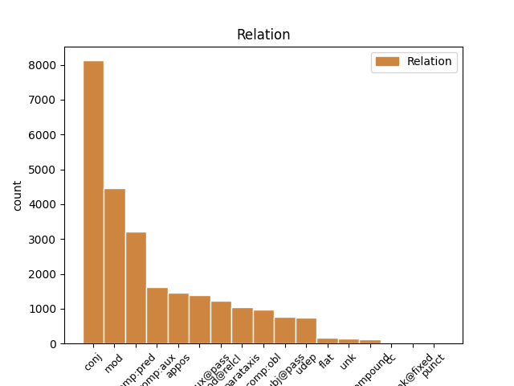
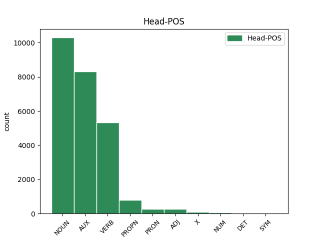
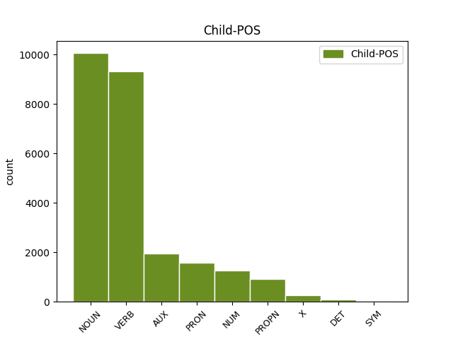

Distribution of features within this leaf



Agreement Rules sorted by frequency.
- When the dependent token is the conjunct(conj) of the head token, and the dependent token is NOUN.
1 Esta _ _ _ _ 0 _ _ _
2 teoría _ _ _ _ 0 _ _ _
3 se _ _ _ _ 0 _ _ _
4 avenía _ _ _ _ 0 _ _ _
5 bien _ _ _ _ 0 _ _ _
6 con _ _ _ _ 0 _ _ _
7 la _ _ _ _ 0 _ _ _
8 creencia _ _ _ _ 0 _ _ _
9 de _ _ _ _ 0 _ _ _
10 el _ _ _ _ 0 _ _ _
11 Romanticismo _ _ _ _ 0 _ _ _
12 en _ _ _ _ 0 _ _ _
13 un _ _ _ _ 0 _ _ _
14 volkgeist _ _ _ _ 0 _ _ _
15 , _ _ _ _ 0 _ _ _
16 " _ _ _ _ 0 _ _ _
17 genio genio NOUN _ Gender=Masc|Number=Sing 0 _ _ _
18 o _ _ _ _ 0 _ _ _
19 espíritu espíritu NOUN _ Gender=Masc|Number=Sing 17 conj _ _
20 de _ _ _ _ 0 _ _ _
21 el _ _ _ _ 0 _ _ _
22 pueblo _ _ _ _ 0 _ _ _
23 " _ _ _ _ 0 _ _ _
24 , _ _ _ _ 0 _ _ _
25 autor _ _ _ _ 0 _ _ _
26 colectivo _ _ _ _ 0 _ _ _
27 y _ _ _ _ 0 _ _ _
28 anónimo _ _ _ _ 0 _ _ _
29 de _ _ _ _ 0 _ _ _
30 una _ _ _ _ 0 _ _ _
31 poesía _ _ _ _ 0 _ _ _
32 nacional _ _ _ _ 0 _ _ _
33 . _ _ _ _ 0 _ _ _
1 Jazmin _ _ _ _ 0 _ _ _
2 es ser AUX _ Mood=Ind|Number=Sing|Person=3|Tense=Pres|VerbForm=Fin 0 _ _ _
3 todo _ _ _ _ 0 _ _ _
4 lo _ _ _ _ 0 _ _ _
5 contrario contrario NOUN _ Gender=Masc|Number=Sing 2 comp:pred _ SpaceAfter=No
6 , _ _ _ _ 0 _ _ _
7 es _ _ _ _ 0 _ _ _
8 tímida _ _ _ _ 0 _ _ _
9 y _ _ _ _ 0 _ _ _
10 callada _ _ _ _ 0 _ _ _
11 , _ _ _ _ 0 _ _ _
12 pero _ _ _ _ 0 _ _ _
13 siempre _ _ _ _ 0 _ _ _
14 es _ _ _ _ 0 _ _ _
15 arrastrada _ _ _ _ 0 _ _ _
16 por _ _ _ _ 0 _ _ _
17 las _ _ _ _ 0 _ _ _
18 locuras _ _ _ _ 0 _ _ _
19 y _ _ _ _ 0 _ _ _
20 travesuras _ _ _ _ 0 _ _ _
21 que _ _ _ _ 0 _ _ _
22 inventa _ _ _ _ 0 _ _ _
23 Alma _ _ _ _ 0 _ _ _
24 . _ _ _ _ 0 _ _ _
1 En _ _ _ _ 0 _ _ _
2 1991 _ _ _ _ 0 _ _ _
3 , _ _ _ _ 0 _ _ _
4 como _ _ _ _ 0 _ _ _
5 ya _ _ _ _ 0 _ _ _
6 está _ _ _ _ 0 _ _ _
7 indicado _ _ _ _ 0 _ _ _
8 en _ _ _ _ 0 _ _ _
9 el _ _ _ _ 0 _ _ _
10 párrafo _ _ _ _ 0 _ _ _
11 anterior _ _ _ _ 0 _ _ _
12 , _ _ _ _ 0 _ _ _
13 se _ _ _ _ 0 _ _ _
14 creó _ _ _ _ 0 _ _ _
15 un _ _ _ _ 0 _ _ _
16 equipo _ _ _ _ 0 _ _ _
17 ad _ _ _ _ 0 _ _ _
18 hoc _ _ _ _ 0 _ _ _
19 para _ _ _ _ 0 _ _ _
20 averiguar _ _ _ _ 0 _ _ _
21 como _ _ _ _ 0 _ _ _
22 se _ _ _ _ 0 _ _ _
23 podía _ _ _ _ 0 _ _ _
24 desarrollar _ _ _ _ 0 _ _ _
25 el _ _ _ _ 0 _ _ _
26 Dialogo _ _ _ _ 0 _ _ _
27 Social _ _ _ _ 0 _ _ _
28 , _ _ _ _ 0 _ _ _
29 este _ _ _ _ 0 _ _ _
30 equipo _ _ _ _ 0 _ _ _
31 estaba _ _ _ _ 0 _ _ _
32 formado _ _ _ _ 0 _ _ _
33 por _ _ _ _ 0 _ _ _
34 representantes _ _ _ _ 0 _ _ _
35 de _ _ _ _ 0 _ _ _
36 todas _ _ _ _ 0 _ _ _
37 las _ _ _ _ 0 _ _ _
38 organizaciones organización NOUN _ Gender=Fem|Number=Plur 0 _ _ _
39 relacionadas relacionado VERB _ Gender=Fem|Number=Plur|VerbForm=Part 38 mod _ _
40 con _ _ _ _ 0 _ _ _
41 CES _ _ _ _ 0 _ _ _
42 , _ _ _ _ 0 _ _ _
43 UNICE _ _ _ _ 0 _ _ _
44 y _ _ _ _ 0 _ _ _
45 CEEP _ _ _ _ 0 _ _ _
46 ; _ _ _ _ 0 _ _ _
1 De _ _ _ _ 0 _ _ _
2 los _ _ _ _ 0 _ _ _
3 714 _ _ _ _ 0 _ _ _
4 habitantes _ _ _ _ 0 _ _ _
5 , _ _ _ _ 0 _ _ _
6 el _ _ _ _ 0 _ _ _
7 municipio _ _ _ _ 0 _ _ _
8 de _ _ _ _ 0 _ _ _
9 Daggett _ _ _ _ 0 _ _ _
10 estaba _ _ _ _ 0 _ _ _
11 compuesto _ _ _ _ 0 _ _ _
12 por _ _ _ _ 0 _ _ _
13 el _ _ _ _ 0 _ _ _
14 93.28 _ _ _ _ 0 _ _ _
15 % _ _ _ _ 0 _ _ _
16 blancos _ _ _ _ 0 _ _ _
17 , _ _ _ _ 0 _ _ _
18 el _ _ _ _ 0 _ _ _
19 2.38 _ _ _ _ 0 _ _ _
20 % _ _ _ _ 0 _ _ _
21 eran _ _ _ _ 0 _ _ _
22 afroamericanos _ _ _ _ 0 _ _ _
23 , _ _ _ _ 0 _ _ _
24 el _ _ _ _ 0 _ _ _
25 0.84 _ _ _ _ 0 _ _ _
26 % _ _ _ _ 0 _ _ _
27 eran _ _ _ _ 0 _ _ _
28 amerindios _ _ _ _ 0 _ _ _
29 , _ _ _ _ 0 _ _ _
30 el _ _ _ _ 0 _ _ _
31 0.56 _ _ _ _ 0 _ _ _
32 % _ _ _ _ 0 _ _ _
33 eran _ _ _ _ 0 _ _ _
34 asiáticos _ _ _ _ 0 _ _ _
35 , _ _ _ _ 0 _ _ _
36 el _ _ _ _ 0 _ _ _
37 0 _ _ _ _ 0 _ _ _
38 % _ _ _ _ 0 _ _ _
39 eran _ _ _ _ 0 _ _ _
40 isleños _ _ _ _ 0 _ _ _
41 de _ _ _ _ 0 _ _ _
42 el _ _ _ _ 0 _ _ _
43 Pacífico _ _ _ _ 0 _ _ _
44 , _ _ _ _ 0 _ _ _
45 el _ _ _ _ 0 _ _ _
46 0.84 _ _ _ _ 0 _ _ _
47 % _ _ _ _ 0 _ _ _
48 eran ser VERB _ Mood=Ind|Number=Plur|Person=3|Tense=Imp|VerbForm=Fin 0 _ _ _
49 de _ _ _ _ 0 _ _ _
50 otras _ _ _ _ 0 _ _ _
51 razas _ _ _ _ 0 _ _ _
52 y _ _ _ _ 0 _ _ _
53 el _ _ _ _ 0 _ _ _
54 2.1 _ _ _ _ 0 _ _ _
55 % _ _ _ _ 0 _ _ _
56 pertenecían pertenecer VERB _ Mood=Ind|Number=Plur|Person=3|Tense=Imp|VerbForm=Fin 48 conj _ _
57 a _ _ _ _ 0 _ _ _
58 dos _ _ _ _ 0 _ _ _
59 o _ _ _ _ 0 _ _ _
60 más _ _ _ _ 0 _ _ _
61 razas _ _ _ _ 0 _ _ _
62 . _ _ _ _ 0 _ _ _
1 En _ _ _ _ 0 _ _ _
2 1991 _ _ _ _ 0 _ _ _
3 , _ _ _ _ 0 _ _ _
4 como _ _ _ _ 0 _ _ _
5 ya _ _ _ _ 0 _ _ _
6 está _ _ _ _ 0 _ _ _
7 indicado _ _ _ _ 0 _ _ _
8 en _ _ _ _ 0 _ _ _
9 el _ _ _ _ 0 _ _ _
10 párrafo _ _ _ _ 0 _ _ _
11 anterior _ _ _ _ 0 _ _ _
12 , _ _ _ _ 0 _ _ _
13 se _ _ _ _ 0 _ _ _
14 creó _ _ _ _ 0 _ _ _
15 un _ _ _ _ 0 _ _ _
16 equipo _ _ _ _ 0 _ _ _
17 ad _ _ _ _ 0 _ _ _
18 hoc _ _ _ _ 0 _ _ _
19 para _ _ _ _ 0 _ _ _
20 averiguar _ _ _ _ 0 _ _ _
21 como _ _ _ _ 0 _ _ _
22 se _ _ _ _ 0 _ _ _
23 podía _ _ _ _ 0 _ _ _
24 desarrollar _ _ _ _ 0 _ _ _
25 el _ _ _ _ 0 _ _ _
26 Dialogo _ _ _ _ 0 _ _ _
27 Social _ _ _ _ 0 _ _ _
28 , _ _ _ _ 0 _ _ _
29 este _ _ _ _ 0 _ _ _
30 equipo _ _ _ _ 0 _ _ _
31 estaba estar AUX _ Mood=Ind|Number=Sing|Person=3|Tense=Imp|VerbForm=Fin 0 _ _ _
32 formado formado VERB _ Gender=Masc|Number=Sing|VerbForm=Part 31 comp:aux@pass _ _
33 por _ _ _ _ 0 _ _ _
34 representantes _ _ _ _ 0 _ _ _
35 de _ _ _ _ 0 _ _ _
36 todas _ _ _ _ 0 _ _ _
37 las _ _ _ _ 0 _ _ _
38 organizaciones _ _ _ _ 0 _ _ _
39 relacionadas _ _ _ _ 0 _ _ _
40 con _ _ _ _ 0 _ _ _
41 CES _ _ _ _ 0 _ _ _
42 , _ _ _ _ 0 _ _ _
43 UNICE _ _ _ _ 0 _ _ _
44 y _ _ _ _ 0 _ _ _
45 CEEP _ _ _ _ 0 _ _ _
46 ; _ _ _ _ 0 _ _ _
1 La _ _ _ _ 0 _ _ _
2 telenovela _ _ _ _ 0 _ _ _
3 gira _ _ _ _ 0 _ _ _
4 en _ _ _ _ 0 _ _ _
5 torno _ _ _ _ 0 _ _ _
6 a _ _ _ _ 0 _ _ _
7 los _ _ _ _ 0 _ _ _
8 dramas _ _ _ _ 0 _ _ _
9 familiares _ _ _ _ 0 _ _ _
10 y _ _ _ _ 0 _ _ _
11 poderes _ _ _ _ 0 _ _ _
12 empresariales _ _ _ _ 0 _ _ _
13 de _ _ _ _ 0 _ _ _
14 dos dos NUM _ Number=Plur|NumType=Card 15 mod _ _
15 familias familia NOUN _ Gender=Fem|Number=Plur 0 _ _ _
16 rivales _ _ _ _ 0 _ _ _
17 . _ _ _ _ 0 _ _ _
1 De _ _ _ _ 0 _ _ _
2 la _ _ _ _ 0 _ _ _
3 Vega _ _ _ _ 0 _ _ _
4 ha _ _ _ _ 0 _ _ _
5 pedido _ _ _ _ 0 _ _ _
6 respetar _ _ _ _ 0 _ _ _
7 los _ _ _ _ 0 _ _ _
8 tiempos _ _ _ _ 0 _ _ _
9 de _ _ _ _ 0 _ _ _
10 los _ _ _ _ 0 _ _ _
11 procesos _ _ _ _ 0 _ _ _
12 y _ _ _ _ 0 _ _ _
13 de _ _ _ _ 0 _ _ _
14 la _ _ _ _ 0 _ _ _
15 misma _ _ _ _ 0 _ _ _
16 manera _ _ _ _ 0 _ _ _
17 que _ _ _ _ 0 _ _ _
18 no _ _ _ _ 0 _ _ _
19 ha _ _ _ _ 0 _ _ _
20 querido _ _ _ _ 0 _ _ _
21 entrar _ _ _ _ 0 _ _ _
22 en _ _ _ _ 0 _ _ _
23 la _ _ _ _ 0 _ _ _
24 salida _ _ _ _ 0 _ _ _
25 de _ _ _ _ 0 _ _ _
26 Corbacho _ _ _ _ 0 _ _ _
27 , _ _ _ _ 0 _ _ _
28 tampoco _ _ _ _ 0 _ _ _
29 lo _ _ _ _ 0 _ _ _
30 ha haber AUX _ Mood=Ind|Number=Sing|Person=3|Tense=Pres|VerbForm=Fin 0 _ _ _
31 hecho hacer VERB _ Gender=Masc|Number=Sing|Tense=Past|VerbForm=Part 30 comp:aux _ _
32 la _ _ _ _ 0 _ _ _
33 posible _ _ _ _ 0 _ _ _
34 salida _ _ _ _ 0 _ _ _
35 de _ _ _ _ 0 _ _ _
36 Trinidad _ _ _ _ 0 _ _ _
37 Jiménez _ _ _ _ 0 _ _ _
38 , _ _ _ _ 0 _ _ _
39 que _ _ _ _ 0 _ _ _
40 le _ _ _ _ 0 _ _ _
41 acompañaba _ _ _ _ 0 _ _ _
42 en _ _ _ _ 0 _ _ _
43 la _ _ _ _ 0 _ _ _
44 sala _ _ _ _ 0 _ _ _
45 de _ _ _ _ 0 _ _ _
46 prensa _ _ _ _ 0 _ _ _
47 . _ _ _ _ 0 _ _ _
1 Con _ _ _ _ 0 _ _ _
2 miras _ _ _ _ 0 _ _ _
3 a _ _ _ _ 0 _ _ _
4 minimizar _ _ _ _ 0 _ _ _
5 cualquier _ _ _ _ 0 _ _ _
6 confusión _ _ _ _ 0 _ _ _
7 con _ _ _ _ 0 _ _ _
8 una _ _ _ _ 0 _ _ _
9 religión _ _ _ _ 0 _ _ _
10 , _ _ _ _ 0 _ _ _
11 el _ _ _ _ 0 _ _ _
12 uso _ _ _ _ 0 _ _ _
13 de _ _ _ _ 0 _ _ _
14 la _ _ _ _ 0 _ _ _
15 palabra palabra NOUN _ Gender=Fem|Number=Sing 0 _ _ _
16 " _ _ _ _ 0 _ _ _
17 templo templo NOUN _ Gender=Masc|Number=Sing 15 appos _ SpaceAfter=No
18 " _ _ _ _ 0 _ _ _
19 para _ _ _ _ 0 _ _ _
20 describir _ _ _ _ 0 _ _ _
21 los _ _ _ _ 0 _ _ _
22 inmuebles _ _ _ _ 0 _ _ _
23 de _ _ _ _ 0 _ _ _
24 los _ _ _ _ 0 _ _ _
25 Shriners _ _ _ _ 0 _ _ _
26 ha _ _ _ _ 0 _ _ _
27 sido _ _ _ _ 0 _ _ _
28 reemplazado _ _ _ _ 0 _ _ _
29 por _ _ _ _ 0 _ _ _
30 la _ _ _ _ 0 _ _ _
31 frase _ _ _ _ 0 _ _ _
32 " _ _ _ _ 0 _ _ _
33 Centro _ _ _ _ 0 _ _ _
34 Shriner _ _ _ _ 0 _ _ _
35 " _ _ _ _ 0 _ _ _
36 , _ _ _ _ 0 _ _ _
37 aunque _ _ _ _ 0 _ _ _
38 en _ _ _ _ 0 _ _ _
39 capítulos _ _ _ _ 0 _ _ _
40 individuales _ _ _ _ 0 _ _ _
41 siguen _ _ _ _ 0 _ _ _
42 siendo _ _ _ _ 0 _ _ _
43 nombrados _ _ _ _ 0 _ _ _
44 como _ _ _ _ 0 _ _ _
45 " _ _ _ _ 0 _ _ _
46 templos _ _ _ _ 0 _ _ _
47 " _ _ _ _ 0 _ _ _
48 . _ _ _ _ 0 _ _ _
1 Jazmin _ _ _ _ 0 _ _ _
2 es ser AUX _ Mood=Ind|Number=Sing|Person=3|Tense=Pres|VerbForm=Fin 0 _ _ _
3 todo _ _ _ _ 0 _ _ _
4 lo _ _ _ _ 0 _ _ _
5 contrario _ _ _ _ 0 _ _ _
6 , _ _ _ _ 0 _ _ _
7 es _ _ _ _ 0 _ _ _
8 tímida _ _ _ _ 0 _ _ _
9 y _ _ _ _ 0 _ _ _
10 callada _ _ _ _ 0 _ _ _
11 , _ _ _ _ 0 _ _ _
12 pero _ _ _ _ 0 _ _ _
13 siempre _ _ _ _ 0 _ _ _
14 es ser AUX _ Mood=Ind|Number=Sing|Person=3|Tense=Pres|VerbForm=Fin 2 conj _ _
15 arrastrada _ _ _ _ 0 _ _ _
16 por _ _ _ _ 0 _ _ _
17 las _ _ _ _ 0 _ _ _
18 locuras _ _ _ _ 0 _ _ _
19 y _ _ _ _ 0 _ _ _
20 travesuras _ _ _ _ 0 _ _ _
21 que _ _ _ _ 0 _ _ _
22 inventa _ _ _ _ 0 _ _ _
23 Alma _ _ _ _ 0 _ _ _
24 . _ _ _ _ 0 _ _ _
1 En _ _ _ _ 0 _ _ _
2 1991 _ _ _ _ 0 _ _ _
3 , _ _ _ _ 0 _ _ _
4 como _ _ _ _ 0 _ _ _
5 ya _ _ _ _ 0 _ _ _
6 está _ _ _ _ 0 _ _ _
7 indicado _ _ _ _ 0 _ _ _
8 en _ _ _ _ 0 _ _ _
9 el _ _ _ _ 0 _ _ _
10 párrafo _ _ _ _ 0 _ _ _
11 anterior _ _ _ _ 0 _ _ _
12 , _ _ _ _ 0 _ _ _
13 se _ _ _ _ 0 _ _ _
14 creó _ _ _ _ 0 _ _ _
15 un _ _ _ _ 0 _ _ _
16 equipo _ _ _ _ 0 _ _ _
17 ad _ _ _ _ 0 _ _ _
18 hoc _ _ _ _ 0 _ _ _
19 para _ _ _ _ 0 _ _ _
20 averiguar _ _ _ _ 0 _ _ _
21 como _ _ _ _ 0 _ _ _
22 se _ _ _ _ 0 _ _ _
23 podía _ _ _ _ 0 _ _ _
24 desarrollar _ _ _ _ 0 _ _ _
25 el _ _ _ _ 0 _ _ _
26 Dialogo _ _ _ _ 0 _ _ _
27 Social _ _ _ _ 0 _ _ _
28 , _ _ _ _ 0 _ _ _
29 este _ _ _ _ 0 _ _ _
30 equipo equipo NOUN _ Gender=Masc|Number=Sing 31 subj@pass _ _
31 estaba estar AUX _ Mood=Ind|Number=Sing|Person=3|Tense=Imp|VerbForm=Fin 0 _ _ _
32 formado _ _ _ _ 0 _ _ _
33 por _ _ _ _ 0 _ _ _
34 representantes _ _ _ _ 0 _ _ _
35 de _ _ _ _ 0 _ _ _
36 todas _ _ _ _ 0 _ _ _
37 las _ _ _ _ 0 _ _ _
38 organizaciones _ _ _ _ 0 _ _ _
39 relacionadas _ _ _ _ 0 _ _ _
40 con _ _ _ _ 0 _ _ _
41 CES _ _ _ _ 0 _ _ _
42 , _ _ _ _ 0 _ _ _
43 UNICE _ _ _ _ 0 _ _ _
44 y _ _ _ _ 0 _ _ _
45 CEEP _ _ _ _ 0 _ _ _
46 ; _ _ _ _ 0 _ _ _
1 Ahora _ _ _ _ 0 _ _ _
2 se _ _ _ _ 0 _ _ _
3 aunan _ _ _ _ 0 _ _ _
4 cocina _ _ _ _ 0 _ _ _
5 y _ _ _ _ 0 _ _ _
6 entorno _ _ _ _ 0 _ _ _
7 , _ _ _ _ 0 _ _ _
8 me yo PRON _ Case=Acc,Dat|Number=Sing|Person=1|PrepCase=Npr|PronType=Prs|Reflex=Yes 9 comp:obl _ _
9 encanto encanto VERB _ Mood=Ind|Number=Sing|Person=1|Tense=Pres|VerbForm=Fin 0 _ _ _
10 la _ _ _ _ 0 _ _ _
11 bodega _ _ _ _ 0 _ _ _
12 , _ _ _ _ 0 _ _ _
13 las _ _ _ _ 0 _ _ _
14 sillas _ _ _ _ 0 _ _ _
15 son _ _ _ _ 0 _ _ _
16 comodisimas _ _ _ _ 0 _ _ _
17 , _ _ _ _ 0 _ _ _
18 la _ _ _ _ 0 _ _ _
19 iluminacion _ _ _ _ 0 _ _ _
20 es _ _ _ _ 0 _ _ _
21 excepcional _ _ _ _ 0 _ _ _
22 , _ _ _ _ 0 _ _ _
23 alcanzas _ _ _ _ 0 _ _ _
24 un _ _ _ _ 0 _ _ _
25 grado _ _ _ _ 0 _ _ _
26 de _ _ _ _ 0 _ _ _
27 satisfaccion _ _ _ _ 0 _ _ _
28 que _ _ _ _ 0 _ _ _
29 no _ _ _ _ 0 _ _ _
30 se _ _ _ _ 0 _ _ _
31 puede _ _ _ _ 0 _ _ _
32 describir _ _ _ _ 0 _ _ _
33 , _ _ _ _ 0 _ _ _
34 hay _ _ _ _ 0 _ _ _
35 que _ _ _ _ 0 _ _ _
36 probar _ _ _ _ 0 _ _ _
37 lo _ _ _ _ 0 _ _ _
38 , _ _ _ _ 0 _ _ _
39 es _ _ _ _ 0 _ _ _
40 la _ _ _ _ 0 _ _ _
41 primera _ _ _ _ 0 _ _ _
42 vez _ _ _ _ 0 _ _ _
43 en _ _ _ _ 0 _ _ _
44 mi _ _ _ _ 0 _ _ _
45 vda _ _ _ _ 0 _ _ _
46 que _ _ _ _ 0 _ _ _
47 una _ _ _ _ 0 _ _ _
48 cocina _ _ _ _ 0 _ _ _
49 me _ _ _ _ 0 _ _ _
50 emociona _ _ _ _ 0 _ _ _
51 hasta _ _ _ _ 0 _ _ _
52 ese _ _ _ _ 0 _ _ _
53 punto _ _ _ _ 0 _ _ _
54 . _ _ _ _ 0 _ _ _
1 El _ _ _ _ 0 _ _ _
2 primer _ _ _ _ 0 _ _ _
3 gol gol NOUN _ Gender=Masc|Number=Sing 0 _ _ _
4 internacional _ _ _ _ 0 _ _ _
5 que _ _ _ _ 0 _ _ _
6 Bambang _ _ _ _ 0 _ _ _
7 anotó anotar VERB _ Mood=Ind|Number=Sing|Person=3|Tense=Past|VerbForm=Fin 3 mod@relcl _ _
8 fue _ _ _ _ 0 _ _ _
9 en _ _ _ _ 0 _ _ _
10 la _ _ _ _ 0 _ _ _
11 Copa _ _ _ _ 0 _ _ _
12 de _ _ _ _ 0 _ _ _
13 el _ _ _ _ 0 _ _ _
14 Tigre _ _ _ _ 0 _ _ _
15 en _ _ _ _ 0 _ _ _
16 el _ _ _ _ 0 _ _ _
17 2002 _ _ _ _ 0 _ _ _
18 en _ _ _ _ 0 _ _ _
19 un _ _ _ _ 0 _ _ _
20 partido _ _ _ _ 0 _ _ _
21 contra _ _ _ _ 0 _ _ _
22 la _ _ _ _ 0 _ _ _
23 Selección _ _ _ _ 0 _ _ _
24 de _ _ _ _ 0 _ _ _
25 fútbol _ _ _ _ 0 _ _ _
26 de _ _ _ _ 0 _ _ _
27 Malasia _ _ _ _ 0 _ _ _
28 . _ _ _ _ 0 _ _ _
1 Una _ _ _ _ 0 _ _ _
2 vez _ _ _ _ 0 _ _ _
3 que _ _ _ _ 0 _ _ _
4 el _ _ _ _ 0 _ _ _
5 Hijo _ _ _ _ 0 _ _ _
6 de _ _ _ _ 0 _ _ _
7 Krypton _ _ _ _ 0 _ _ _
8 suelta suelto VERB _ Mood=Ind|Number=Sing|Person=3|Tense=Pres|VerbForm=Fin 0 _ _ _
9 el _ _ _ _ 0 _ _ _
10 misil _ _ _ _ 0 _ _ _
11 , _ _ _ _ 0 _ _ _
12 este _ _ _ _ 0 _ _ _
13 intenta intentar VERB _ Mood=Ind|Number=Sing|Person=3|Tense=Pres|VerbForm=Fin 8 parataxis _ _
14 huir _ _ _ _ 0 _ _ _
15 de _ _ _ _ 0 _ _ _
16 el _ _ _ _ 0 _ _ _
17 lugar _ _ _ _ 0 _ _ _
18 pero _ _ _ _ 0 _ _ _
19 es _ _ _ _ 0 _ _ _
20 atrapado _ _ _ _ 0 _ _ _
21 en _ _ _ _ 0 _ _ _
22 la _ _ _ _ 0 _ _ _
23 explosión _ _ _ _ 0 _ _ _
24 . _ _ _ _ 0 _ _ _
1 Ese _ _ _ _ 0 _ _ _
2 mismo _ _ _ _ 0 _ _ _
3 año año NOUN _ Gender=Masc|Number=Sing 4 udep _ _
4 participó participar VERB _ Mood=Ind|Number=Sing|Person=3|Tense=Past|VerbForm=Fin 0 _ _ _
5 con _ _ _ _ 0 _ _ _
6 el _ _ _ _ 0 _ _ _
7 equipo _ _ _ _ 0 _ _ _
8 ruso _ _ _ _ 0 _ _ _
9 en _ _ _ _ 0 _ _ _
10 la _ _ _ _ 0 _ _ _
11 Olimpiada _ _ _ _ 0 _ _ _
12 de _ _ _ _ 0 _ _ _
13 Ajedrez _ _ _ _ 0 _ _ _
14 de _ _ _ _ 0 _ _ _
15 Estambul _ _ _ _ 0 _ _ _
16 y _ _ _ _ 0 _ _ _
17 obtuvo _ _ _ _ 0 _ _ _
18 la _ _ _ _ 0 _ _ _
19 medalla _ _ _ _ 0 _ _ _
20 de _ _ _ _ 0 _ _ _
21 bronce _ _ _ _ 0 _ _ _
22 en _ _ _ _ 0 _ _ _
23 tanto _ _ _ _ 0 _ _ _
24 que _ _ _ _ 0 _ _ _
25 mejor _ _ _ _ 0 _ _ _
26 segunda _ _ _ _ 0 _ _ _
27 jugador _ _ _ _ 0 _ _ _
28 reservista _ _ _ _ 0 _ _ _
29 de _ _ _ _ 0 _ _ _
30 el _ _ _ _ 0 _ _ _
31 torneo _ _ _ _ 0 _ _ _
32 ( _ _ _ _ 0 _ _ _
33 los _ _ _ _ 0 _ _ _
34 equipos _ _ _ _ 0 _ _ _
35 estaban _ _ _ _ 0 _ _ _
36 formados _ _ _ _ 0 _ _ _
37 por _ _ _ _ 0 _ _ _
38 cuatro _ _ _ _ 0 _ _ _
39 jugadores _ _ _ _ 0 _ _ _
40 titulares _ _ _ _ 0 _ _ _
41 y _ _ _ _ 0 _ _ _
42 dos _ _ _ _ 0 _ _ _
43 reservas _ _ _ _ 0 _ _ _
44 ) _ _ _ _ 0 _ _ _
45 . _ _ _ _ 0 _ _ _
1 Joramun _ _ _ _ 0 _ _ _
2 se _ _ _ _ 0 _ _ _
3 supone _ _ _ _ 0 _ _ _
4 que _ _ _ _ 0 _ _ _
5 era _ _ _ _ 0 _ _ _
6 un _ _ _ _ 0 _ _ _
7 legendario _ _ _ _ 0 _ _ _
8 Rey _ _ _ _ 0 _ _ _
9 - _ _ _ _ 0 _ _ _
10 Más _ _ _ _ 0 _ _ _
11 - _ _ _ _ 0 _ _ _
12 Allá _ _ _ _ 0 _ _ _
13 - _ _ _ _ 0 _ _ _
14 de _ _ _ _ 0 _ _ _
15 el _ _ _ _ 0 _ _ _
16 - _ _ _ _ 0 _ _ _
17 Muro _ _ _ _ 0 _ _ _
18 , _ _ _ _ 0 _ _ _
19 a _ _ _ _ 0 _ _ _
20 el _ _ _ _ 0 _ _ _
21 norte _ _ _ _ 0 _ _ _
22 de _ _ _ _ 0 _ _ _
23 los _ _ _ _ 0 _ _ _
24 Siete siete PROPN _ Number=Plur 25 mod _ _
25 Reinos reino PROPN _ Gender=Masc|Number=Plur 0 _ _ _
26 . _ _ _ _ 0 _ _ _
1 En _ _ _ _ 0 _ _ _
2 el _ _ _ _ 0 _ _ _
3 caso _ _ _ _ 0 _ _ _
4 de _ _ _ _ 0 _ _ _
5 estrellas estrella NOUN _ Number=Plur 0 _ _ _
6 variables variable NOUN _ Number=Plur 5 mod _ _
7 regulares _ _ _ _ 0 _ _ _
8 , _ _ _ _ 0 _ _ _
9 puede _ _ _ _ 0 _ _ _
10 determinar _ _ _ _ 0 _ _ _
11 se _ _ _ _ 0 _ _ _
12 con _ _ _ _ 0 _ _ _
13 precisión _ _ _ _ 0 _ _ _
14 su _ _ _ _ 0 _ _ _
15 período _ _ _ _ 0 _ _ _
16 de _ _ _ _ 0 _ _ _
17 variabilidad _ _ _ _ 0 _ _ _
18 y _ _ _ _ 0 _ _ _
19 la _ _ _ _ 0 _ _ _
20 amplitud _ _ _ _ 0 _ _ _
21 de _ _ _ _ 0 _ _ _
22 el _ _ _ _ 0 _ _ _
23 mismo _ _ _ _ 0 _ _ _
24 . _ _ _ _ 0 _ _ _
1 A _ _ _ _ 0 _ _ _
2 continuación _ _ _ _ 0 _ _ _
3 , _ _ _ _ 0 _ _ _
4 sonarán _ _ _ _ 0 _ _ _
5 los _ _ _ _ 0 _ _ _
6 ritmos _ _ _ _ 0 _ _ _
7 más _ _ _ _ 0 _ _ _
8 intensos _ _ _ _ 0 _ _ _
9 de _ _ _ _ 0 _ _ _
10 los _ _ _ _ 0 _ _ _
11 llanos _ _ _ _ 0 _ _ _
12 interpretados _ _ _ _ 0 _ _ _
13 por _ _ _ _ 0 _ _ _
14 una _ _ _ _ 0 _ _ _
15 agrupación agrupación NOUN _ Gender=Fem|Number=Sing 0 _ _ _
16 que _ _ _ _ 0 _ _ _
17 romperá _ _ _ _ 0 _ _ _
18 esquemas _ _ _ _ 0 _ _ _
19 : _ _ _ _ 0 _ _ _
20 el _ _ _ _ 0 _ _ _
21 Ensamble ensamble PROPN _ Gender=Masc|Number=Sing 15 appos _ _
22 de _ _ _ _ 0 _ _ _
23 Arpas _ _ _ _ 0 _ _ _
24 de _ _ _ _ 0 _ _ _
25 la _ _ _ _ 0 _ _ _
26 Orquesta _ _ _ _ 0 _ _ _
27 de _ _ _ _ 0 _ _ _
28 Música _ _ _ _ 0 _ _ _
29 Popular _ _ _ _ 0 _ _ _
30 de _ _ _ _ 0 _ _ _
31 el _ _ _ _ 0 _ _ _
32 Estado _ _ _ _ 0 _ _ _
33 Guárico _ _ _ _ 0 _ _ _
34 , _ _ _ _ 0 _ _ _
35 integrado _ _ _ _ 0 _ _ _
36 por _ _ _ _ 0 _ _ _
37 14 _ _ _ _ 0 _ _ _
38 ejecutantes _ _ _ _ 0 _ _ _
39 , _ _ _ _ 0 _ _ _
40 todos _ _ _ _ 0 _ _ _
41 formados _ _ _ _ 0 _ _ _
42 por _ _ _ _ 0 _ _ _
43 El _ _ _ _ 0 _ _ _
44 Sistema _ _ _ _ 0 _ _ _
45 , _ _ _ _ 0 _ _ _
46 siendo _ _ _ _ 0 _ _ _
47 algunos _ _ _ _ 0 _ _ _
48 de _ _ _ _ 0 _ _ _
49 ellos _ _ _ _ 0 _ _ _
50 ganadores _ _ _ _ 0 _ _ _
51 de _ _ _ _ 0 _ _ _
52 el _ _ _ _ 0 _ _ _
53 reconocido _ _ _ _ 0 _ _ _
54 Festival _ _ _ _ 0 _ _ _
55 Internacional _ _ _ _ 0 _ _ _
56 de _ _ _ _ 0 _ _ _
57 Arpas _ _ _ _ 0 _ _ _
58 Infantil _ _ _ _ 0 _ _ _
59 y _ _ _ _ 0 _ _ _
60 Adultos _ _ _ _ 0 _ _ _
61 de _ _ _ _ 0 _ _ _
62 Villavicencio _ _ _ _ 0 _ _ _
63 , _ _ _ _ 0 _ _ _
64 Colombia _ _ _ _ 0 _ _ _
65 . _ _ _ _ 0 _ _ _
1 Tahai _ _ _ _ 0 _ _ _
2 es ser AUX _ Mood=Ind|Number=Sing|Person=3|Tense=Pres|VerbForm=Fin 0 _ _ _
3 uno uno PRON _ Gender=Masc|Number=Sing|PronType=Ind 2 comp:pred _ _
4 de _ _ _ _ 0 _ _ _
5 los _ _ _ _ 0 _ _ _
6 lugares _ _ _ _ 0 _ _ _
7 más _ _ _ _ 0 _ _ _
8 lindos _ _ _ _ 0 _ _ _
9 de _ _ _ _ 0 _ _ _
10 la _ _ _ _ 0 _ _ _
11 isla _ _ _ _ 0 _ _ _
12 , _ _ _ _ 0 _ _ _
13 y _ _ _ _ 0 _ _ _
14 estar _ _ _ _ 0 _ _ _
15 hospedado _ _ _ _ 0 _ _ _
16 en _ _ _ _ 0 _ _ _
17 pleno _ _ _ _ 0 _ _ _
18 mirador _ _ _ _ 0 _ _ _
19 es _ _ _ _ 0 _ _ _
20 increíble _ _ _ _ 0 _ _ _
21 . _ _ _ _ 0 _ _ _
1 En _ _ _ _ 0 _ _ _
2 estos _ _ _ _ 0 _ _ _
3 trabajos _ _ _ _ 0 _ _ _
4 se _ _ _ _ 0 _ _ _
5 pusieron _ _ _ _ 0 _ _ _
6 a _ _ _ _ 0 _ _ _
7 el _ _ _ _ 0 _ _ _
8 descubierto _ _ _ _ 0 _ _ _
9 25 _ _ _ _ 0 _ _ _
10 vanos vano NOUN _ Gender=Masc|Number=Plur 0 _ _ _
11 correspondientes _ _ _ _ 0 _ _ _
12 a _ _ _ _ 0 _ _ _
13 ventanas _ _ _ _ 0 _ _ _
14 saeteras _ _ _ _ 0 _ _ _
15 que _ _ _ _ 0 _ _ _
16 habían haber AUX _ Mood=Ind|Number=Plur|Person=3|Tense=Imp|VerbForm=Fin 10 mod@relcl _ _
17 sido _ _ _ _ 0 _ _ _
18 tapiadas _ _ _ _ 0 _ _ _
19 en _ _ _ _ 0 _ _ _
20 los _ _ _ _ 0 _ _ _
21 siglos _ _ _ _ 0 _ _ _
22 anteriores _ _ _ _ 0 _ _ _
23 . _ _ _ _ 0 _ _ _
1 En _ _ _ _ 0 _ _ _
2 1991 _ _ _ _ 0 _ _ _
3 , _ _ _ _ 0 _ _ _
4 como _ _ _ _ 0 _ _ _
5 ya _ _ _ _ 0 _ _ _
6 está _ _ _ _ 0 _ _ _
7 indicado _ _ _ _ 0 _ _ _
8 en _ _ _ _ 0 _ _ _
9 el _ _ _ _ 0 _ _ _
10 párrafo _ _ _ _ 0 _ _ _
11 anterior _ _ _ _ 0 _ _ _
12 , _ _ _ _ 0 _ _ _
13 se _ _ _ _ 0 _ _ _
14 creó crear VERB _ Mood=Ind|Number=Sing|Person=3|Tense=Past|VerbForm=Fin 0 _ _ _
15 un _ _ _ _ 0 _ _ _
16 equipo _ _ _ _ 0 _ _ _
17 ad _ _ _ _ 0 _ _ _
18 hoc _ _ _ _ 0 _ _ _
19 para _ _ _ _ 0 _ _ _
20 averiguar _ _ _ _ 0 _ _ _
21 como _ _ _ _ 0 _ _ _
22 se _ _ _ _ 0 _ _ _
23 podía _ _ _ _ 0 _ _ _
24 desarrollar _ _ _ _ 0 _ _ _
25 el _ _ _ _ 0 _ _ _
26 Dialogo _ _ _ _ 0 _ _ _
27 Social _ _ _ _ 0 _ _ _
28 , _ _ _ _ 0 _ _ _
29 este _ _ _ _ 0 _ _ _
30 equipo _ _ _ _ 0 _ _ _
31 estaba estar AUX _ Mood=Ind|Number=Sing|Person=3|Tense=Imp|VerbForm=Fin 14 parataxis _ _
32 formado _ _ _ _ 0 _ _ _
33 por _ _ _ _ 0 _ _ _
34 representantes _ _ _ _ 0 _ _ _
35 de _ _ _ _ 0 _ _ _
36 todas _ _ _ _ 0 _ _ _
37 las _ _ _ _ 0 _ _ _
38 organizaciones _ _ _ _ 0 _ _ _
39 relacionadas _ _ _ _ 0 _ _ _
40 con _ _ _ _ 0 _ _ _
41 CES _ _ _ _ 0 _ _ _
42 , _ _ _ _ 0 _ _ _
43 UNICE _ _ _ _ 0 _ _ _
44 y _ _ _ _ 0 _ _ _
45 CEEP _ _ _ _ 0 _ _ _
46 ; _ _ _ _ 0 _ _ _
1 Con _ _ _ _ 0 _ _ _
2 miras _ _ _ _ 0 _ _ _
3 a _ _ _ _ 0 _ _ _
4 minimizar _ _ _ _ 0 _ _ _
5 cualquier _ _ _ _ 0 _ _ _
6 confusión _ _ _ _ 0 _ _ _
7 con _ _ _ _ 0 _ _ _
8 una _ _ _ _ 0 _ _ _
9 religión _ _ _ _ 0 _ _ _
10 , _ _ _ _ 0 _ _ _
11 el _ _ _ _ 0 _ _ _
12 uso _ _ _ _ 0 _ _ _
13 de _ _ _ _ 0 _ _ _
14 la _ _ _ _ 0 _ _ _
15 palabra _ _ _ _ 0 _ _ _
16 " _ _ _ _ 0 _ _ _
17 templo _ _ _ _ 0 _ _ _
18 " _ _ _ _ 0 _ _ _
19 para _ _ _ _ 0 _ _ _
20 describir _ _ _ _ 0 _ _ _
21 los _ _ _ _ 0 _ _ _
22 inmuebles _ _ _ _ 0 _ _ _
23 de _ _ _ _ 0 _ _ _
24 los _ _ _ _ 0 _ _ _
25 Shriners _ _ _ _ 0 _ _ _
26 ha haber AUX _ Mood=Ind|Number=Sing|Person=3|Tense=Pres|VerbForm=Fin 0 _ _ _
27 sido ser AUX _ Gender=Masc|Number=Sing|Tense=Past|VerbForm=Part 26 comp:aux _ _
28 reemplazado _ _ _ _ 0 _ _ _
29 por _ _ _ _ 0 _ _ _
30 la _ _ _ _ 0 _ _ _
31 frase _ _ _ _ 0 _ _ _
32 " _ _ _ _ 0 _ _ _
33 Centro _ _ _ _ 0 _ _ _
34 Shriner _ _ _ _ 0 _ _ _
35 " _ _ _ _ 0 _ _ _
36 , _ _ _ _ 0 _ _ _
37 aunque _ _ _ _ 0 _ _ _
38 en _ _ _ _ 0 _ _ _
39 capítulos _ _ _ _ 0 _ _ _
40 individuales _ _ _ _ 0 _ _ _
41 siguen _ _ _ _ 0 _ _ _
42 siendo _ _ _ _ 0 _ _ _
43 nombrados _ _ _ _ 0 _ _ _
44 como _ _ _ _ 0 _ _ _
45 " _ _ _ _ 0 _ _ _
46 templos _ _ _ _ 0 _ _ _
47 " _ _ _ _ 0 _ _ _
48 . _ _ _ _ 0 _ _ _
1 Mauricio mauricio PROPN _ Gender=Masc|Number=Sing 0 _ _ _
2 Bernardo _ _ _ _ 0 _ _ _
3 Victorino victorino PROPN _ Gender=Masc|Number=Sing 1 flat _ _
4 Dansilio _ _ _ _ 0 _ _ _
5 ( _ _ _ _ 0 _ _ _
6 Montevideo _ _ _ _ 0 _ _ _
7 , _ _ _ _ 0 _ _ _
8 Uruguay _ _ _ _ 0 _ _ _
9 , _ _ _ _ 0 _ _ _
10 11 _ _ _ _ 0 _ _ _
11 de _ _ _ _ 0 _ _ _
12 octubre _ _ _ _ 0 _ _ _
13 de _ _ _ _ 0 _ _ _
14 1982 _ _ _ _ 0 _ _ _
15 ) _ _ _ _ 0 _ _ _
16 es _ _ _ _ 0 _ _ _
17 un _ _ _ _ 0 _ _ _
18 futbolista _ _ _ _ 0 _ _ _
19 uruguayo _ _ _ _ 0 _ _ _
20 . _ _ _ _ 0 _ _ _
1 De _ _ _ _ 0 _ _ _
2 las _ _ _ _ 0 _ _ _
3 8 _ _ _ _ 0 _ _ _
4 porciones _ _ _ _ 0 _ _ _
5 , _ _ _ _ 0 _ _ _
6 cuatro _ _ _ _ 0 _ _ _
7 correspondieron _ _ _ _ 0 _ _ _
8 a _ _ _ _ 0 _ _ _
9 el _ _ _ _ 0 _ _ _
10 rey _ _ _ _ 0 _ _ _
11 , _ _ _ _ 0 _ _ _
12 una _ _ _ _ 0 _ _ _
13 a _ _ _ _ 0 _ _ _
14 el _ _ _ _ 0 _ _ _
15 conde _ _ _ _ 0 _ _ _
16 de _ _ _ _ 0 _ _ _
17 el _ _ _ _ 0 _ _ _
18 Rosellón _ _ _ _ 0 _ _ _
19 Nuño _ _ _ _ 0 _ _ _
20 Sánchez _ _ _ _ 0 _ _ _
21 , _ _ _ _ 0 _ _ _
22 una _ _ _ _ 0 _ _ _
23 a _ _ _ _ 0 _ _ _
24 el _ _ _ _ 0 _ _ _
25 obispo _ _ _ _ 0 _ _ _
26 de _ _ _ _ 0 _ _ _
27 Barcelona _ _ _ _ 0 _ _ _
28 Berenguer _ _ _ _ 0 _ _ _
29 de _ _ _ _ 0 _ _ _
30 Palou _ _ _ _ 0 _ _ _
31 , _ _ _ _ 0 _ _ _
32 una uno NUM _ Gender=Fem|Number=Sing|NumType=Card 0 _ _ _
33 a _ _ _ _ 0 _ _ _
34 el _ _ _ _ 0 _ _ _
35 Conde _ _ _ _ 0 _ _ _
36 de _ _ _ _ 0 _ _ _
37 Ampurias _ _ _ _ 0 _ _ _
38 y _ _ _ _ 0 _ _ _
39 finalmente _ _ _ _ 0 _ _ _
40 otra otro PRON _ Gender=Fem|Number=Sing|PronType=Ind 32 conj _ _
41 a _ _ _ _ 0 _ _ _
42 el _ _ _ _ 0 _ _ _
43 vizconde _ _ _ _ 0 _ _ _
44 de _ _ _ _ 0 _ _ _
45 Bearn _ _ _ _ 0 _ _ _
46 . _ _ _ _ 0 _ _ _
1 Con _ _ _ _ 0 _ _ _
2 miras _ _ _ _ 0 _ _ _
3 a _ _ _ _ 0 _ _ _
4 minimizar _ _ _ _ 0 _ _ _
5 cualquier _ _ _ _ 0 _ _ _
6 confusión _ _ _ _ 0 _ _ _
7 con _ _ _ _ 0 _ _ _
8 una _ _ _ _ 0 _ _ _
9 religión _ _ _ _ 0 _ _ _
10 , _ _ _ _ 0 _ _ _
11 el _ _ _ _ 0 _ _ _
12 uso _ _ _ _ 0 _ _ _
13 de _ _ _ _ 0 _ _ _
14 la _ _ _ _ 0 _ _ _
15 palabra _ _ _ _ 0 _ _ _
16 " _ _ _ _ 0 _ _ _
17 templo _ _ _ _ 0 _ _ _
18 " _ _ _ _ 0 _ _ _
19 para _ _ _ _ 0 _ _ _
20 describir _ _ _ _ 0 _ _ _
21 los _ _ _ _ 0 _ _ _
22 inmuebles _ _ _ _ 0 _ _ _
23 de _ _ _ _ 0 _ _ _
24 los _ _ _ _ 0 _ _ _
25 Shriners _ _ _ _ 0 _ _ _
26 ha _ _ _ _ 0 _ _ _
27 sido _ _ _ _ 0 _ _ _
28 reemplazado _ _ _ _ 0 _ _ _
29 por _ _ _ _ 0 _ _ _
30 la _ _ _ _ 0 _ _ _
31 frase _ _ _ _ 0 _ _ _
32 " _ _ _ _ 0 _ _ _
33 Centro _ _ _ _ 0 _ _ _
34 Shriner _ _ _ _ 0 _ _ _
35 " _ _ _ _ 0 _ _ _
36 , _ _ _ _ 0 _ _ _
37 aunque _ _ _ _ 0 _ _ _
38 en _ _ _ _ 0 _ _ _
39 capítulos _ _ _ _ 0 _ _ _
40 individuales _ _ _ _ 0 _ _ _
41 siguen seguir VERB _ Mood=Ind|Number=Plur|Person=3|Tense=Pres|VerbForm=Fin 0 _ _ _
42 siendo _ _ _ _ 0 _ _ _
43 nombrados nombrado VERB _ Gender=Masc|Number=Plur|Tense=Past|VerbForm=Part 41 comp:pred _ _
44 como _ _ _ _ 0 _ _ _
45 " _ _ _ _ 0 _ _ _
46 templos _ _ _ _ 0 _ _ _
47 " _ _ _ _ 0 _ _ _
48 . _ _ _ _ 0 _ _ _
1 La _ _ _ _ 0 _ _ _
2 operación operación NOUN _ Gender=Fem|Number=Sing 0 _ _ _
3 salida salida NOUN _ Gender=Fem|Number=Sing|VerbForm=Part 2 compound _ _
4 de _ _ _ _ 0 _ _ _
5 el _ _ _ _ 0 _ _ _
6 FC _ _ _ _ 0 _ _ _
7 Barcelona _ _ _ _ 0 _ _ _
8 para _ _ _ _ 0 _ _ _
9 la _ _ _ _ 0 _ _ _
10 temporada _ _ _ _ 0 _ _ _
11 2011 _ _ _ _ 0 _ _ _
12 / _ _ _ _ 0 _ _ _
13 2012 _ _ _ _ 0 _ _ _
14 va _ _ _ _ 0 _ _ _
15 cogiendo _ _ _ _ 0 _ _ _
16 forma _ _ _ _ 0 _ _ _
17 y _ _ _ _ 0 _ _ _
18 ya _ _ _ _ 0 _ _ _
19 han _ _ _ _ 0 _ _ _
20 dado _ _ _ _ 0 _ _ _
21 oficialmente _ _ _ _ 0 _ _ _
22 las _ _ _ _ 0 _ _ _
23 bajas _ _ _ _ 0 _ _ _
24 que _ _ _ _ 0 _ _ _
25 irán _ _ _ _ 0 _ _ _
26 acoplando _ _ _ _ 0 _ _ _
27 se _ _ _ _ 0 _ _ _
28 a _ _ _ _ 0 _ _ _
29 otros _ _ _ _ 0 _ _ _
30 clubes _ _ _ _ 0 _ _ _
31 y _ _ _ _ 0 _ _ _
32 de _ _ _ _ 0 _ _ _
33 el _ _ _ _ 0 _ _ _
34 Barça _ _ _ _ 0 _ _ _
35 B _ _ _ _ 0 _ _ _
36 saldrán _ _ _ _ 0 _ _ _
37 varios _ _ _ _ 0 _ _ _
38 futbolistas _ _ _ _ 0 _ _ _
39 que _ _ _ _ 0 _ _ _
40 no _ _ _ _ 0 _ _ _
41 tienen _ _ _ _ 0 _ _ _
42 sitio _ _ _ _ 0 _ _ _
43 en _ _ _ _ 0 _ _ _
44 el _ _ _ _ 0 _ _ _
45 segundo _ _ _ _ 0 _ _ _
46 equipo _ _ _ _ 0 _ _ _
47 tras _ _ _ _ 0 _ _ _
48 dar _ _ _ _ 0 _ _ _
49 el _ _ _ _ 0 _ _ _
50 salto _ _ _ _ 0 _ _ _
51 a _ _ _ _ 0 _ _ _
52 algún _ _ _ _ 0 _ _ _
53 grande _ _ _ _ 0 _ _ _
54 , _ _ _ _ 0 _ _ _
55 entre _ _ _ _ 0 _ _ _
56 ellos _ _ _ _ 0 _ _ _
57 el _ _ _ _ 0 _ _ _
58 Betis _ _ _ _ 0 _ _ _
59 , _ _ _ _ 0 _ _ _
60 Sevilla _ _ _ _ 0 _ _ _
61 y _ _ _ _ 0 _ _ _
62 otros _ _ _ _ 0 _ _ _
63 más _ _ _ _ 0 _ _ _
64 de _ _ _ _ 0 _ _ _
65 la _ _ _ _ 0 _ _ _
66 primera _ _ _ _ 0 _ _ _
67 división _ _ _ _ 0 _ _ _
68 . _ _ _ _ 0 _ _ _
1 En _ _ _ _ 0 _ _ _
2 2006 _ _ _ _ 0 _ _ _
3 fue ser AUX _ Mood=Ind|Number=Sing|Person=3|Tense=Past|VerbForm=Fin 4 comp:pred _ _
4 electo electo VERB _ Gender=Masc|Number=Sing|Tense=Past|VerbForm=Part 0 _ _ _
5 diputado _ _ _ _ 0 _ _ _
6 federal _ _ _ _ 0 _ _ _
7 a _ _ _ _ 0 _ _ _
8 la _ _ _ _ 0 _ _ _
9 LX _ _ _ _ 0 _ _ _
10 Legislatura _ _ _ _ 0 _ _ _
11 . _ _ _ _ 0 _ _ _
1 Comarca _ _ _ _ 0 _ _ _
2 serrana _ _ _ _ 0 _ _ _
3 y _ _ _ _ 0 _ _ _
4 con _ _ _ _ 0 _ _ _
5 pretensiones _ _ _ _ 0 _ _ _
6 mineras _ _ _ _ 0 _ _ _
7 ( _ _ _ _ 0 _ _ _
8 carbón carbón NOUN _ Gender=Masc|Number=Sing 0 _ _ _
9 y _ _ _ _ 0 _ _ _
10 cobre cobre PROPN _ Gender=Masc|Number=Sing 8 conj _ SpaceAfter=No
11 ) _ _ _ _ 0 _ _ _
12 de _ _ _ _ 0 _ _ _
13 vieja _ _ _ _ 0 _ _ _
14 historia _ _ _ _ 0 _ _ _
15 que _ _ _ _ 0 _ _ _
16 gira _ _ _ _ 0 _ _ _
17 en _ _ _ _ 0 _ _ _
18 torno _ _ _ _ 0 _ _ _
19 a _ _ _ _ 0 _ _ _
20 dos _ _ _ _ 0 _ _ _
21 monasterios _ _ _ _ 0 _ _ _
22 medievales _ _ _ _ 0 _ _ _
23 : _ _ _ _ 0 _ _ _
24 San _ _ _ _ 0 _ _ _
25 Cristóbal _ _ _ _ 0 _ _ _
26 de _ _ _ _ 0 _ _ _
27 Ibeas _ _ _ _ 0 _ _ _
28 , _ _ _ _ 0 _ _ _
29 de _ _ _ _ 0 _ _ _
30 el _ _ _ _ 0 _ _ _
31 cual _ _ _ _ 0 _ _ _
32 no _ _ _ _ 0 _ _ _
33 queda _ _ _ _ 0 _ _ _
34 casi _ _ _ _ 0 _ _ _
35 ni _ _ _ _ 0 _ _ _
36 la _ _ _ _ 0 _ _ _
37 memoria _ _ _ _ 0 _ _ _
38 de _ _ _ _ 0 _ _ _
39 su _ _ _ _ 0 _ _ _
40 emplazamiento _ _ _ _ 0 _ _ _
41 , _ _ _ _ 0 _ _ _
42 y _ _ _ _ 0 _ _ _
43 el _ _ _ _ 0 _ _ _
44 de _ _ _ _ 0 _ _ _
45 Santa _ _ _ _ 0 _ _ _
46 María _ _ _ _ 0 _ _ _
47 de _ _ _ _ 0 _ _ _
48 Bujedo _ _ _ _ 0 _ _ _
49 . _ _ _ _ 0 _ _ _
1 A _ _ _ _ 0 _ _ _
2 continuación _ _ _ _ 0 _ _ _
3 , _ _ _ _ 0 _ _ _
4 sonarán _ _ _ _ 0 _ _ _
5 los _ _ _ _ 0 _ _ _
6 ritmos _ _ _ _ 0 _ _ _
7 más _ _ _ _ 0 _ _ _
8 intensos _ _ _ _ 0 _ _ _
9 de _ _ _ _ 0 _ _ _
10 los _ _ _ _ 0 _ _ _
11 llanos _ _ _ _ 0 _ _ _
12 interpretados _ _ _ _ 0 _ _ _
13 por _ _ _ _ 0 _ _ _
14 una _ _ _ _ 0 _ _ _
15 agrupación _ _ _ _ 0 _ _ _
16 que _ _ _ _ 0 _ _ _
17 romperá _ _ _ _ 0 _ _ _
18 esquemas _ _ _ _ 0 _ _ _
19 : _ _ _ _ 0 _ _ _
20 el _ _ _ _ 0 _ _ _
21 Ensamble _ _ _ _ 0 _ _ _
22 de _ _ _ _ 0 _ _ _
23 Arpas _ _ _ _ 0 _ _ _
24 de _ _ _ _ 0 _ _ _
25 la _ _ _ _ 0 _ _ _
26 Orquesta _ _ _ _ 0 _ _ _
27 de _ _ _ _ 0 _ _ _
28 Música _ _ _ _ 0 _ _ _
29 Popular _ _ _ _ 0 _ _ _
30 de _ _ _ _ 0 _ _ _
31 el _ _ _ _ 0 _ _ _
32 Estado _ _ _ _ 0 _ _ _
33 Guárico _ _ _ _ 0 _ _ _
34 , _ _ _ _ 0 _ _ _
35 integrado _ _ _ _ 0 _ _ _
36 por _ _ _ _ 0 _ _ _
37 14 _ _ _ _ 0 _ _ _
38 ejecutantes _ _ _ _ 0 _ _ _
39 , _ _ _ _ 0 _ _ _
40 todos todo PRON _ Gender=Masc|Number=Plur|PronType=Tot 41 subj@pass _ _
41 formados formado VERB _ Gender=Masc|Number=Plur|VerbForm=Part 0 _ _ _
42 por _ _ _ _ 0 _ _ _
43 El _ _ _ _ 0 _ _ _
44 Sistema _ _ _ _ 0 _ _ _
45 , _ _ _ _ 0 _ _ _
46 siendo _ _ _ _ 0 _ _ _
47 algunos _ _ _ _ 0 _ _ _
48 de _ _ _ _ 0 _ _ _
49 ellos _ _ _ _ 0 _ _ _
50 ganadores _ _ _ _ 0 _ _ _
51 de _ _ _ _ 0 _ _ _
52 el _ _ _ _ 0 _ _ _
53 reconocido _ _ _ _ 0 _ _ _
54 Festival _ _ _ _ 0 _ _ _
55 Internacional _ _ _ _ 0 _ _ _
56 de _ _ _ _ 0 _ _ _
57 Arpas _ _ _ _ 0 _ _ _
58 Infantil _ _ _ _ 0 _ _ _
59 y _ _ _ _ 0 _ _ _
60 Adultos _ _ _ _ 0 _ _ _
61 de _ _ _ _ 0 _ _ _
62 Villavicencio _ _ _ _ 0 _ _ _
63 , _ _ _ _ 0 _ _ _
64 Colombia _ _ _ _ 0 _ _ _
65 . _ _ _ _ 0 _ _ _
1 La _ _ _ _ 0 _ _ _
2 primera _ _ _ _ 0 _ _ _
3 vez _ _ _ _ 0 _ _ _
4 , _ _ _ _ 0 _ _ _
5 tenía tener VERB _ Mood=Ind|Number=Sing|Person=3|Tense=Imp|VerbForm=Fin 0 _ _ _
6 un _ _ _ _ 0 _ _ _
7 presupuesto _ _ _ _ 0 _ _ _
8 de _ _ _ _ 0 _ _ _
9 700 _ _ _ _ 0 _ _ _
10 € _ _ _ _ 0 _ _ _
11 en _ _ _ _ 0 _ _ _
12 el _ _ _ _ 0 _ _ _
13 servicio _ _ _ _ 0 _ _ _
14 oficial _ _ _ _ 0 _ _ _
15 ( _ _ _ _ 0 _ _ _
16 te _ _ _ _ 0 _ _ _
17 lo _ _ _ _ 0 _ _ _
18 cambio cambio NOUN _ Number=Sing 5 parataxis _ _
19 todo _ _ _ _ 0 _ _ _
20 y _ _ _ _ 0 _ _ _
21 soluciono _ _ _ _ 0 _ _ _
22 el _ _ _ _ 0 _ _ _
23 problema _ _ _ _ 0 _ _ _
24 ) _ _ _ _ 0 _ _ _
25 , _ _ _ _ 0 _ _ _
26 y _ _ _ _ 0 _ _ _
27 en _ _ _ _ 0 _ _ _
28 Pinauto _ _ _ _ 0 _ _ _
29 me _ _ _ _ 0 _ _ _
30 lo _ _ _ _ 0 _ _ _
31 solucionaron _ _ _ _ 0 _ _ _
32 por _ _ _ _ 0 _ _ _
33 unos _ _ _ _ 0 _ _ _
34 200 _ _ _ _ 0 _ _ _
35 € _ _ _ _ 0 _ _ _
36 , _ _ _ _ 0 _ _ _
37 cambiando _ _ _ _ 0 _ _ _
38 sólo _ _ _ _ 0 _ _ _
39 lo _ _ _ _ 0 _ _ _
40 necesario _ _ _ _ 0 _ _ _
41 . _ _ _ _ 0 _ _ _
1 Pelecanimimus _ _ _ _ 0 _ _ _
2 ( _ _ _ _ 0 _ _ _
3 gr. gr. X _ Gender=Masc|Number=Sing 5 unk _ _
4 " _ _ _ _ 0 _ _ _
5 imitador imitador NOUN _ Gender=Masc|Number=Sing 0 _ _ _
6 de _ _ _ _ 0 _ _ _
7 pelícanos _ _ _ _ 0 _ _ _
8 " _ _ _ _ 0 _ _ _
9 ) _ _ _ _ 0 _ _ _
10 es _ _ _ _ 0 _ _ _
11 un _ _ _ _ 0 _ _ _
12 género _ _ _ _ 0 _ _ _
13 representado _ _ _ _ 0 _ _ _
14 por _ _ _ _ 0 _ _ _
15 una _ _ _ _ 0 _ _ _
16 única _ _ _ _ 0 _ _ _
17 especie _ _ _ _ 0 _ _ _
18 de _ _ _ _ 0 _ _ _
19 dinosaurio _ _ _ _ 0 _ _ _
20 terópodo _ _ _ _ 0 _ _ _
21 ornitomimosauriano _ _ _ _ 0 _ _ _
22 basal _ _ _ _ 0 _ _ _
23 , _ _ _ _ 0 _ _ _
24 que _ _ _ _ 0 _ _ _
25 vivió _ _ _ _ 0 _ _ _
26 a _ _ _ _ 0 _ _ _
27 principios _ _ _ _ 0 _ _ _
28 de _ _ _ _ 0 _ _ _
29 el _ _ _ _ 0 _ _ _
30 período _ _ _ _ 0 _ _ _
31 Cretácico _ _ _ _ 0 _ _ _
32 , _ _ _ _ 0 _ _ _
33 hace _ _ _ _ 0 _ _ _
34 algo _ _ _ _ 0 _ _ _
35 más _ _ _ _ 0 _ _ _
36 de _ _ _ _ 0 _ _ _
37 125 _ _ _ _ 0 _ _ _
38 millones _ _ _ _ 0 _ _ _
39 de _ _ _ _ 0 _ _ _
40 años _ _ _ _ 0 _ _ _
41 , _ _ _ _ 0 _ _ _
42 en _ _ _ _ 0 _ _ _
43 el _ _ _ _ 0 _ _ _
44 Barremiense _ _ _ _ 0 _ _ _
45 , _ _ _ _ 0 _ _ _
46 en _ _ _ _ 0 _ _ _
47 lo _ _ _ _ 0 _ _ _
48 que _ _ _ _ 0 _ _ _
49 es _ _ _ _ 0 _ _ _
50 hoy _ _ _ _ 0 _ _ _
51 Europa _ _ _ _ 0 _ _ _
52 . _ _ _ _ 0 _ _ _
1 La _ _ _ _ 0 _ _ _
2 fuerte _ _ _ _ 0 _ _ _
3 estructura _ _ _ _ 0 _ _ _
4 de _ _ _ _ 0 _ _ _
5 caja _ _ _ _ 0 _ _ _
6 de _ _ _ _ 0 _ _ _
7 el _ _ _ _ 0 _ _ _
8 ala _ _ _ _ 0 _ _ _
9 biplano _ _ _ _ 0 _ _ _
10 ofrecía _ _ _ _ 0 _ _ _
11 un _ _ _ _ 0 _ _ _
12 ala _ _ _ _ 0 _ _ _
13 rígida _ _ _ _ 0 _ _ _
14 que _ _ _ _ 0 _ _ _
15 permitía _ _ _ _ 0 _ _ _
16 un _ _ _ _ 0 _ _ _
17 control control NOUN _ Gender=Masc|Number=Sing 0 _ _ _
18 lateral _ _ _ _ 0 _ _ _
19 muy _ _ _ _ 0 _ _ _
20 preciso _ _ _ _ 0 _ _ _
21 , _ _ _ _ 0 _ _ _
22 algo algo PRON _ Number=Sing|PronType=Ind 17 appos _ _
23 esencial _ _ _ _ 0 _ _ _
24 para _ _ _ _ 0 _ _ _
25 el _ _ _ _ 0 _ _ _
26 tipo _ _ _ _ 0 _ _ _
27 de _ _ _ _ 0 _ _ _
28 maniobras _ _ _ _ 0 _ _ _
29 de _ _ _ _ 0 _ _ _
30 los _ _ _ _ 0 _ _ _
31 cazas _ _ _ _ 0 _ _ _
32 . _ _ _ _ 0 _ _ _
1 En _ _ _ _ 0 _ _ _
2 2006 _ _ _ _ 0 _ _ _
3 fue ser AUX _ Mood=Ind|Number=Sing|Person=3|Tense=Past|VerbForm=Fin 0 _ _ _
4 electo _ _ _ _ 0 _ _ _
5 diputado diputado NOUN _ Gender=Masc|Number=Sing 3 comp:aux@pass _ _
6 federal _ _ _ _ 0 _ _ _
7 a _ _ _ _ 0 _ _ _
8 la _ _ _ _ 0 _ _ _
9 LX _ _ _ _ 0 _ _ _
10 Legislatura _ _ _ _ 0 _ _ _
11 . _ _ _ _ 0 _ _ _
1 Tebacas _ _ _ _ 0 _ _ _
2 fue _ _ _ _ 0 _ _ _
3 un _ _ _ _ 0 _ _ _
4 pueblo _ _ _ _ 0 _ _ _
5 indígena _ _ _ _ 0 _ _ _
6 que _ _ _ _ 0 _ _ _
7 habitó _ _ _ _ 0 _ _ _
8 en _ _ _ _ 0 _ _ _
9 los _ _ _ _ 0 _ _ _
10 municipios _ _ _ _ 0 _ _ _
11 de _ _ _ _ 0 _ _ _
12 Culiacán _ _ _ _ 0 _ _ _
13 y _ _ _ _ 0 _ _ _
14 Badiraguato _ _ _ _ 0 _ _ _
15 hasta _ _ _ _ 0 _ _ _
16 colindar _ _ _ _ 0 _ _ _
17 con _ _ _ _ 0 _ _ _
18 el _ _ _ _ 0 _ _ _
19 grupo grupo NOUN _ Gender=Masc|Number=Sing 0 _ _ _
20 cahita cahita X _ Number=Sing 19 mod _ _
21 de _ _ _ _ 0 _ _ _
22 los _ _ _ _ 0 _ _ _
23 sinaloas _ _ _ _ 0 _ _ _
24 . _ _ _ _ 0 _ _ _
1 De _ _ _ _ 0 _ _ _
2 la _ _ _ _ 0 _ _ _
3 Vega _ _ _ _ 0 _ _ _
4 ha _ _ _ _ 0 _ _ _
5 pedido _ _ _ _ 0 _ _ _
6 respetar _ _ _ _ 0 _ _ _
7 los _ _ _ _ 0 _ _ _
8 tiempos _ _ _ _ 0 _ _ _
9 de _ _ _ _ 0 _ _ _
10 los _ _ _ _ 0 _ _ _
11 procesos _ _ _ _ 0 _ _ _
12 y _ _ _ _ 0 _ _ _
13 de _ _ _ _ 0 _ _ _
14 la _ _ _ _ 0 _ _ _
15 misma mismo ADJ _ Gender=Fem|Number=Sing 0 _ _ _
16 manera _ _ _ _ 0 _ _ _
17 que _ _ _ _ 0 _ _ _
18 no _ _ _ _ 0 _ _ _
19 ha haber AUX _ Mood=Ind|Number=Sing|Person=3|Tense=Pres|VerbForm=Fin 15 mod _ _
20 querido _ _ _ _ 0 _ _ _
21 entrar _ _ _ _ 0 _ _ _
22 en _ _ _ _ 0 _ _ _
23 la _ _ _ _ 0 _ _ _
24 salida _ _ _ _ 0 _ _ _
25 de _ _ _ _ 0 _ _ _
26 Corbacho _ _ _ _ 0 _ _ _
27 , _ _ _ _ 0 _ _ _
28 tampoco _ _ _ _ 0 _ _ _
29 lo _ _ _ _ 0 _ _ _
30 ha _ _ _ _ 0 _ _ _
31 hecho _ _ _ _ 0 _ _ _
32 la _ _ _ _ 0 _ _ _
33 posible _ _ _ _ 0 _ _ _
34 salida _ _ _ _ 0 _ _ _
35 de _ _ _ _ 0 _ _ _
36 Trinidad _ _ _ _ 0 _ _ _
37 Jiménez _ _ _ _ 0 _ _ _
38 , _ _ _ _ 0 _ _ _
39 que _ _ _ _ 0 _ _ _
40 le _ _ _ _ 0 _ _ _
41 acompañaba _ _ _ _ 0 _ _ _
42 en _ _ _ _ 0 _ _ _
43 la _ _ _ _ 0 _ _ _
44 sala _ _ _ _ 0 _ _ _
45 de _ _ _ _ 0 _ _ _
46 prensa _ _ _ _ 0 _ _ _
47 . _ _ _ _ 0 _ _ _
1 Es ser AUX _ Mood=Ind|Number=Sing|Person=3|Tense=Pres|VerbForm=Fin 0 _ _ _
2 Tauro tauro PROPN _ Gender=Masc|Number=Sing 1 comp:pred _ SpaceAfter=No
3 . _ _ _ _ 0 _ _ _
1 Joseph _ _ _ _ 0 _ _ _
2 Sifakis _ _ _ _ 0 _ _ _
3 ( _ _ _ _ 0 _ _ _
4 Heraclión _ _ _ _ 0 _ _ _
5 , _ _ _ _ 0 _ _ _
6 Creta _ _ _ _ 0 _ _ _
7 , _ _ _ _ 0 _ _ _
8 26 _ _ _ _ 0 _ _ _
9 de _ _ _ _ 0 _ _ _
10 diciembre _ _ _ _ 0 _ _ _
11 de _ _ _ _ 0 _ _ _
12 1946 _ _ _ _ 0 _ _ _
13 ) _ _ _ _ 0 _ _ _
14 es _ _ _ _ 0 _ _ _
15 un _ _ _ _ 0 _ _ _
16 científico _ _ _ _ 0 _ _ _
17 de _ _ _ _ 0 _ _ _
18 la _ _ _ _ 0 _ _ _
19 computación _ _ _ _ 0 _ _ _
20 francés _ _ _ _ 0 _ _ _
21 de _ _ _ _ 0 _ _ _
22 origen _ _ _ _ 0 _ _ _
23 griego _ _ _ _ 0 _ _ _
24 , _ _ _ _ 0 _ _ _
25 ganador _ _ _ _ 0 _ _ _
26 de _ _ _ _ 0 _ _ _
27 el _ _ _ _ 0 _ _ _
28 Premio _ _ _ _ 0 _ _ _
29 Turing _ _ _ _ 0 _ _ _
30 de _ _ _ _ 0 _ _ _
31 2007 _ _ _ _ 0 _ _ _
32 junto _ _ _ _ 0 _ _ _
33 con _ _ _ _ 0 _ _ _
34 Edmund _ _ _ _ 0 _ _ _
35 Clarke _ _ _ _ 0 _ _ _
36 y _ _ _ _ 0 _ _ _
37 E. _ _ _ _ 0 _ _ _
38 Allen _ _ _ _ 0 _ _ _
39 Emerson _ _ _ _ 0 _ _ _
40 , _ _ _ _ 0 _ _ _
41 por _ _ _ _ 0 _ _ _
42 su _ _ _ _ 0 _ _ _
43 trabajo _ _ _ _ 0 _ _ _
44 en _ _ _ _ 0 _ _ _
45 el _ _ _ _ 0 _ _ _
46 método _ _ _ _ 0 _ _ _
47 conocido _ _ _ _ 0 _ _ _
48 como _ _ _ _ 0 _ _ _
49 model model X _ Gender=Masc|Number=Sing 50 compound _ _
50 checking checking X _ Number=Sing 0 _ _ _
51 . _ _ _ _ 0 _ _ _
1 Compre _ _ _ _ 0 _ _ _
2 un _ _ _ _ 0 _ _ _
3 seguro seguro NOUN _ Gender=Masc|Number=Sing 0 _ _ _
4 de _ _ _ _ 0 _ _ _
5 viaje _ _ _ _ 0 _ _ _
6 online online X _ Gender=Masc|Number=Sing 3 appos _ _
7 y _ _ _ _ 0 _ _ _
8 estando _ _ _ _ 0 _ _ _
9 en _ _ _ _ 0 _ _ _
10 viaje _ _ _ _ 0 _ _ _
11 utilice _ _ _ _ 0 _ _ _
12 el _ _ _ _ 0 _ _ _
13 servicio _ _ _ _ 0 _ _ _
14 y _ _ _ _ 0 _ _ _
15 la _ _ _ _ 0 _ _ _
16 atención _ _ _ _ 0 _ _ _
17 fue _ _ _ _ 0 _ _ _
18 excelente _ _ _ _ 0 _ _ _
19 . _ _ _ _ 0 _ _ _
1 De _ _ _ _ 0 _ _ _
2 las _ _ _ _ 0 _ _ _
3 8 _ _ _ _ 0 _ _ _
4 porciones _ _ _ _ 0 _ _ _
5 , _ _ _ _ 0 _ _ _
6 cuatro _ _ _ _ 0 _ _ _
7 correspondieron _ _ _ _ 0 _ _ _
8 a _ _ _ _ 0 _ _ _
9 el _ _ _ _ 0 _ _ _
10 rey _ _ _ _ 0 _ _ _
11 , _ _ _ _ 0 _ _ _
12 una _ _ _ _ 0 _ _ _
13 a _ _ _ _ 0 _ _ _
14 el _ _ _ _ 0 _ _ _
15 conde _ _ _ _ 0 _ _ _
16 de _ _ _ _ 0 _ _ _
17 el _ _ _ _ 0 _ _ _
18 Rosellón _ _ _ _ 0 _ _ _
19 Nuño _ _ _ _ 0 _ _ _
20 Sánchez _ _ _ _ 0 _ _ _
21 , _ _ _ _ 0 _ _ _
22 una uno NUM _ Gender=Fem|Number=Sing|NumType=Card 0 _ _ _
23 a _ _ _ _ 0 _ _ _
24 el _ _ _ _ 0 _ _ _
25 obispo _ _ _ _ 0 _ _ _
26 de _ _ _ _ 0 _ _ _
27 Barcelona _ _ _ _ 0 _ _ _
28 Berenguer _ _ _ _ 0 _ _ _
29 de _ _ _ _ 0 _ _ _
30 Palou _ _ _ _ 0 _ _ _
31 , _ _ _ _ 0 _ _ _
32 una uno NUM _ Gender=Fem|Number=Sing|NumType=Card 22 conj _ _
33 a _ _ _ _ 0 _ _ _
34 el _ _ _ _ 0 _ _ _
35 Conde _ _ _ _ 0 _ _ _
36 de _ _ _ _ 0 _ _ _
37 Ampurias _ _ _ _ 0 _ _ _
38 y _ _ _ _ 0 _ _ _
39 finalmente _ _ _ _ 0 _ _ _
40 otra _ _ _ _ 0 _ _ _
41 a _ _ _ _ 0 _ _ _
42 el _ _ _ _ 0 _ _ _
43 vizconde _ _ _ _ 0 _ _ _
44 de _ _ _ _ 0 _ _ _
45 Bearn _ _ _ _ 0 _ _ _
46 . _ _ _ _ 0 _ _ _
1 Ella él PRON _ Case=Acc,Nom|Gender=Fem|Number=Sing|Person=3|PronType=Prs 3 mod _ _
2 le _ _ _ _ 0 _ _ _
3 cuenta contar VERB _ Mood=Ind|Number=Sing|Person=3|Tense=Pres|VerbForm=Fin 0 _ _ _
4 a _ _ _ _ 0 _ _ _
5 Violet _ _ _ _ 0 _ _ _
6 que _ _ _ _ 0 _ _ _
7 se _ _ _ _ 0 _ _ _
8 puede _ _ _ _ 0 _ _ _
9 desterrar _ _ _ _ 0 _ _ _
10 a _ _ _ _ 0 _ _ _
11 un _ _ _ _ 0 _ _ _
12 espíritu _ _ _ _ 0 _ _ _
13 sí _ _ _ _ 0 _ _ _
14 quema _ _ _ _ 0 _ _ _
15 una _ _ _ _ 0 _ _ _
16 de _ _ _ _ 0 _ _ _
17 sus _ _ _ _ 0 _ _ _
18 posesiones _ _ _ _ 0 _ _ _
19 cercanas _ _ _ _ 0 _ _ _
20 y _ _ _ _ 0 _ _ _
21 recita _ _ _ _ 0 _ _ _
22 la _ _ _ _ 0 _ _ _
23 palabra _ _ _ _ 0 _ _ _
24 " _ _ _ _ 0 _ _ _
25 Croatoan _ _ _ _ 0 _ _ _
26 " _ _ _ _ 0 _ _ _
27 . _ _ _ _ 0 _ _ _
1 Fue ser AUX _ Mood=Ind|Number=Sing|Person=3|Tense=Past|VerbForm=Fin 0 _ _ _
2 el _ _ _ _ 0 _ _ _
3 presidente _ _ _ _ 0 _ _ _
4 asturiano _ _ _ _ 0 _ _ _
5 , _ _ _ _ 0 _ _ _
6 el _ _ _ _ 0 _ _ _
7 socialista _ _ _ _ 0 _ _ _
8 Vicente _ _ _ _ 0 _ _ _
9 Álvarez _ _ _ _ 0 _ _ _
10 Areces _ _ _ _ 0 _ _ _
11 , _ _ _ _ 0 _ _ _
12 el el DET _ Definite=Def|Gender=Masc|Number=Sing|PronType=Art 1 comp:pred _ _
13 que _ _ _ _ 0 _ _ _
14 puso _ _ _ _ 0 _ _ _
15 el _ _ _ _ 0 _ _ _
16 dedo _ _ _ _ 0 _ _ _
17 sobre _ _ _ _ 0 _ _ _
18 Avilés _ _ _ _ 0 _ _ _
19 cuando _ _ _ _ 0 _ _ _
20 Óscar _ _ _ _ 0 _ _ _
21 Niemeyer _ _ _ _ 0 _ _ _
22 decidió _ _ _ _ 0 _ _ _
23 obsequiar _ _ _ _ 0 _ _ _
24 a _ _ _ _ 0 _ _ _
25 la _ _ _ _ 0 _ _ _
26 Fundación _ _ _ _ 0 _ _ _
27 Príncipe _ _ _ _ 0 _ _ _
28 de _ _ _ _ 0 _ _ _
29 Asturias _ _ _ _ 0 _ _ _
30 con _ _ _ _ 0 _ _ _
31 un _ _ _ _ 0 _ _ _
32 proyecto _ _ _ _ 0 _ _ _
33 para _ _ _ _ 0 _ _ _
34 festejar _ _ _ _ 0 _ _ _
35 sus _ _ _ _ 0 _ _ _
36 bodas _ _ _ _ 0 _ _ _
37 de _ _ _ _ 0 _ _ _
38 plata _ _ _ _ 0 _ _ _
39 . _ _ _ _ 0 _ _ _
1 De _ _ _ _ 0 _ _ _
2 la _ _ _ _ 0 _ _ _
3 Vega _ _ _ _ 0 _ _ _
4 ha _ _ _ _ 0 _ _ _
5 pedido _ _ _ _ 0 _ _ _
6 respetar _ _ _ _ 0 _ _ _
7 los _ _ _ _ 0 _ _ _
8 tiempos _ _ _ _ 0 _ _ _
9 de _ _ _ _ 0 _ _ _
10 los _ _ _ _ 0 _ _ _
11 procesos _ _ _ _ 0 _ _ _
12 y _ _ _ _ 0 _ _ _
13 de _ _ _ _ 0 _ _ _
14 la _ _ _ _ 0 _ _ _
15 misma _ _ _ _ 0 _ _ _
16 manera _ _ _ _ 0 _ _ _
17 que _ _ _ _ 0 _ _ _
18 no _ _ _ _ 0 _ _ _
19 ha _ _ _ _ 0 _ _ _
20 querido _ _ _ _ 0 _ _ _
21 entrar _ _ _ _ 0 _ _ _
22 en _ _ _ _ 0 _ _ _
23 la _ _ _ _ 0 _ _ _
24 salida _ _ _ _ 0 _ _ _
25 de _ _ _ _ 0 _ _ _
26 Corbacho _ _ _ _ 0 _ _ _
27 , _ _ _ _ 0 _ _ _
28 tampoco _ _ _ _ 0 _ _ _
29 lo _ _ _ _ 0 _ _ _
30 ha _ _ _ _ 0 _ _ _
31 hecho hacer VERB _ Gender=Masc|Number=Sing|Tense=Past|VerbForm=Part 0 _ _ _
32 la _ _ _ _ 0 _ _ _
33 posible _ _ _ _ 0 _ _ _
34 salida salida NOUN _ Gender=Fem|Number=Sing 31 unk _ _
35 de _ _ _ _ 0 _ _ _
36 Trinidad _ _ _ _ 0 _ _ _
37 Jiménez _ _ _ _ 0 _ _ _
38 , _ _ _ _ 0 _ _ _
39 que _ _ _ _ 0 _ _ _
40 le _ _ _ _ 0 _ _ _
41 acompañaba _ _ _ _ 0 _ _ _
42 en _ _ _ _ 0 _ _ _
43 la _ _ _ _ 0 _ _ _
44 sala _ _ _ _ 0 _ _ _
45 de _ _ _ _ 0 _ _ _
46 prensa _ _ _ _ 0 _ _ _
47 . _ _ _ _ 0 _ _ _
1 Ese _ _ _ _ 0 _ _ _
2 verano _ _ _ _ 0 _ _ _
3 , _ _ _ _ 0 _ _ _
4 Cristiano cristiano PROPN _ Gender=Masc|Number=Sing 6 subj@pass _ _
5 Ronaldo _ _ _ _ 0 _ _ _
6 fue ser AUX _ Mood=Ind|Number=Sing|Person=3|Tense=Past|VerbForm=Fin 0 _ _ _
7 vendido _ _ _ _ 0 _ _ _
8 a _ _ _ _ 0 _ _ _
9 el _ _ _ _ 0 _ _ _
10 Real _ _ _ _ 0 _ _ _
11 Madrid _ _ _ _ 0 _ _ _
12 por _ _ _ _ 0 _ _ _
13 una _ _ _ _ 0 _ _ _
14 cifra _ _ _ _ 0 _ _ _
15 récord _ _ _ _ 0 _ _ _
16 de _ _ _ _ 0 _ _ _
17 80 _ _ _ _ 0 _ _ _
18 millones _ _ _ _ 0 _ _ _
19 GBP _ _ _ _ 0 _ _ _
20 . _ _ _ _ 0 _ _ _
1 La _ _ _ _ 0 _ _ _
2 dirigente _ _ _ _ 0 _ _ _
3 socialdemócrata _ _ _ _ 0 _ _ _
4 dijo _ _ _ _ 0 _ _ _
5 que _ _ _ _ 0 _ _ _
6 su _ _ _ _ 0 _ _ _
7 partido _ _ _ _ 0 _ _ _
8 está _ _ _ _ 0 _ _ _
9 promoviendo _ _ _ _ 0 _ _ _
10 una _ _ _ _ 0 _ _ _
11 Ley _ _ _ _ 0 _ _ _
12 que _ _ _ _ 0 _ _ _
13 obligue _ _ _ _ 0 _ _ _
14 a _ _ _ _ 0 _ _ _
15 todas _ _ _ _ 0 _ _ _
16 las _ _ _ _ 0 _ _ _
17 instituciones _ _ _ _ 0 _ _ _
18 de _ _ _ _ 0 _ _ _
19 el _ _ _ _ 0 _ _ _
20 Estado _ _ _ _ 0 _ _ _
21 a _ _ _ _ 0 _ _ _
22 efectuar _ _ _ _ 0 _ _ _
23 sus _ _ _ _ 0 _ _ _
24 compras _ _ _ _ 0 _ _ _
25 de _ _ _ _ 0 _ _ _
26 manera _ _ _ _ 0 _ _ _
27 pública _ _ _ _ 0 _ _ _
28 por _ _ _ _ 0 _ _ _
29 internet _ _ _ _ 0 _ _ _
30 , _ _ _ _ 0 _ _ _
31 ya _ _ _ _ 0 _ _ _
32 que _ _ _ _ 0 _ _ _
33 en _ _ _ _ 0 _ _ _
34 la _ _ _ _ 0 _ _ _
35 actualidad _ _ _ _ 0 _ _ _
36 ello _ _ _ _ 0 _ _ _
37 es _ _ _ _ 0 _ _ _
38 posible _ _ _ _ 0 _ _ _
39 técnicamente _ _ _ _ 0 _ _ _
40 , _ _ _ _ 0 _ _ _
41 para _ _ _ _ 0 _ _ _
42 que _ _ _ _ 0 _ _ _
43 los _ _ _ _ 0 _ _ _
44 procesos _ _ _ _ 0 _ _ _
45 de _ _ _ _ 0 _ _ _
46 adquisición _ _ _ _ 0 _ _ _
47 se _ _ _ _ 0 _ _ _
48 realicen _ _ _ _ 0 _ _ _
49 a _ _ _ _ 0 _ _ _
50 la _ _ _ _ 0 _ _ _
51 vista _ _ _ _ 0 _ _ _
52 de _ _ _ _ 0 _ _ _
53 el _ _ _ _ 0 _ _ _
54 ciudadano _ _ _ _ 0 _ _ _
55 , _ _ _ _ 0 _ _ _
56 garantizando _ _ _ _ 0 _ _ _
57 así _ _ _ _ 0 _ _ _
58 su _ _ _ _ 0 _ _ _
59 transparencia _ _ _ _ 0 _ _ _
60 , _ _ _ _ 0 _ _ _
61 lo _ _ _ _ 0 _ _ _
62 que _ _ _ _ 0 _ _ _
63 permitirá _ _ _ _ 0 _ _ _
64 una _ _ _ _ 0 _ _ _
65 efectiva _ _ _ _ 0 _ _ _
66 contraloría _ _ _ _ 0 _ _ _
67 social _ _ _ _ 0 _ _ _
68 que _ _ _ _ 0 _ _ _
69 avale _ _ _ _ 0 _ _ _
70 la _ _ _ _ 0 _ _ _
71 honestidad _ _ _ _ 0 _ _ _
72 de _ _ _ _ 0 _ _ _
73 los _ _ _ _ 0 _ _ _
74 procesos _ _ _ _ 0 _ _ _
75 de _ _ _ _ 0 _ _ _
76 compras _ _ _ _ 0 _ _ _
77 a _ _ _ _ 0 _ _ _
78 el _ _ _ _ 0 _ _ _
79 evitar _ _ _ _ 0 _ _ _
80 la _ _ _ _ 0 _ _ _
81 intermediación _ _ _ _ 0 _ _ _
82 , _ _ _ _ 0 _ _ _
83 es ser VERB _ Mood=Ind|Number=Sing|Person=3|Tense=Pres|VerbForm=Fin 87 cc _ _
84 decir _ _ _ _ 0 _ _ _
85 , _ _ _ _ 0 _ _ _
86 el _ _ _ _ 0 _ _ _
87 encuentro encuentro NOUN _ Gender=Masc|Number=Sing 0 _ _ _
88 cara _ _ _ _ 0 _ _ _
89 a _ _ _ _ 0 _ _ _
90 cara _ _ _ _ 0 _ _ _
91 entre _ _ _ _ 0 _ _ _
92 el _ _ _ _ 0 _ _ _
93 vendedor _ _ _ _ 0 _ _ _
94 y _ _ _ _ 0 _ _ _
95 el _ _ _ _ 0 _ _ _
96 comprador _ _ _ _ 0 _ _ _
97 , _ _ _ _ 0 _ _ _
98 que _ _ _ _ 0 _ _ _
99 es _ _ _ _ 0 _ _ _
100 un _ _ _ _ 0 _ _ _
101 mecanismo _ _ _ _ 0 _ _ _
102 que _ _ _ _ 0 _ _ _
103 facilita _ _ _ _ 0 _ _ _
104 la _ _ _ _ 0 _ _ _
105 corrupción _ _ _ _ 0 _ _ _
106 a _ _ _ _ 0 _ _ _
107 el _ _ _ _ 0 _ _ _
108 poner _ _ _ _ 0 _ _ _
109 en _ _ _ _ 0 _ _ _
110 manos _ _ _ _ 0 _ _ _
111 de _ _ _ _ 0 _ _ _
112 algunos _ _ _ _ 0 _ _ _
113 funcionarios _ _ _ _ 0 _ _ _
114 inescrupulosos _ _ _ _ 0 _ _ _
115 el _ _ _ _ 0 _ _ _
116 poder _ _ _ _ 0 _ _ _
117 discrecional _ _ _ _ 0 _ _ _
118 de _ _ _ _ 0 _ _ _
119 adquirir _ _ _ _ 0 _ _ _
120 lo _ _ _ _ 0 _ _ _
121 bienes _ _ _ _ 0 _ _ _
122 y _ _ _ _ 0 _ _ _
123 servicios _ _ _ _ 0 _ _ _
124 que _ _ _ _ 0 _ _ _
125 los _ _ _ _ 0 _ _ _
126 organismos _ _ _ _ 0 _ _ _
127 públicos _ _ _ _ 0 _ _ _
128 requieren _ _ _ _ 0 _ _ _
129 . _ _ _ _ 0 _ _ _
1 El _ _ _ _ 0 _ _ _
2 nombre _ _ _ _ 0 _ _ _
3 Atakapa _ _ _ _ 0 _ _ _
4 es _ _ _ _ 0 _ _ _
5 derivado _ _ _ _ 0 _ _ _
6 de _ _ _ _ 0 _ _ _
7 el _ _ _ _ 0 _ _ _
8 nombre _ _ _ _ 0 _ _ _
9 de _ _ _ _ 0 _ _ _
10 choctaw _ _ _ _ 0 _ _ _
11 Atakapa _ _ _ _ 0 _ _ _
12 que _ _ _ _ 0 _ _ _
13 significa _ _ _ _ 0 _ _ _
14 " _ _ _ _ 0 _ _ _
15 comedor _ _ _ _ 0 _ _ _
16 de _ _ _ _ 0 _ _ _
17 personas _ _ _ _ 0 _ _ _
18 " _ _ _ _ 0 _ _ _
19 ( _ _ _ _ 0 _ _ _
20 " _ _ _ _ 0 _ _ _
21 persona persona NOUN _ Gender=Fem|Number=Sing 0 _ _ _
22 " _ _ _ _ 0 _ _ _
23 de _ _ _ _ 0 _ _ _
24 hattak _ _ _ _ 0 _ _ _
25 , _ _ _ _ 0 _ _ _
26 apa apa X _ Gender=Fem|Number=Sing 21 conj _ _
27 para _ _ _ _ 0 _ _ _
28 " _ _ _ _ 0 _ _ _
29 comer _ _ _ _ 0 _ _ _
30 " _ _ _ _ 0 _ _ _
31 ) _ _ _ _ 0 _ _ _
32 , _ _ _ _ 0 _ _ _
33 que _ _ _ _ 0 _ _ _
34 es _ _ _ _ 0 _ _ _
35 una _ _ _ _ 0 _ _ _
36 referencia _ _ _ _ 0 _ _ _
37 a _ _ _ _ 0 _ _ _
38 la _ _ _ _ 0 _ _ _
39 práctica _ _ _ _ 0 _ _ _
40 de _ _ _ _ 0 _ _ _
41 el _ _ _ _ 0 _ _ _
42 canibalismo _ _ _ _ 0 _ _ _
43 ejercitado _ _ _ _ 0 _ _ _
44 por _ _ _ _ 0 _ _ _
45 personas _ _ _ _ 0 _ _ _
46 de _ _ _ _ 0 _ _ _
47 costa _ _ _ _ 0 _ _ _
48 de _ _ _ _ 0 _ _ _
49 Golfo _ _ _ _ 0 _ _ _
50 en _ _ _ _ 0 _ _ _
51 sus _ _ _ _ 0 _ _ _
52 enemigos _ _ _ _ 0 _ _ _
53 . _ _ _ _ 0 _ _ _
1 La _ _ _ _ 0 _ _ _
2 Cabeza _ _ _ _ 0 _ _ _
3 Mediana _ _ _ _ 0 _ _ _
4 se _ _ _ _ 0 _ _ _
5 halla _ _ _ _ 0 _ _ _
6 a _ _ _ _ 0 _ _ _
7 el _ _ _ _ 0 _ _ _
8 norte _ _ _ _ 0 _ _ _
9 de _ _ _ _ 0 _ _ _
10 el _ _ _ _ 0 _ _ _
11 arroyo _ _ _ _ 0 _ _ _
12 de _ _ _ _ 0 _ _ _
13 Angostura _ _ _ _ 0 _ _ _
14 , _ _ _ _ 0 _ _ _
15 una _ _ _ _ 0 _ _ _
16 de _ _ _ _ 0 _ _ _
17 las _ _ _ _ 0 _ _ _
18 corrientes _ _ _ _ 0 _ _ _
19 fluviales _ _ _ _ 0 _ _ _
20 que _ _ _ _ 0 _ _ _
21 forman _ _ _ _ 0 _ _ _
22 el _ _ _ _ 0 _ _ _
23 río _ _ _ _ 0 _ _ _
24 Lozoya _ _ _ _ 0 _ _ _
25 , _ _ _ _ 0 _ _ _
26 y _ _ _ _ 0 _ _ _
27 a _ _ _ _ 0 _ _ _
28 el _ _ _ _ 0 _ _ _
29 sur _ _ _ _ 0 _ _ _
30 de _ _ _ _ 0 _ _ _
31 el _ _ _ _ 0 _ _ _
32 Monasterio _ _ _ _ 0 _ _ _
33 de _ _ _ _ 0 _ _ _
34 El _ _ _ _ 0 _ _ _
35 Paular _ _ _ _ 0 _ _ _
36 , _ _ _ _ 0 _ _ _
37 de _ _ _ _ 0 _ _ _
38 el _ _ _ _ 0 _ _ _
39 que _ _ _ _ 0 _ _ _
40 le _ _ _ _ 0 _ _ _
41 separan _ _ _ _ 0 _ _ _
42 unos uno DET _ Definite=Ind|Gender=Masc|Number=Plur|PronType=Art 43 mod _ _
43 cinco cinco NUM _ Number=Plur|NumType=Card 0 _ _ _
44 kilómetros _ _ _ _ 0 _ _ _
45 . _ _ _ _ 0 _ _ _
1 Sin _ _ _ _ 0 _ _ _
2 embargo _ _ _ _ 0 _ _ _
3 , _ _ _ _ 0 _ _ _
4 estas este DET _ Gender=Fem|Number=Plur|PronType=Dem 0 _ _ _
5 y _ _ _ _ 0 _ _ _
6 otras otro DET _ Gender=Fem|Number=Plur|PronType=Ind 4 conj _ _
7 obras _ _ _ _ 0 _ _ _
8 suyas _ _ _ _ 0 _ _ _
9 de _ _ _ _ 0 _ _ _
10 música _ _ _ _ 0 _ _ _
11 de _ _ _ _ 0 _ _ _
12 cámara _ _ _ _ 0 _ _ _
13 fueron _ _ _ _ 0 _ _ _
14 muy _ _ _ _ 0 _ _ _
15 demandadas _ _ _ _ 0 _ _ _
16 , _ _ _ _ 0 _ _ _
17 por _ _ _ _ 0 _ _ _
18 su _ _ _ _ 0 _ _ _
19 originalidad _ _ _ _ 0 _ _ _
20 y _ _ _ _ 0 _ _ _
21 nobleza _ _ _ _ 0 _ _ _
22 . _ _ _ _ 0 _ _ _
1 Los _ _ _ _ 0 _ _ _
2 edificios _ _ _ _ 0 _ _ _
3 más _ _ _ _ 0 _ _ _
4 característicos _ _ _ _ 0 _ _ _
5 de _ _ _ _ 0 _ _ _
6 el _ _ _ _ 0 _ _ _
7 campus _ _ _ _ 0 _ _ _
8 son _ _ _ _ 0 _ _ _
9 el _ _ _ _ 0 _ _ _
10 edificio edificio NOUN _ Gender=Masc|Number=Sing 0 _ _ _
11 observatorio _ _ _ _ 0 _ _ _
12 situado _ _ _ _ 0 _ _ _
13 en _ _ _ _ 0 _ _ _
14 Zellescher _ _ _ _ 0 _ _ _
15 Weg _ _ _ _ 0 _ _ _
16 ( _ _ _ _ 0 _ _ _
17 hoy _ _ _ _ 0 _ _ _
18 conocido conocido VERB _ Gender=Masc|Number=Sing|VerbForm=Part 10 appos _ _
19 como _ _ _ _ 0 _ _ _
20 Beyer _ _ _ _ 0 _ _ _
21 - _ _ _ _ 0 _ _ _
22 Bau _ _ _ _ 0 _ _ _
23 ) _ _ _ _ 0 _ _ _
24 y _ _ _ _ 0 _ _ _
25 el _ _ _ _ 0 _ _ _
26 Hauptkollegiengebäude _ _ _ _ 0 _ _ _
27 ( _ _ _ _ 0 _ _ _
28 denominado _ _ _ _ 0 _ _ _
29 actualmente _ _ _ _ 0 _ _ _
30 Zeuner _ _ _ _ 0 _ _ _
31 - _ _ _ _ 0 _ _ _
32 Bau _ _ _ _ 0 _ _ _
33 ) _ _ _ _ 0 _ _ _
34 . _ _ _ _ 0 _ _ _
1 Hasta _ _ _ _ 0 _ _ _
2 1835 _ _ _ _ 0 _ _ _
3 , _ _ _ _ 0 _ _ _
4 la _ _ _ _ 0 _ _ _
5 villa _ _ _ _ 0 _ _ _
6 era _ _ _ _ 0 _ _ _
7 conocido _ _ _ _ 0 _ _ _
8 en _ _ _ _ 0 _ _ _
9 inglés _ _ _ _ 0 _ _ _
10 como _ _ _ _ 0 _ _ _
11 Pool _ _ _ _ 0 _ _ _
12 ( _ _ _ _ 0 _ _ _
13 Pantano _ _ _ _ 0 _ _ _
14 en _ _ _ _ 0 _ _ _
15 inglés _ _ _ _ 0 _ _ _
16 viejo _ _ _ _ 0 _ _ _
17 ) _ _ _ _ 0 _ _ _
18 , _ _ _ _ 0 _ _ _
19 pero _ _ _ _ 0 _ _ _
20 fue ser AUX _ Mood=Ind|Number=Sing|Person=3|Tense=Past|VerbForm=Fin 0 _ _ _
21 cambiado _ _ _ _ 0 _ _ _
22 , _ _ _ _ 0 _ _ _
23 debido deber VERB _ Gender=Masc|Number=Sing|Tense=Past|VerbForm=Part 20 udep _ _
24 a _ _ _ _ 0 _ _ _
25 la _ _ _ _ 0 _ _ _
26 villa _ _ _ _ 0 _ _ _
27 inglesa _ _ _ _ 0 _ _ _
28 de _ _ _ _ 0 _ _ _
29 Poole _ _ _ _ 0 _ _ _
30 en _ _ _ _ 0 _ _ _
31 el _ _ _ _ 0 _ _ _
32 condado _ _ _ _ 0 _ _ _
33 de _ _ _ _ 0 _ _ _
34 Dorset _ _ _ _ 0 _ _ _
35 . _ _ _ _ 0 _ _ _
1 En _ _ _ _ 0 _ _ _
2 la _ _ _ _ 0 _ _ _
3 provincia _ _ _ _ 0 _ _ _
4 vecina _ _ _ _ 0 _ _ _
5 vivía _ _ _ _ 0 _ _ _
6 con _ _ _ _ 0 _ _ _
7 tres _ _ _ _ 0 _ _ _
8 amigas _ _ _ _ 0 _ _ _
9 y _ _ _ _ 0 _ _ _
10 se _ _ _ _ 0 _ _ _
11 comunicaba comunicar VERB _ Mood=Ind|Number=Sing|Person=3|Tense=Imp|VerbForm=Fin 0 _ _ _
12 cada _ _ _ _ 0 _ _ _
13 tanto tanto PRON _ Gender=Masc|Number=Sing|NumType=Card|PronType=Dem 11 udep _ _
14 con _ _ _ _ 0 _ _ _
15 su _ _ _ _ 0 _ _ _
16 familia _ _ _ _ 0 _ _ _
17 , _ _ _ _ 0 _ _ _
18 pero _ _ _ _ 0 _ _ _
19 ellos _ _ _ _ 0 _ _ _
20 con _ _ _ _ 0 _ _ _
21 ella _ _ _ _ 0 _ _ _
22 no _ _ _ _ 0 _ _ _
23 , _ _ _ _ 0 _ _ _
24 porque _ _ _ _ 0 _ _ _
25 la _ _ _ _ 0 _ _ _
26 joven _ _ _ _ 0 _ _ _
27 prefirió _ _ _ _ 0 _ _ _
28 no _ _ _ _ 0 _ _ _
29 exponer _ _ _ _ 0 _ _ _
30 a _ _ _ _ 0 _ _ _
31 sus _ _ _ _ 0 _ _ _
32 cercanos _ _ _ _ 0 _ _ _
33 . _ _ _ _ 0 _ _ _
1 Algunos _ _ _ _ 0 _ _ _
2 lo _ _ _ _ 0 _ _ _
3 llaman llamar VERB _ Mood=Ind|Number=Plur|Person=3|Tense=Pres|VerbForm=Fin 0 _ _ _
4 pintor _ _ _ _ 0 _ _ _
5 ferroviario _ _ _ _ 0 _ _ _
6 o _ _ _ _ 0 _ _ _
7 escultor _ _ _ _ 0 _ _ _
8 de _ _ _ _ 0 _ _ _
9 la _ _ _ _ 0 _ _ _
10 chatarra _ _ _ _ 0 _ _ _
11 , _ _ _ _ 0 _ _ _
12 otros otro PRON _ Gender=Masc|Number=Plur|PronType=Ind 3 parataxis _ _
13 - _ _ _ _ 0 _ _ _
14 la _ _ _ _ 0 _ _ _
15 mayoría _ _ _ _ 0 _ _ _
16 artistas _ _ _ _ 0 _ _ _
17 - _ _ _ _ 0 _ _ _
18 incapacitado _ _ _ _ 0 _ _ _
19 artísticamente _ _ _ _ 0 _ _ _
20 , _ _ _ _ 0 _ _ _
21 malhablado _ _ _ _ 0 _ _ _
22 o _ _ _ _ 0 _ _ _
23 grasa _ _ _ _ 0 _ _ _
24 . _ _ _ _ 0 _ _ _
1 El _ _ _ _ 0 _ _ _
2 fiscal _ _ _ _ 0 _ _ _
3 de _ _ _ _ 0 _ _ _
4 la _ _ _ _ 0 _ _ _
5 Nación _ _ _ _ 0 _ _ _
6 , _ _ _ _ 0 _ _ _
7 José _ _ _ _ 0 _ _ _
8 Antonio _ _ _ _ 0 _ _ _
9 Peláez _ _ _ _ 0 _ _ _
10 Bardales _ _ _ _ 0 _ _ _
11 coincidió _ _ _ _ 0 _ _ _
12 en _ _ _ _ 0 _ _ _
13 destacar _ _ _ _ 0 _ _ _
14 la _ _ _ _ 0 _ _ _
15 necesidad _ _ _ _ 0 _ _ _
16 que _ _ _ _ 0 _ _ _
17 los _ _ _ _ 0 _ _ _
18 fiscales _ _ _ _ 0 _ _ _
19 antidrogas _ _ _ _ 0 _ _ _
20 enfaticen _ _ _ _ 0 _ _ _
21 su _ _ _ _ 0 _ _ _
22 labor _ _ _ _ 0 _ _ _
23 en _ _ _ _ 0 _ _ _
24 el _ _ _ _ 0 _ _ _
25 control _ _ _ _ 0 _ _ _
26 de _ _ _ _ 0 _ _ _
27 los _ _ _ _ 0 _ _ _
28 insumos _ _ _ _ 0 _ _ _
29 químicos _ _ _ _ 0 _ _ _
30 que _ _ _ _ 0 _ _ _
31 se _ _ _ _ 0 _ _ _
32 utilizan _ _ _ _ 0 _ _ _
33 para _ _ _ _ 0 _ _ _
34 elaborar _ _ _ _ 0 _ _ _
35 droga _ _ _ _ 0 _ _ _
36 , _ _ _ _ 0 _ _ _
37 toda todo DET _ Gender=Fem|Number=Sing|PronType=Tot 0 _ _ _
38 vez vez NOUN _ Gender=Fem|Number=Sing 37 unk@fixed _ _
39 que _ _ _ _ 0 _ _ _
40 sin _ _ _ _ 0 _ _ _
41 ellos _ _ _ _ 0 _ _ _
42 no _ _ _ _ 0 _ _ _
43 puede _ _ _ _ 0 _ _ _
44 fabricar _ _ _ _ 0 _ _ _
45 se _ _ _ _ 0 _ _ _
46 la _ _ _ _ 0 _ _ _
47 pasta _ _ _ _ 0 _ _ _
48 básica _ _ _ _ 0 _ _ _
49 de _ _ _ _ 0 _ _ _
50 cocaína _ _ _ _ 0 _ _ _
51 ni _ _ _ _ 0 _ _ _
52 la _ _ _ _ 0 _ _ _
53 cocaína _ _ _ _ 0 _ _ _
54 . _ _ _ _ 0 _ _ _
1 Según _ _ _ _ 0 _ _ _
2 la _ _ _ _ 0 _ _ _
3 Oficina _ _ _ _ 0 _ _ _
4 de _ _ _ _ 0 _ _ _
5 el _ _ _ _ 0 _ _ _
6 Censo _ _ _ _ 0 _ _ _
7 en _ _ _ _ 0 _ _ _
8 2000 _ _ _ _ 0 _ _ _
9 los _ _ _ _ 0 _ _ _
10 ingresos _ _ _ _ 0 _ _ _
11 medios _ _ _ _ 0 _ _ _
12 por _ _ _ _ 0 _ _ _
13 hogar _ _ _ _ 0 _ _ _
14 en _ _ _ _ 0 _ _ _
15 la _ _ _ _ 0 _ _ _
16 localidad _ _ _ _ 0 _ _ _
17 eran _ _ _ _ 0 _ _ _
18 de _ _ _ _ 0 _ _ _
19 $ _ _ _ _ 0 _ _ _
20 35,625 _ _ _ _ 0 _ _ _
21 , _ _ _ _ 0 _ _ _
22 y _ _ _ _ 0 _ _ _
23 los _ _ _ _ 0 _ _ _
24 ingresos _ _ _ _ 0 _ _ _
25 medios _ _ _ _ 0 _ _ _
26 por _ _ _ _ 0 _ _ _
27 familia _ _ _ _ 0 _ _ _
28 eran ser AUX _ Mood=Ind|Number=Plur|Person=3|Tense=Imp|VerbForm=Fin 0 _ _ _
29 $ $ SYM _ Gender=Masc|Number=Plur|VerbForm=Part 28 comp:pred _ _
30 43,047 _ _ _ _ 0 _ _ _
31 . _ _ _ _ 0 _ _ _
1 Según _ _ _ _ 0 _ _ _
2 esto _ _ _ _ 0 _ _ _
3 , _ _ _ _ 0 _ _ _
4 a _ _ _ _ 0 _ _ _
5 pesar _ _ _ _ 0 _ _ _
6 de _ _ _ _ 0 _ _ _
7 su _ _ _ _ 0 _ _ _
8 sobreabundancia _ _ _ _ 0 _ _ _
9 óntica _ _ _ _ 0 _ _ _
10 , _ _ _ _ 0 _ _ _
11 esta _ _ _ _ 0 _ _ _
12 esencia esencia NOUN _ Gender=Fem|Number=Sing 0 _ _ _
13 ( _ _ _ _ 0 _ _ _
14 se _ _ _ _ 0 _ _ _
15 trata tratar VERB _ Mood=Ind|Number=Sing|Person=3|Tense=Pres|VerbForm=Fin 12 unk _ _
16 de _ _ _ _ 0 _ _ _
17 la _ _ _ _ 0 _ _ _
18 esencia _ _ _ _ 0 _ _ _
19 de _ _ _ _ 0 _ _ _
20 el _ _ _ _ 0 _ _ _
21 ente _ _ _ _ 0 _ _ _
22 infinito _ _ _ _ 0 _ _ _
23 ) _ _ _ _ 0 _ _ _
24 es _ _ _ _ 0 _ _ _
25 , _ _ _ _ 0 _ _ _
26 no _ _ _ _ 0 _ _ _
27 obstante _ _ _ _ 0 _ _ _
28 , _ _ _ _ 0 _ _ _
29 accesible _ _ _ _ 0 _ _ _
30 a _ _ _ _ 0 _ _ _
31 el _ _ _ _ 0 _ _ _
32 humano _ _ _ _ 0 _ _ _
33 entendimiento _ _ _ _ 0 _ _ _
34 , _ _ _ _ 0 _ _ _
35 a _ _ _ _ 0 _ _ _
36 el _ _ _ _ 0 _ _ _
37 menos _ _ _ _ 0 _ _ _
38 a _ _ _ _ 0 _ _ _
39 los _ _ _ _ 0 _ _ _
40 efectos _ _ _ _ 0 _ _ _
41 que _ _ _ _ 0 _ _ _
42 interesan _ _ _ _ 0 _ _ _
43 a _ _ _ _ 0 _ _ _
44 el _ _ _ _ 0 _ _ _
45 argumento _ _ _ _ 0 _ _ _
46 ontológico _ _ _ _ 0 _ _ _
47 . _ _ _ _ 0 _ _ _
1 Tras _ _ _ _ 0 _ _ _
2 el _ _ _ _ 0 _ _ _
3 éxito _ _ _ _ 0 _ _ _
4 de _ _ _ _ 0 _ _ _
5 " _ _ _ _ 0 _ _ _
6 The _ _ _ _ 0 _ _ _
7 Man _ _ _ _ 0 _ _ _
8 Who _ _ _ _ 0 _ _ _
9 Can _ _ _ _ 0 _ _ _
10 not _ _ _ _ 0 _ _ _
11 Be _ _ _ _ 0 _ _ _
12 Moved _ _ _ _ 0 _ _ _
13 " _ _ _ _ 0 _ _ _
14 , _ _ _ _ 0 _ _ _
15 el _ _ _ _ 0 _ _ _
16 álbum _ _ _ _ 0 _ _ _
17 entró _ _ _ _ 0 _ _ _
18 a _ _ _ _ 0 _ _ _
19 UK _ _ _ _ 0 _ _ _
20 Album _ _ _ _ 0 _ _ _
21 Chart _ _ _ _ 0 _ _ _
22 en _ _ _ _ 0 _ _ _
23 el _ _ _ _ 0 _ _ _
24 número número NOUN _ Gender=Masc|Number=Sing 0 _ _ _
25 uno uno NUM _ Gender=Masc|Number=Sing|NumType=Card 24 appos _ _
26 con _ _ _ _ 0 _ _ _
27 ventas _ _ _ _ 0 _ _ _
28 de _ _ _ _ 0 _ _ _
29 20,240 _ _ _ _ 0 _ _ _
30 copias _ _ _ _ 0 _ _ _
31 dónde _ _ _ _ 0 _ _ _
32 se _ _ _ _ 0 _ _ _
33 quedaron _ _ _ _ 0 _ _ _
34 por _ _ _ _ 0 _ _ _
35 once _ _ _ _ 0 _ _ _
36 semanas _ _ _ _ 0 _ _ _
37 . _ _ _ _ 0 _ _ _
1 Castièro _ _ _ _ 0 _ _ _
2 es ser AUX _ Mood=Ind|Number=Sing|Person=3|Tense=Pres|VerbForm=Fin 0 _ _ _
3 un _ _ _ _ 0 _ _ _
4 terçon terçon X _ Gender=Masc|Number=Sing 2 comp:pred _ _
5 tradicional _ _ _ _ 0 _ _ _
6 de _ _ _ _ 0 _ _ _
7 el _ _ _ _ 0 _ _ _
8 Valle _ _ _ _ 0 _ _ _
9 de _ _ _ _ 0 _ _ _
10 Arán _ _ _ _ 0 _ _ _
11 , _ _ _ _ 0 _ _ _
12 ( _ _ _ _ 0 _ _ _
13 Cataluña _ _ _ _ 0 _ _ _
14 , _ _ _ _ 0 _ _ _
15 España _ _ _ _ 0 _ _ _
16 ) _ _ _ _ 0 _ _ _
17 utilizado _ _ _ _ 0 _ _ _
18 como _ _ _ _ 0 _ _ _
19 circunscripción _ _ _ _ 0 _ _ _
20 territorial _ _ _ _ 0 _ _ _
21 para _ _ _ _ 0 _ _ _
22 las _ _ _ _ 0 _ _ _
23 elecciones _ _ _ _ 0 _ _ _
24 a _ _ _ _ 0 _ _ _
25 el _ _ _ _ 0 _ _ _
26 Conselh _ _ _ _ 0 _ _ _
27 Generau _ _ _ _ 0 _ _ _
28 d' _ _ _ _ 0 _ _ _
29 Aran _ _ _ _ 0 _ _ _
30 ( _ _ _ _ 0 _ _ _
31 Consejo _ _ _ _ 0 _ _ _
32 General _ _ _ _ 0 _ _ _
33 de _ _ _ _ 0 _ _ _
34 Arán _ _ _ _ 0 _ _ _
35 ) _ _ _ _ 0 _ _ _
36 . _ _ _ _ 0 _ _ _
1 Abrazo _ _ _ _ 0 _ _ _
2 era ser AUX _ Mood=Ind|Number=Sing|Person=3|Tense=Imp|VerbForm=Fin 0 _ _ _
3 voz _ _ _ _ 0 _ _ _
4 muy _ _ _ _ 0 _ _ _
5 usada _ _ _ _ 0 _ _ _
6 en _ _ _ _ 0 _ _ _
7 las _ _ _ _ 0 _ _ _
8 ceremonias _ _ _ _ 0 _ _ _
9 de _ _ _ _ 0 _ _ _
10 caballería _ _ _ _ 0 _ _ _
11 , _ _ _ _ 0 _ _ _
12 en _ _ _ _ 0 _ _ _
13 que _ _ _ _ 0 _ _ _
14 el _ _ _ _ 0 _ _ _
15 recién _ _ _ _ 0 _ _ _
16 armado _ _ _ _ 0 _ _ _
17 recibía _ _ _ _ 0 _ _ _
18 : _ _ _ _ 0 _ _ _
19 l' _ _ _ _ 0 _ _ _
20 accolade accoladir X _ Number=Sing|Person=3 2 parataxis _ SpaceAfter=No
21 , _ _ _ _ 0 _ _ _
22 en _ _ _ _ 0 _ _ _
23 francés _ _ _ _ 0 _ _ _
24 . _ _ _ _ 0 _ _ _
1 Una _ _ _ _ 0 _ _ _
2 fuente _ _ _ _ 0 _ _ _
3 afirmó _ _ _ _ 0 _ _ _
4 que _ _ _ _ 0 _ _ _
5 la _ _ _ _ 0 _ _ _
6 tumba _ _ _ _ 0 _ _ _
7 fue _ _ _ _ 0 _ _ _
8 asaltada _ _ _ _ 0 _ _ _
9 el _ _ _ _ 0 _ _ _
10 23 _ _ _ _ 0 _ _ _
11 de _ _ _ _ 0 _ _ _
12 junio _ _ _ _ 0 _ _ _
13 de _ _ _ _ 0 _ _ _
14 1987 _ _ _ _ 0 _ _ _
15 , _ _ _ _ 0 _ _ _
16 y _ _ _ _ 0 _ _ _
17 que _ _ _ _ 0 _ _ _
18 un _ _ _ _ 0 _ _ _
19 poema _ _ _ _ 0 _ _ _
20 que _ _ _ _ 0 _ _ _
21 le él PRON _ Case=Dat|Number=Sing|Person=3|PronType=Prs 26 unk _ _
22 el _ _ _ _ 0 _ _ _
23 general _ _ _ _ 0 _ _ _
24 le _ _ _ _ 0 _ _ _
25 había _ _ _ _ 0 _ _ _
26 escrito escribir VERB _ Gender=Masc|Number=Sing|Tense=Past|VerbForm=Part 0 _ _ _
27 a _ _ _ _ 0 _ _ _
28 su _ _ _ _ 0 _ _ _
29 última _ _ _ _ 0 _ _ _
30 esposa _ _ _ _ 0 _ _ _
31 , _ _ _ _ 0 _ _ _
32 Isabel _ _ _ _ 0 _ _ _
33 , _ _ _ _ 0 _ _ _
34 también _ _ _ _ 0 _ _ _
35 había _ _ _ _ 0 _ _ _
36 sido _ _ _ _ 0 _ _ _
37 robado _ _ _ _ 0 _ _ _
38 de _ _ _ _ 0 _ _ _
39 el _ _ _ _ 0 _ _ _
40 sepulcro _ _ _ _ 0 _ _ _
41 . _ _ _ _ 0 _ _ _
1 Tras _ _ _ _ 0 _ _ _
2 la _ _ _ _ 0 _ _ _
3 Guerra _ _ _ _ 0 _ _ _
4 civil _ _ _ _ 0 _ _ _
5 española _ _ _ _ 0 _ _ _
6 , _ _ _ _ 0 _ _ _
7 pasa _ _ _ _ 0 _ _ _
8 por _ _ _ _ 0 _ _ _
9 la _ _ _ _ 0 _ _ _
10 compañía _ _ _ _ 0 _ _ _
11 de _ _ _ _ 0 _ _ _
12 Mariano _ _ _ _ 0 _ _ _
13 Asquerino _ _ _ _ 0 _ _ _
14 e _ _ _ _ 0 _ _ _
15 Irene _ _ _ _ 0 _ _ _
16 López _ _ _ _ 0 _ _ _
17 Heredia _ _ _ _ 0 _ _ _
18 , _ _ _ _ 0 _ _ _
19 con _ _ _ _ 0 _ _ _
20 los _ _ _ _ 0 _ _ _
21 que _ _ _ _ 0 _ _ _
22 interviene _ _ _ _ 0 _ _ _
23 en _ _ _ _ 0 _ _ _
24 La _ _ _ _ 0 _ _ _
25 corte _ _ _ _ 0 _ _ _
26 de _ _ _ _ 0 _ _ _
27 los _ _ _ _ 0 _ _ _
28 truhanes _ _ _ _ 0 _ _ _
29 ( _ _ _ _ 0 _ _ _
30 1939 _ _ _ _ 0 _ _ _
31 ) _ _ _ _ 0 _ _ _
32 y _ _ _ _ 0 _ _ _
33 por _ _ _ _ 0 _ _ _
34 la _ _ _ _ 0 _ _ _
35 de _ _ _ _ 0 _ _ _
36 Rafael _ _ _ _ 0 _ _ _
37 Rivelles _ _ _ _ 0 _ _ _
38 , _ _ _ _ 0 _ _ _
39 con _ _ _ _ 0 _ _ _
40 quien _ _ _ _ 0 _ _ _
41 coincide coincidir VERB _ Mood=Ind|Number=Sing|Person=3|Tense=Pres|VerbForm=Fin 0 _ _ _
42 en _ _ _ _ 0 _ _ _
43 ¿ _ _ _ _ 0 _ _ _
44 Quién _ _ _ _ 0 _ _ _
45 soy ser PROPN _ Number=Sing 41 parataxis _ _
46 yo _ _ _ _ 0 _ _ _
47 ... _ _ _ _ 0 _ _ _
48 ? _ _ _ _ 0 _ _ _
1 Los _ _ _ _ 0 _ _ _
2 embriones _ _ _ _ 0 _ _ _
3 necesitarían _ _ _ _ 0 _ _ _
4 desarrollar _ _ _ _ 0 _ _ _
5 se _ _ _ _ 0 _ _ _
6 en _ _ _ _ 0 _ _ _
7 tal _ _ _ _ 0 _ _ _
8 medio _ _ _ _ 0 _ _ _
9 artificial _ _ _ _ 0 _ _ _
10 hasta _ _ _ _ 0 _ _ _
11 que _ _ _ _ 0 _ _ _
12 una uno DET _ Definite=Ind|Gender=Fem|Number=Sing|PronType=Art 13 unk _ _
13 existiera existir VERB _ Mood=Sub|Number=Sing|Person=3|Tense=Imp|VerbForm=Fin 0 _ _ _
14 una _ _ _ _ 0 _ _ _
15 población _ _ _ _ 0 _ _ _
16 lo _ _ _ _ 0 _ _ _
17 suficientemente _ _ _ _ 0 _ _ _
18 grande _ _ _ _ 0 _ _ _
19 para _ _ _ _ 0 _ _ _
20 poder _ _ _ _ 0 _ _ _
21 procrear _ _ _ _ 0 _ _ _
22 por _ _ _ _ 0 _ _ _
23 medios _ _ _ _ 0 _ _ _
24 biológicos _ _ _ _ 0 _ _ _
25 naturales _ _ _ _ 0 _ _ _
26 . _ _ _ _ 0 _ _ _
1 En _ _ _ _ 0 _ _ _
2 ese _ _ _ _ 0 _ _ _
3 trabajo _ _ _ _ 0 _ _ _
4 podemos _ _ _ _ 0 _ _ _
5 encontrar _ _ _ _ 0 _ _ _
6 temas _ _ _ _ 0 _ _ _
7 intimistas _ _ _ _ 0 _ _ _
8 como _ _ _ _ 0 _ _ _
9 " _ _ _ _ 0 _ _ _
10 Que _ _ _ _ 0 _ _ _
11 la _ _ _ _ 0 _ _ _
12 noche _ _ _ _ 0 _ _ _
13 es _ _ _ _ 0 _ _ _
14 de _ _ _ _ 0 _ _ _
15 huir _ _ _ _ 0 _ _ _
16 " _ _ _ _ 0 _ _ _
17 , _ _ _ _ 0 _ _ _
18 " _ _ _ _ 0 _ _ _
19 No _ _ _ _ 0 _ _ _
20 sabes _ _ _ _ 0 _ _ _
21 cuánto _ _ _ _ 0 _ _ _
22 te _ _ _ _ 0 _ _ _
23 he haber PROPN _ Number=Sing 0 _ _ _
24 querido querer PROPN _ Gender=Masc|Number=Sing|VerbForm=Part 23 comp:aux _ SpaceAfter=No
25 " _ _ _ _ 0 _ _ _
26 ( _ _ _ _ 0 _ _ _
27 la _ _ _ _ 0 _ _ _
28 más _ _ _ _ 0 _ _ _
29 coreada _ _ _ _ 0 _ _ _
30 en _ _ _ _ 0 _ _ _
31 sus _ _ _ _ 0 _ _ _
32 conciertos _ _ _ _ 0 _ _ _
33 ) _ _ _ _ 0 _ _ _
34 , _ _ _ _ 0 _ _ _
35 " _ _ _ _ 0 _ _ _
36 Planetas _ _ _ _ 0 _ _ _
37 " _ _ _ _ 0 _ _ _
38 , _ _ _ _ 0 _ _ _
39 y _ _ _ _ 0 _ _ _
40 también _ _ _ _ 0 _ _ _
41 piezas _ _ _ _ 0 _ _ _
42 de _ _ _ _ 0 _ _ _
43 corte _ _ _ _ 0 _ _ _
44 más _ _ _ _ 0 _ _ _
45 impulsivo _ _ _ _ 0 _ _ _
46 , _ _ _ _ 0 _ _ _
47 véa _ _ _ _ 0 _ _ _
48 se _ _ _ _ 0 _ _ _
49 " _ _ _ _ 0 _ _ _
50 Gandul _ _ _ _ 0 _ _ _
51 " _ _ _ _ 0 _ _ _
52 , _ _ _ _ 0 _ _ _
53 la _ _ _ _ 0 _ _ _
54 contundente _ _ _ _ 0 _ _ _
55 " _ _ _ _ 0 _ _ _
56 Ya _ _ _ _ 0 _ _ _
57 ves _ _ _ _ 0 _ _ _
58 tú _ _ _ _ 0 _ _ _
59 " _ _ _ _ 0 _ _ _
60 o _ _ _ _ 0 _ _ _
61 la _ _ _ _ 0 _ _ _
62 terrenal _ _ _ _ 0 _ _ _
63 " _ _ _ _ 0 _ _ _
64 Más _ _ _ _ 0 _ _ _
65 acá _ _ _ _ 0 _ _ _
66 " _ _ _ _ 0 _ _ _
67 en _ _ _ _ 0 _ _ _
68 las _ _ _ _ 0 _ _ _
69 que _ _ _ _ 0 _ _ _
70 le _ _ _ _ 0 _ _ _
71 acompaña _ _ _ _ 0 _ _ _
72 la _ _ _ _ 0 _ _ _
73 voz _ _ _ _ 0 _ _ _
74 de _ _ _ _ 0 _ _ _
75 Mofli _ _ _ _ 0 _ _ _
76 . _ _ _ _ 0 _ _ _
1 Hernández _ _ _ _ 0 _ _ _
2 Balcázar _ _ _ _ 0 _ _ _
3 recibió recibir VERB _ Mood=Ind|Number=Sing|Person=3|Tense=Past|VerbForm=Fin 0 _ _ _
4 elogios _ _ _ _ 0 _ _ _
5 por _ _ _ _ 0 _ _ _
6 parte _ _ _ _ 0 _ _ _
7 de _ _ _ _ 0 _ _ _
8 Ferguson _ _ _ _ 0 _ _ _
9 a _ _ _ _ 0 _ _ _
10 el _ _ _ _ 0 _ _ _
11 ser ser AUX _ Gender=Masc|Number=Sing|VerbForm=Fin 3 udep _ _
12 el _ _ _ _ 0 _ _ _
13 primer _ _ _ _ 0 _ _ _
14 delantero _ _ _ _ 0 _ _ _
15 desde _ _ _ _ 0 _ _ _
16 Ruud _ _ _ _ 0 _ _ _
17 van _ _ _ _ 0 _ _ _
18 Nistelrooy _ _ _ _ 0 _ _ _
19 en _ _ _ _ 0 _ _ _
20 anotar _ _ _ _ 0 _ _ _
21 20 _ _ _ _ 0 _ _ _
22 goles _ _ _ _ 0 _ _ _
23 en _ _ _ _ 0 _ _ _
24 su _ _ _ _ 0 _ _ _
25 temporada _ _ _ _ 0 _ _ _
26 debut _ _ _ _ 0 _ _ _
27 en _ _ _ _ 0 _ _ _
28 el _ _ _ _ 0 _ _ _
29 equipo _ _ _ _ 0 _ _ _
30 . _ _ _ _ 0 _ _ _
1 Para _ _ _ _ 0 _ _ _
2 que _ _ _ _ 0 _ _ _
3 la _ _ _ _ 0 _ _ _
4 costumbre _ _ _ _ 0 _ _ _
5 no _ _ _ _ 0 _ _ _
6 se _ _ _ _ 0 _ _ _
7 pierda _ _ _ _ 0 _ _ _
8 , _ _ _ _ 0 _ _ _
9 la _ _ _ _ 0 _ _ _
10 compañía _ _ _ _ 0 _ _ _
11 arranca _ _ _ _ 0 _ _ _
12 la _ _ _ _ 0 _ _ _
13 semana _ _ _ _ 0 _ _ _
14 con _ _ _ _ 0 _ _ _
15 el _ _ _ _ 0 _ _ _
16 lanzamiento _ _ _ _ 0 _ _ _
17 en _ _ _ _ 0 _ _ _
18 España _ _ _ _ 0 _ _ _
19 precisamente _ _ _ _ 0 _ _ _
20 de _ _ _ _ 0 _ _ _
21 un _ _ _ _ 0 _ _ _
22 teléfono teléfono NOUN _ Gender=Masc|Number=Sing 0 _ _ _
23 con _ _ _ _ 0 _ _ _
24 este _ _ _ _ 0 _ _ _
25 diseño _ _ _ _ 0 _ _ _
26 , _ _ _ _ 0 _ _ _
27 el el DET _ Definite=Def|Gender=Masc|Number=Sing|PronType=Art 22 appos _ _
28 llamado _ _ _ _ 0 _ _ _
29 Motorola _ _ _ _ 0 _ _ _
30 Gleam _ _ _ _ 0 _ _ _
31 . _ _ _ _ 0 _ _ _
1 El _ _ _ _ 0 _ _ _
2 23 _ _ _ _ 0 _ _ _
3 de _ _ _ _ 0 _ _ _
4 julio _ _ _ _ 0 _ _ _
5 , _ _ _ _ 0 _ _ _
6 se _ _ _ _ 0 _ _ _
7 mostro mostror VERB _ Mood=Ind|Number=Sing|Person=3|Tense=Past|VerbForm=Fin 0 _ _ _
8 un _ _ _ _ 0 _ _ _
9 adelanto _ _ _ _ 0 _ _ _
10 exclusivo _ _ _ _ 0 _ _ _
11 en _ _ _ _ 0 _ _ _
12 la _ _ _ _ 0 _ _ _
13 demostración _ _ _ _ 0 _ _ _
14 en _ _ _ _ 0 _ _ _
15 San _ _ _ _ 0 _ _ _
16 Diego diego PROPN _ Gender=Masc|Number=Sing 7 udep _ _
17 Comic _ _ _ _ 0 _ _ _
18 - _ _ _ _ 0 _ _ _
19 Con _ _ _ _ 0 _ _ _
20 2011 _ _ _ _ 0 _ _ _
21 , _ _ _ _ 0 _ _ _
22 con _ _ _ _ 0 _ _ _
23 los _ _ _ _ 0 _ _ _
24 productores _ _ _ _ 0 _ _ _
25 y _ _ _ _ 0 _ _ _
26 miembros _ _ _ _ 0 _ _ _
27 de _ _ _ _ 0 _ _ _
28 la _ _ _ _ 0 _ _ _
29 voz _ _ _ _ 0 _ _ _
30 presente _ _ _ _ 0 _ _ _
31 en _ _ _ _ 0 _ _ _
32 el _ _ _ _ 0 _ _ _
33 panel _ _ _ _ 0 _ _ _
34 . _ _ _ _ 0 _ _ _
1 Es ser AUX _ Mood=Ind|Number=Sing|Person=3|Tense=Pres|VerbForm=Fin 0 _ _ _
2 considerado _ _ _ _ 0 _ _ _
3 nomen nomen PROPN _ Gender=Masc|Number=Sing 1 comp:aux@pass _ _
4 nudum _ _ _ _ 0 _ _ _
5 , _ _ _ _ 0 _ _ _
6 debido _ _ _ _ 0 _ _ _
7 a _ _ _ _ 0 _ _ _
8 que _ _ _ _ 0 _ _ _
9 no _ _ _ _ 0 _ _ _
10 ha _ _ _ _ 0 _ _ _
11 sido _ _ _ _ 0 _ _ _
12 formalmente _ _ _ _ 0 _ _ _
13 descrito _ _ _ _ 0 _ _ _
14 . _ _ _ _ 0 _ _ _
1 Es _ _ _ _ 0 _ _ _
2 probablemente _ _ _ _ 0 _ _ _
3 cazada _ _ _ _ 0 _ _ _
4 donde _ _ _ _ 0 _ _ _
5 sea ser AUX _ Mood=Sub|Number=Sing|Person=3|Tense=Pres|VerbForm=Fin 6 unk _ _
6 haya haber VERB _ Mood=Sub|Number=Sing|Person=3|Tense=Pres|VerbForm=Fin 0 _ _ _
7 humanos _ _ _ _ 0 _ _ _
8 . _ _ _ _ 0 _ _ _
1 En _ _ _ _ 0 _ _ _
2 octavos _ _ _ _ 0 _ _ _
3 de _ _ _ _ 0 _ _ _
4 final _ _ _ _ 0 _ _ _
5 el _ _ _ _ 0 _ _ _
6 rival _ _ _ _ 0 _ _ _
7 de _ _ _ _ 0 _ _ _
8 Boca _ _ _ _ 0 _ _ _
9 fue _ _ _ _ 0 _ _ _
10 el _ _ _ _ 0 _ _ _
11 Vélez _ _ _ _ 0 _ _ _
12 de _ _ _ _ 0 _ _ _
13 La _ _ _ _ 0 _ _ _
14 Volpe _ _ _ _ 0 _ _ _
15 : _ _ _ _ 0 _ _ _
16 Boca boca PROPN _ Gender=Fem|Number=Sing 0 _ _ _
17 de _ _ _ _ 0 _ _ _
18 local _ _ _ _ 0 _ _ _
19 ganó ganar VERB _ Mood=Ind|Number=Sing|Person=3|Tense=Past|VerbForm=Fin 16 flat _ _
20 3-0 _ _ _ _ 0 _ _ _
21 y _ _ _ _ 0 _ _ _
22 de _ _ _ _ 0 _ _ _
23 visitante _ _ _ _ 0 _ _ _
24 perdió _ _ _ _ 0 _ _ _
25 3-1 _ _ _ _ 0 _ _ _
26 clasificando _ _ _ _ 0 _ _ _
27 por _ _ _ _ 0 _ _ _
28 diferencia _ _ _ _ 0 _ _ _
29 de _ _ _ _ 0 _ _ _
30 gol _ _ _ _ 0 _ _ _
31 . _ _ _ _ 0 _ _ _
1 La _ _ _ _ 0 _ _ _
2 mayor _ _ _ _ 0 _ _ _
3 parte _ _ _ _ 0 _ _ _
4 de _ _ _ _ 0 _ _ _
5 el _ _ _ _ 0 _ _ _
6 área _ _ _ _ 0 _ _ _
7 de _ _ _ _ 0 _ _ _
8 la _ _ _ _ 0 _ _ _
9 cuenca _ _ _ _ 0 _ _ _
10 está _ _ _ _ 0 _ _ _
11 bajo _ _ _ _ 0 _ _ _
12 una _ _ _ _ 0 _ _ _
13 explotación _ _ _ _ 0 _ _ _
14 inadecuada _ _ _ _ 0 _ _ _
15 que _ _ _ _ 0 _ _ _
16 no _ _ _ _ 0 _ _ _
17 se _ _ _ _ 0 _ _ _
18 ajusta _ _ _ _ 0 _ _ _
19 a _ _ _ _ 0 _ _ _
20 la _ _ _ _ 0 _ _ _
21 aptitud _ _ _ _ 0 _ _ _
22 natural _ _ _ _ 0 _ _ _
23 de _ _ _ _ 0 _ _ _
24 sus _ _ _ _ 0 _ _ _
25 suelos _ _ _ _ 0 _ _ _
26 y _ _ _ _ 0 _ _ _
27 obviamente _ _ _ _ 0 _ _ _
28 de _ _ _ _ 0 _ _ _
29 su _ _ _ _ 0 _ _ _
30 conservación _ _ _ _ 0 _ _ _
31 , _ _ _ _ 0 _ _ _
32 los _ _ _ _ 0 _ _ _
33 cultivos _ _ _ _ 0 _ _ _
34 y _ _ _ _ 0 _ _ _
35 usos _ _ _ _ 0 _ _ _
36 como _ _ _ _ 0 _ _ _
37 la _ _ _ _ 0 _ _ _
38 ganadería _ _ _ _ 0 _ _ _
39 extensiva _ _ _ _ 0 _ _ _
40 no _ _ _ _ 0 _ _ _
41 ofrece _ _ _ _ 0 _ _ _
42 protección _ _ _ _ 0 _ _ _
43 a _ _ _ _ 0 _ _ _
44 las _ _ _ _ 0 _ _ _
45 áreas área NOUN _ Gender=Fem|Number=Plur 0 _ _ _
46 críticas crítica X _ Gender=Fem|Number=Plur 45 punct _ _
47 de _ _ _ _ 0 _ _ _
48 las _ _ _ _ 0 _ _ _
49 cuencas _ _ _ _ 0 _ _ _
50 y _ _ _ _ 0 _ _ _
51 retrasan _ _ _ _ 0 _ _ _
52 los _ _ _ _ 0 _ _ _
53 procesos _ _ _ _ 0 _ _ _
54 naturales _ _ _ _ 0 _ _ _
55 de _ _ _ _ 0 _ _ _
56 recuperación _ _ _ _ 0 _ _ _
57 , _ _ _ _ 0 _ _ _
58 en _ _ _ _ 0 _ _ _
59 algunas _ _ _ _ 0 _ _ _
60 zonas _ _ _ _ 0 _ _ _
61 muy _ _ _ _ 0 _ _ _
62 pequeñas _ _ _ _ 0 _ _ _
63 hay _ _ _ _ 0 _ _ _
64 áreas _ _ _ _ 0 _ _ _
65 que _ _ _ _ 0 _ _ _
66 brindan _ _ _ _ 0 _ _ _
67 relativo _ _ _ _ 0 _ _ _
68 uso _ _ _ _ 0 _ _ _
69 intensivo _ _ _ _ 0 _ _ _
70 con _ _ _ _ 0 _ _ _
71 ciertas _ _ _ _ 0 _ _ _
72 prácticas _ _ _ _ 0 _ _ _
73 agroculturales _ _ _ _ 0 _ _ _
74 de _ _ _ _ 0 _ _ _
75 conservación _ _ _ _ 0 _ _ _
76 que _ _ _ _ 0 _ _ _
77 permiten _ _ _ _ 0 _ _ _
78 mejorar _ _ _ _ 0 _ _ _
79 las _ _ _ _ 0 _ _ _
80 condiciones _ _ _ _ 0 _ _ _
81 de _ _ _ _ 0 _ _ _
82 producción _ _ _ _ 0 _ _ _
83 . _ _ _ _ 0 _ _ _
1 Dos dos NUM _ Number=Plur|NumType=Card 24 subj@pass _ _
2 de _ _ _ _ 0 _ _ _
3 los _ _ _ _ 0 _ _ _
4 puntos _ _ _ _ 0 _ _ _
5 de _ _ _ _ 0 _ _ _
6 Lagrange _ _ _ _ 0 _ _ _
7 ( _ _ _ _ 0 _ _ _
8 L4 _ _ _ _ 0 _ _ _
9 y _ _ _ _ 0 _ _ _
10 L5 _ _ _ _ 0 _ _ _
11 ) _ _ _ _ 0 _ _ _
12 , _ _ _ _ 0 _ _ _
13 situados _ _ _ _ 0 _ _ _
14 a _ _ _ _ 0 _ _ _
15 150 _ _ _ _ 0 _ _ _
16 millones _ _ _ _ 0 _ _ _
17 de _ _ _ _ 0 _ _ _
18 kilómetros _ _ _ _ 0 _ _ _
19 de _ _ _ _ 0 _ _ _
20 la _ _ _ _ 0 _ _ _
21 Tierra _ _ _ _ 0 _ _ _
22 , _ _ _ _ 0 _ _ _
23 son _ _ _ _ 0 _ _ _
24 considerados considerar VERB _ Gender=Masc|Number=Plur|Tense=Past|VerbForm=Part 0 _ _ _
25 estables _ _ _ _ 0 _ _ _
26 y _ _ _ _ 0 _ _ _
27 por _ _ _ _ 0 _ _ _
28 tanto _ _ _ _ 0 _ _ _
29 son _ _ _ _ 0 _ _ _
30 zonas _ _ _ _ 0 _ _ _
31 con _ _ _ _ 0 _ _ _
32 potencial _ _ _ _ 0 _ _ _
33 para _ _ _ _ 0 _ _ _
34 permitir _ _ _ _ 0 _ _ _
35 la _ _ _ _ 0 _ _ _
36 acreción _ _ _ _ 0 _ _ _
37 planetaria _ _ _ _ 0 _ _ _
38 en _ _ _ _ 0 _ _ _
39 competición _ _ _ _ 0 _ _ _
40 con _ _ _ _ 0 _ _ _
41 la _ _ _ _ 0 _ _ _
42 Tierra _ _ _ _ 0 _ _ _
43 . _ _ _ _ 0 _ _ _
1 Un _ _ _ _ 0 _ _ _
2 hombre _ _ _ _ 0 _ _ _
3 joven _ _ _ _ 0 _ _ _
4 ( _ _ _ _ 0 _ _ _
5 Sam _ _ _ _ 0 _ _ _
6 Riley _ _ _ _ 0 _ _ _
7 ) _ _ _ _ 0 _ _ _
8 se _ _ _ _ 0 _ _ _
9 encuentra _ _ _ _ 0 _ _ _
10 inmerso _ _ _ _ 0 _ _ _
11 en _ _ _ _ 0 _ _ _
12 una _ _ _ _ 0 _ _ _
13 competición competición NOUN _ Gender=Fem|Number=Sing 0 _ _ _
14 clandestina _ _ _ _ 0 _ _ _
15 donde _ _ _ _ 0 _ _ _
16 se _ _ _ _ 0 _ _ _
17 apuesta apostar NOUN _ Number=Sing 13 mod@relcl _ _
18 la _ _ _ _ 0 _ _ _
19 vida _ _ _ _ 0 _ _ _
20 de _ _ _ _ 0 _ _ _
21 seres _ _ _ _ 0 _ _ _
22 humanos _ _ _ _ 0 _ _ _
23 . _ _ _ _ 0 _ _ _
1 Después _ _ _ _ 0 _ _ _
2 de _ _ _ _ 0 _ _ _
3 pasar _ _ _ _ 0 _ _ _
4 un uno NUM _ Gender=Masc|Number=Sing|NumType=Card 5 udep _ _
5 año año NOUN _ Gender=Masc|Number=Sing 0 _ _ _
6 allí _ _ _ _ 0 _ _ _
7 , _ _ _ _ 0 _ _ _
8 hizo _ _ _ _ 0 _ _ _
9 lo _ _ _ _ 0 _ _ _
10 que _ _ _ _ 0 _ _ _
11 la _ _ _ _ 0 _ _ _
12 mayoría _ _ _ _ 0 _ _ _
13 de _ _ _ _ 0 _ _ _
14 los _ _ _ _ 0 _ _ _
15 jóvenes _ _ _ _ 0 _ _ _
16 de _ _ _ _ 0 _ _ _
17 el _ _ _ _ 0 _ _ _
18 Paris _ _ _ _ 0 _ _ _
19 FC _ _ _ _ 0 _ _ _
20 suelen _ _ _ _ 0 _ _ _
21 hacer _ _ _ _ 0 _ _ _
22 y _ _ _ _ 0 _ _ _
23 se _ _ _ _ 0 _ _ _
24 unió _ _ _ _ 0 _ _ _
25 a _ _ _ _ 0 _ _ _
26 el _ _ _ _ 0 _ _ _
27 París _ _ _ _ 0 _ _ _
28 - _ _ _ _ 0 _ _ _
29 Saint _ _ _ _ 0 _ _ _
30 Germain _ _ _ _ 0 _ _ _
31 . _ _ _ _ 0 _ _ _
1 La _ _ _ _ 0 _ _ _
2 vecindad _ _ _ _ 0 _ _ _
3 para _ _ _ _ 0 _ _ _
4 cada _ _ _ _ 0 _ _ _
5 célula _ _ _ _ 0 _ _ _
6 son ser AUX _ Mood=Ind|Number=Plur|Person=3|Tense=Pres|VerbForm=Fin 0 _ _ _
7 los _ _ _ _ 0 _ _ _
8 ocho ocho NUM _ Number=Plur|NumType=Card 6 comp:pred _ SpaceAfter=No
9 : _ _ _ _ 0 _ _ _
10 los _ _ _ _ 0 _ _ _
11 vecinos _ _ _ _ 0 _ _ _
12 formados _ _ _ _ 0 _ _ _
13 por _ _ _ _ 0 _ _ _
14 la _ _ _ _ 0 _ _ _
15 vecindad _ _ _ _ 0 _ _ _
16 de _ _ _ _ 0 _ _ _
17 Von _ _ _ _ 0 _ _ _
18 Neumann _ _ _ _ 0 _ _ _
19 y _ _ _ _ 0 _ _ _
20 las _ _ _ _ 0 _ _ _
21 cuatro _ _ _ _ 0 _ _ _
22 células _ _ _ _ 0 _ _ _
23 de _ _ _ _ 0 _ _ _
24 las _ _ _ _ 0 _ _ _
25 dos _ _ _ _ 0 _ _ _
26 diagonales _ _ _ _ 0 _ _ _
27 ( _ _ _ _ 0 _ _ _
28 esta _ _ _ _ 0 _ _ _
29 vecindad _ _ _ _ 0 _ _ _
30 se _ _ _ _ 0 _ _ _
31 conoce _ _ _ _ 0 _ _ _
32 como _ _ _ _ 0 _ _ _
33 vecindad _ _ _ _ 0 _ _ _
34 de _ _ _ _ 0 _ _ _
35 Moore _ _ _ _ 0 _ _ _
36 ) _ _ _ _ 0 _ _ _
37 . _ _ _ _ 0 _ _ _
1 El _ _ _ _ 0 _ _ _
2 reconocimiento _ _ _ _ 0 _ _ _
3 internacional _ _ _ _ 0 _ _ _
4 de _ _ _ _ 0 _ _ _
5 Kalatózov _ _ _ _ 0 _ _ _
6 llegó _ _ _ _ 0 _ _ _
7 con _ _ _ _ 0 _ _ _
8 el _ _ _ _ 0 _ _ _
9 estreno _ _ _ _ 0 _ _ _
10 de _ _ _ _ 0 _ _ _
11 el _ _ _ _ 0 _ _ _
12 melodrama _ _ _ _ 0 _ _ _
13 Cuando _ _ _ _ 0 _ _ _
14 pasan _ _ _ _ 0 _ _ _
15 las el DET _ Definite=Def|Gender=Fem|Number=Plur|PronType=Art 16 compound _ _
16 cigüeñas cigüeño NOUN _ Gender=Fem|Number=Plur 0 _ _ _
17 ( _ _ _ _ 0 _ _ _
18 Letyat _ _ _ _ 0 _ _ _
19 zhuravlí _ _ _ _ 0 _ _ _
20 , _ _ _ _ 0 _ _ _
21 1957 _ _ _ _ 0 _ _ _
22 ) _ _ _ _ 0 _ _ _
23 considerada _ _ _ _ 0 _ _ _
24 la _ _ _ _ 0 _ _ _
25 primera _ _ _ _ 0 _ _ _
26 de _ _ _ _ 0 _ _ _
27 sus _ _ _ _ 0 _ _ _
28 obras _ _ _ _ 0 _ _ _
29 maestras _ _ _ _ 0 _ _ _
30 y _ _ _ _ 0 _ _ _
31 uno _ _ _ _ 0 _ _ _
32 de _ _ _ _ 0 _ _ _
33 los _ _ _ _ 0 _ _ _
34 hitos _ _ _ _ 0 _ _ _
35 de _ _ _ _ 0 _ _ _
36 el _ _ _ _ 0 _ _ _
37 cine _ _ _ _ 0 _ _ _
38 soviético _ _ _ _ 0 _ _ _
39 . _ _ _ _ 0 _ _ _
1 La _ _ _ _ 0 _ _ _
2 Catedral _ _ _ _ 0 _ _ _
3 de _ _ _ _ 0 _ _ _
4 Cristo _ _ _ _ 0 _ _ _
5 de _ _ _ _ 0 _ _ _
6 la _ _ _ _ 0 _ _ _
7 Luz _ _ _ _ 0 _ _ _
8 o _ _ _ _ 0 _ _ _
9 también _ _ _ _ 0 _ _ _
10 como _ _ _ _ 0 _ _ _
11 la _ _ _ _ 0 _ _ _
12 Catedral _ _ _ _ 0 _ _ _
13 de _ _ _ _ 0 _ _ _
14 Oakland _ _ _ _ 0 _ _ _
15 ( _ _ _ _ 0 _ _ _
16 en _ _ _ _ 0 _ _ _
17 inglés _ _ _ _ 0 _ _ _
18 : _ _ _ _ 0 _ _ _
19 Cathedral _ _ _ _ 0 _ _ _
20 of _ _ _ _ 0 _ _ _
21 Christ _ _ _ _ 0 _ _ _
22 the _ _ _ _ 0 _ _ _
23 Light _ _ _ _ 0 _ _ _
24 ) _ _ _ _ 0 _ _ _
25 es ser AUX _ Mood=Ind|Number=Sing|Person=3|Tense=Pres|VerbForm=Fin 27 flat _ _
26 la _ _ _ _ 0 _ _ _
27 madre madre NOUN _ Gender=Fem|Number=Sing 0 _ _ _
28 iglesia _ _ _ _ 0 _ _ _
29 de _ _ _ _ 0 _ _ _
30 la _ _ _ _ 0 _ _ _
31 Diócesis _ _ _ _ 0 _ _ _
32 de _ _ _ _ 0 _ _ _
33 Oakland _ _ _ _ 0 _ _ _
34 . _ _ _ _ 0 _ _ _
1 Zoila zoila PROPN _ Gender=Fem|Number=Sing 6 unk _ _
2 Rosa _ _ _ _ 0 _ _ _
3 Guevara _ _ _ _ 0 _ _ _
4 Muñoz _ _ _ _ 0 _ _ _
5 , _ _ _ _ 0 _ _ _
6 has haber VERB _ Gender=Masc|Number=Sing|VerbForm=Fin 0 _ _ _
7 que _ _ _ _ 0 _ _ _
8 se _ _ _ _ 0 _ _ _
9 realice _ _ _ _ 0 _ _ _
10 el _ _ _ _ 0 _ _ _
11 proceso _ _ _ _ 0 _ _ _
12 eleccionario _ _ _ _ 0 _ _ _
13 . _ _ _ _ 0 _ _ _
1 Lo _ _ _ _ 0 _ _ _
2 acordado acordado VERB _ Gender=Masc|Number=Sing|VerbForm=Part 6 subj@pass _ _
3 en _ _ _ _ 0 _ _ _
4 el _ _ _ _ 0 _ _ _
5 tratado _ _ _ _ 0 _ _ _
6 fue ser AUX _ Mood=Ind|Number=Sing|Person=3|Tense=Past|VerbForm=Fin 0 _ _ _
7 notificado _ _ _ _ 0 _ _ _
8 a _ _ _ _ 0 _ _ _
9 el _ _ _ _ 0 _ _ _
10 Papa _ _ _ _ 0 _ _ _
11 Inocencio _ _ _ _ 0 _ _ _
12 III _ _ _ _ 0 _ _ _
13 , _ _ _ _ 0 _ _ _
14 a _ _ _ _ 0 _ _ _
15 el _ _ _ _ 0 _ _ _
16 tiempo _ _ _ _ 0 _ _ _
17 que _ _ _ _ 0 _ _ _
18 le _ _ _ _ 0 _ _ _
19 fue _ _ _ _ 0 _ _ _
20 solicitado _ _ _ _ 0 _ _ _
21 que _ _ _ _ 0 _ _ _
22 nombrase _ _ _ _ 0 _ _ _
23 a _ _ _ _ 0 _ _ _
24 los _ _ _ _ 0 _ _ _
25 arzobispos _ _ _ _ 0 _ _ _
26 de _ _ _ _ 0 _ _ _
27 Santiago _ _ _ _ 0 _ _ _
28 de _ _ _ _ 0 _ _ _
29 Compostela _ _ _ _ 0 _ _ _
30 y _ _ _ _ 0 _ _ _
31 de _ _ _ _ 0 _ _ _
32 Toledo _ _ _ _ 0 _ _ _
33 ejecutores _ _ _ _ 0 _ _ _
34 de _ _ _ _ 0 _ _ _
35 las _ _ _ _ 0 _ _ _
36 penas _ _ _ _ 0 _ _ _
37 establecidas _ _ _ _ 0 _ _ _
38 para _ _ _ _ 0 _ _ _
39 los _ _ _ _ 0 _ _ _
40 que _ _ _ _ 0 _ _ _
41 violasen _ _ _ _ 0 _ _ _
42 el _ _ _ _ 0 _ _ _
43 acuerdo _ _ _ _ 0 _ _ _
44 de _ _ _ _ 0 _ _ _
45 paz _ _ _ _ 0 _ _ _
46 sellado _ _ _ _ 0 _ _ _
47 entre _ _ _ _ 0 _ _ _
48 ambos _ _ _ _ 0 _ _ _
49 reinos _ _ _ _ 0 _ _ _
50 . _ _ _ _ 0 _ _ _
1 Aquello _ _ _ _ 0 _ _ _
2 era _ _ _ _ 0 _ _ _
3 demasiado _ _ _ _ 0 _ _ _
4 para _ _ _ _ 0 _ _ _
5 Isabel _ _ _ _ 0 _ _ _
6 quien _ _ _ _ 0 _ _ _
7 no _ _ _ _ 0 _ _ _
8 pudo _ _ _ _ 0 _ _ _
9 dominar _ _ _ _ 0 _ _ _
10 su _ _ _ _ 0 _ _ _
11 cólera _ _ _ _ 0 _ _ _
12 , _ _ _ _ 0 _ _ _
13 y _ _ _ _ 0 _ _ _
14 le _ _ _ _ 0 _ _ _
15 gritó _ _ _ _ 0 _ _ _
16 « _ _ _ _ 0 _ _ _
17 Go _ _ _ _ 0 _ _ _
18 to _ _ _ _ 0 _ _ _
19 be be X _ Number=Sing|Person=3 0 _ _ _
20 hanged hanged X _ Gender=Masc|Number=Sing 19 comp:aux@pass _ SpaceAfter=No
21 ! _ _ _ _ 0 _ _ _
1 En _ _ _ _ 0 _ _ _
2 la _ _ _ _ 0 _ _ _
3 frase frase NOUN _ Gender=Fem|Number=Sing 0 _ _ _
4 " _ _ _ _ 0 _ _ _
5 amarillo _ _ _ _ 0 _ _ _
6 es ser AUX _ Mood=Ind|Number=Sing|Person=3|Tense=Pres|VerbForm=Fin 3 appos _ _
7 amarillo _ _ _ _ 0 _ _ _
8 es _ _ _ _ 0 _ _ _
9 amarillo _ _ _ _ 0 _ _ _
10 es _ _ _ _ 0 _ _ _
11 amarillo _ _ _ _ 0 _ _ _
12 " _ _ _ _ 0 _ _ _
13 hay _ _ _ _ 0 _ _ _
14 sólo _ _ _ _ 0 _ _ _
15 dos _ _ _ _ 0 _ _ _
16 tipos _ _ _ _ 0 _ _ _
17 de _ _ _ _ 0 _ _ _
18 palabras _ _ _ _ 0 _ _ _
19 ( _ _ _ _ 0 _ _ _
20 " _ _ _ _ 0 _ _ _
21 amarillo _ _ _ _ 0 _ _ _
22 " _ _ _ _ 0 _ _ _
23 y _ _ _ _ 0 _ _ _
24 " _ _ _ _ 0 _ _ _
25 es _ _ _ _ 0 _ _ _
26 " _ _ _ _ 0 _ _ _
27 ) _ _ _ _ 0 _ _ _
28 pero _ _ _ _ 0 _ _ _
29 hay _ _ _ _ 0 _ _ _
30 siete _ _ _ _ 0 _ _ _
31 casos _ _ _ _ 0 _ _ _
32 ( _ _ _ _ 0 _ _ _
33 cuatro _ _ _ _ 0 _ _ _
34 casos _ _ _ _ 0 _ _ _
35 " _ _ _ _ 0 _ _ _
36 amarillo _ _ _ _ 0 _ _ _
37 " _ _ _ _ 0 _ _ _
38 y _ _ _ _ 0 _ _ _
39 tres _ _ _ _ 0 _ _ _
40 casos _ _ _ _ 0 _ _ _
41 " _ _ _ _ 0 _ _ _
42 es _ _ _ _ 0 _ _ _
43 " _ _ _ _ 0 _ _ _
44 ) _ _ _ _ 0 _ _ _
45 . _ _ _ _ 0 _ _ _
1 En _ _ _ _ 0 _ _ _
2 este _ _ _ _ 0 _ _ _
3 tipo _ _ _ _ 0 _ _ _
4 de _ _ _ _ 0 _ _ _
5 escenarios _ _ _ _ 0 _ _ _
6 para _ _ _ _ 0 _ _ _
7 - _ _ _ _ 0 _ _ _
8 teatrales _ _ _ _ 0 _ _ _
9 ( _ _ _ _ 0 _ _ _
10 Diéguez _ _ _ _ 0 _ _ _
11 ) _ _ _ _ 0 _ _ _
12 , _ _ _ _ 0 _ _ _
13 se _ _ _ _ 0 _ _ _
14 comenzô _ _ _ _ 0 _ _ _
15 a _ _ _ _ 0 _ _ _
16 recontextualizar _ _ _ _ 0 _ _ _
17 y _ _ _ _ 0 _ _ _
18 a _ _ _ _ 0 _ _ _
19 readaptar _ _ _ _ 0 _ _ _
20 un _ _ _ _ 0 _ _ _
21 teatro _ _ _ _ 0 _ _ _
22 popular _ _ _ _ 0 _ _ _
23 que _ _ _ _ 0 _ _ _
24 había haber AUX _ Mood=Ind|Number=Sing|Person=3|Tense=Imp|VerbForm=Fin 0 _ _ _
25 tomato tomat X _ Gender=Masc|Number=Sing|VerbForm=Part 24 comp:aux _ _
26 el _ _ _ _ 0 _ _ _
27 escenario _ _ _ _ 0 _ _ _
28 de _ _ _ _ 0 _ _ _
29 la _ _ _ _ 0 _ _ _
30 carpa _ _ _ _ 0 _ _ _
31 de _ _ _ _ 0 _ _ _
32 el _ _ _ _ 0 _ _ _
33 circo _ _ _ _ 0 _ _ _
34 , _ _ _ _ 0 _ _ _
35 alrededor _ _ _ _ 0 _ _ _
36 de _ _ _ _ 0 _ _ _
37 1930 _ _ _ _ 0 _ _ _
38 en _ _ _ _ 0 _ _ _
39 el _ _ _ _ 0 _ _ _
40 Distrito _ _ _ _ 0 _ _ _
41 Federal _ _ _ _ 0 _ _ _
42 , _ _ _ _ 0 _ _ _
43 para _ _ _ _ 0 _ _ _
44 luego _ _ _ _ 0 _ _ _
45 debilitar _ _ _ _ 0 _ _ _
46 se _ _ _ _ 0 _ _ _
47 a _ _ _ _ 0 _ _ _
48 partir _ _ _ _ 0 _ _ _
49 de _ _ _ _ 0 _ _ _
50 los _ _ _ _ 0 _ _ _
51 años _ _ _ _ 0 _ _ _
52 cincuenta _ _ _ _ 0 _ _ _
53 hasta _ _ _ _ 0 _ _ _
54 casi _ _ _ _ 0 _ _ _
55 desaparecer _ _ _ _ 0 _ _ _
56 con _ _ _ _ 0 _ _ _
57 la _ _ _ _ 0 _ _ _
58 administración _ _ _ _ 0 _ _ _
59 de _ _ _ _ 0 _ _ _
60 Ernesto _ _ _ _ 0 _ _ _
61 P. _ _ _ _ 0 _ _ _
62 Uruchurtu _ _ _ _ 0 _ _ _
63 , _ _ _ _ 0 _ _ _
64 también _ _ _ _ 0 _ _ _
65 conocido _ _ _ _ 0 _ _ _
66 como _ _ _ _ 0 _ _ _
67 " _ _ _ _ 0 _ _ _
68 el _ _ _ _ 0 _ _ _
69 regente _ _ _ _ 0 _ _ _
70 de _ _ _ _ 0 _ _ _
71 hierro _ _ _ _ 0 _ _ _
72 " _ _ _ _ 0 _ _ _
73 . _ _ _ _ 0 _ _ _
1 JG jg PROPN _ Gender=Masc|Number=Sing 0 _ _ _
2 & & SYM _ Gender=Masc|Number=Sing 1 conj _ _
3 Asociados _ _ _ _ 0 _ _ _
4 se _ _ _ _ 0 _ _ _
5 crea _ _ _ _ 0 _ _ _
6 en _ _ _ _ 0 _ _ _
7 1996 _ _ _ _ 0 _ _ _
8 , _ _ _ _ 0 _ _ _
9 gracias _ _ _ _ 0 _ _ _
10 a _ _ _ _ 0 _ _ _
11 la _ _ _ _ 0 _ _ _
12 unión _ _ _ _ 0 _ _ _
13 de _ _ _ _ 0 _ _ _
14 un _ _ _ _ 0 _ _ _
15 grupo _ _ _ _ 0 _ _ _
16 de _ _ _ _ 0 _ _ _
17 accionistas _ _ _ _ 0 _ _ _
18 de _ _ _ _ 0 _ _ _
19 larga _ _ _ _ 0 _ _ _
20 trayectoria _ _ _ _ 0 _ _ _
21 empresarial _ _ _ _ 0 _ _ _
22 y _ _ _ _ 0 _ _ _
23 Javier _ _ _ _ 0 _ _ _
24 García _ _ _ _ 0 _ _ _
25 , _ _ _ _ 0 _ _ _
26 como _ _ _ _ 0 _ _ _
27 persona _ _ _ _ 0 _ _ _
28 responsable _ _ _ _ 0 _ _ _
29 de _ _ _ _ 0 _ _ _
30 creatividad _ _ _ _ 0 _ _ _
31 , _ _ _ _ 0 _ _ _
32 gestión _ _ _ _ 0 _ _ _
33 y _ _ _ _ 0 _ _ _
34 dirección _ _ _ _ 0 _ _ _
35 de _ _ _ _ 0 _ _ _
36 dicha _ _ _ _ 0 _ _ _
37 agencia _ _ _ _ 0 _ _ _
38 . _ _ _ _ 0 _ _ _
1 En _ _ _ _ 0 _ _ _
2 estos _ _ _ _ 0 _ _ _
3 momentos _ _ _ _ 0 _ _ _
4 , _ _ _ _ 0 _ _ _
5 el _ _ _ _ 0 _ _ _
6 Gobierno _ _ _ _ 0 _ _ _
7 de _ _ _ _ 0 _ _ _
8 Cantabria _ _ _ _ 0 _ _ _
9 trabaja _ _ _ _ 0 _ _ _
10 en _ _ _ _ 0 _ _ _
11 la _ _ _ _ 0 _ _ _
12 elaboración _ _ _ _ 0 _ _ _
13 de _ _ _ _ 0 _ _ _
14 un _ _ _ _ 0 _ _ _
15 Plan _ _ _ _ 0 _ _ _
16 de _ _ _ _ 0 _ _ _
17 Gestión _ _ _ _ 0 _ _ _
18 Integral _ _ _ _ 0 _ _ _
19 de _ _ _ _ 0 _ _ _
20 Obras _ _ _ _ 0 _ _ _
21 Públicas _ _ _ _ 0 _ _ _
22 , _ _ _ _ 0 _ _ _
23 que _ _ _ _ 0 _ _ _
24 incluya _ _ _ _ 0 _ _ _
25 las _ _ _ _ 0 _ _ _
26 infraestructuras _ _ _ _ 0 _ _ _
27 de _ _ _ _ 0 _ _ _
28 los _ _ _ _ 0 _ _ _
29 puertos _ _ _ _ 0 _ _ _
30 , _ _ _ _ 0 _ _ _
31 las _ _ _ _ 0 _ _ _
32 viarias _ _ _ _ 0 _ _ _
33 y _ _ _ _ 0 _ _ _
34 también _ _ _ _ 0 _ _ _
35 las _ _ _ _ 0 _ _ _
36 ferroviarias _ _ _ _ 0 _ _ _
37 , _ _ _ _ 0 _ _ _
38 esto este PRON _ Number=Sing|PronType=Dem 0 _ _ _
39 es ser VERB _ Mood=Ind|Number=Sing|Person=3|Tense=Pres|VerbForm=Fin 38 unk@fixed _ SpaceAfter=No
40 , _ _ _ _ 0 _ _ _
41 tanto _ _ _ _ 0 _ _ _
42 las _ _ _ _ 0 _ _ _
43 autonómicas _ _ _ _ 0 _ _ _
44 como _ _ _ _ 0 _ _ _
45 su _ _ _ _ 0 _ _ _
46 conexión _ _ _ _ 0 _ _ _
47 con _ _ _ _ 0 _ _ _
48 las _ _ _ _ 0 _ _ _
49 estatales _ _ _ _ 0 _ _ _
50 , _ _ _ _ 0 _ _ _
51 de _ _ _ _ 0 _ _ _
52 forma _ _ _ _ 0 _ _ _
53 que _ _ _ _ 0 _ _ _
54 queden _ _ _ _ 0 _ _ _
55 definidas _ _ _ _ 0 _ _ _
56 las _ _ _ _ 0 _ _ _
57 prioridades _ _ _ _ 0 _ _ _
58 de _ _ _ _ 0 _ _ _
59 Cantabria _ _ _ _ 0 _ _ _
60 en _ _ _ _ 0 _ _ _
61 estas _ _ _ _ 0 _ _ _
62 políticas _ _ _ _ 0 _ _ _
63 . _ _ _ _ 0 _ _ _
1 Destruyó _ _ _ _ 0 _ _ _
2 a _ _ _ _ 0 _ _ _
3 Johnson _ _ _ _ 0 _ _ _
4 peroBrown perobrown X _ Gender=Masc|Number=Sing 5 cc _ _
5 sobrevivió sobrevivir VERB _ Mood=Ind|Number=Sing|Person=3|Tense=Past|VerbForm=Fin 0 _ _ _
6 a _ _ _ _ 0 _ _ _
7 las _ _ _ _ 0 _ _ _
8 protestas _ _ _ _ 0 _ _ _
9 y _ _ _ _ 0 _ _ _
10 Halliburton _ _ _ _ 0 _ _ _
11 continua _ _ _ _ 0 _ _ _
12 en _ _ _ _ 0 _ _ _
13 las _ _ _ _ 0 _ _ _
14 mismas _ _ _ _ 0 _ _ _
15 el _ _ _ _ 0 _ _ _
16 dia _ _ _ _ 0 _ _ _
17 de _ _ _ _ 0 _ _ _
18 hoy _ _ _ _ 0 _ _ _
19 . _ _ _ _ 0 _ _ _
1 Don _ _ _ _ 0 _ _ _
2 Diego _ _ _ _ 0 _ _ _
3 de _ _ _ _ 0 _ _ _
4 Montemayor _ _ _ _ 0 _ _ _
5 es ser AUX _ Mood=Ind|Number=Sing|Person=3|Tense=Pres|VerbForm=Fin 0 _ _ _
6 considerado _ _ _ _ 0 _ _ _
7 uno uno PRON _ Gender=Masc|Number=Sing|PronType=Ind 5 comp:aux@pass _ _
8 de _ _ _ _ 0 _ _ _
9 los _ _ _ _ 0 _ _ _
10 padres _ _ _ _ 0 _ _ _
11 de _ _ _ _ 0 _ _ _
12 Nuevo _ _ _ _ 0 _ _ _
13 León _ _ _ _ 0 _ _ _
14 , _ _ _ _ 0 _ _ _
15 no _ _ _ _ 0 _ _ _
16 solo _ _ _ _ 0 _ _ _
17 por _ _ _ _ 0 _ _ _
18 haber _ _ _ _ 0 _ _ _
19 sido _ _ _ _ 0 _ _ _
20 uno _ _ _ _ 0 _ _ _
21 de _ _ _ _ 0 _ _ _
22 los _ _ _ _ 0 _ _ _
23 primeros _ _ _ _ 0 _ _ _
24 gobernadores _ _ _ _ 0 _ _ _
25 de _ _ _ _ 0 _ _ _
26 el _ _ _ _ 0 _ _ _
27 Nuevo _ _ _ _ 0 _ _ _
28 Reino _ _ _ _ 0 _ _ _
29 de _ _ _ _ 0 _ _ _
30 León _ _ _ _ 0 _ _ _
31 , _ _ _ _ 0 _ _ _
32 sino _ _ _ _ 0 _ _ _
33 que _ _ _ _ 0 _ _ _
34 habiéndo _ _ _ _ 0 _ _ _
35 se _ _ _ _ 0 _ _ _
36 asentado _ _ _ _ 0 _ _ _
37 en _ _ _ _ 0 _ _ _
38 esa _ _ _ _ 0 _ _ _
39 ciudad _ _ _ _ 0 _ _ _
40 , _ _ _ _ 0 _ _ _
41 dejó _ _ _ _ 0 _ _ _
42 su _ _ _ _ 0 _ _ _
43 descendencia _ _ _ _ 0 _ _ _
44 en _ _ _ _ 0 _ _ _
45 esas _ _ _ _ 0 _ _ _
46 tierras _ _ _ _ 0 _ _ _
47 norteñas _ _ _ _ 0 _ _ _
48 . _ _ _ _ 0 _ _ _
1 Al _ _ _ _ 0 _ _ _
2 final _ _ _ _ 0 _ _ _
3 de _ _ _ _ 0 _ _ _
4 cada _ _ _ _ 0 _ _ _
5 día _ _ _ _ 0 _ _ _
6 él _ _ _ _ 0 _ _ _
7 terminaba _ _ _ _ 0 _ _ _
8 su _ _ _ _ 0 _ _ _
9 jornada _ _ _ _ 0 _ _ _
10 formando _ _ _ _ 0 _ _ _
11 una _ _ _ _ 0 _ _ _
12 figura figura NOUN _ Gender=Fem|Number=Sing 0 _ _ _
13 con _ _ _ _ 0 _ _ _
14 mi _ _ _ _ 0 _ _ _
15 bolita _ _ _ _ 0 _ _ _
16 de _ _ _ _ 0 _ _ _
17 barro _ _ _ _ 0 _ _ _
18 la _ _ _ _ 0 _ _ _
19 cual cual PRON _ Number=Sing|PronType=Int,Rel 12 mod@relcl _ _
20 me _ _ _ _ 0 _ _ _
21 dejaba _ _ _ _ 0 _ _ _
22 como _ _ _ _ 0 _ _ _
23 tarea _ _ _ _ 0 _ _ _
24 , _ _ _ _ 0 _ _ _
25 pues _ _ _ _ 0 _ _ _
26 yo _ _ _ _ 0 _ _ _
27 debía _ _ _ _ 0 _ _ _
28 reproducir _ _ _ _ 0 _ _ _
29 lo _ _ _ _ 0 _ _ _
30 a _ _ _ _ 0 _ _ _
31 el _ _ _ _ 0 _ _ _
32 día _ _ _ _ 0 _ _ _
33 siguiente _ _ _ _ 0 _ _ _
34 . _ _ _ _ 0 _ _ _
1 Esta _ _ _ _ 0 _ _ _
2 alianza _ _ _ _ 0 _ _ _
3 contempla _ _ _ _ 0 _ _ _
4 además _ _ _ _ 0 _ _ _
5 diversas _ _ _ _ 0 _ _ _
6 iniciativas _ _ _ _ 0 _ _ _
7 de _ _ _ _ 0 _ _ _
8 apoyo _ _ _ _ 0 _ _ _
9 , _ _ _ _ 0 _ _ _
10 como _ _ _ _ 0 _ _ _
11 la _ _ _ _ 0 _ _ _
12 creación _ _ _ _ 0 _ _ _
13 de _ _ _ _ 0 _ _ _
14 canales _ _ _ _ 0 _ _ _
15 exclusivos _ _ _ _ 0 _ _ _
16 dedicados _ _ _ _ 0 _ _ _
17 a _ _ _ _ 0 _ _ _
18 Disneyland _ _ _ _ 0 _ _ _
19 Paris _ _ _ _ 0 _ _ _
20 a _ _ _ _ 0 _ _ _
21 través _ _ _ _ 0 _ _ _
22 de _ _ _ _ 0 _ _ _
23 las _ _ _ _ 0 _ _ _
24 páginas página NOUN _ Gender=Fem|Number=Plur 0 _ _ _
25 http://www.rumbo.es/disney/ http://www.rumbo.es/disney/ SYM _ Gender=Fem|Number=Plur 24 appos _ _
26 y _ _ _ _ 0 _ _ _
27 http://www.viajar.com/disney/ _ _ _ _ 0 _ _ _
28 , _ _ _ _ 0 _ _ _
29 con _ _ _ _ 0 _ _ _
30 información _ _ _ _ 0 _ _ _
31 específica _ _ _ _ 0 _ _ _
32 sobre _ _ _ _ 0 _ _ _
33 el _ _ _ _ 0 _ _ _
34 destino _ _ _ _ 0 _ _ _
35 . _ _ _ _ 0 _ _ _
1 Las _ _ _ _ 0 _ _ _
2 frutas _ _ _ _ 0 _ _ _
3 son _ _ _ _ 0 _ _ _
4 aquenios _ _ _ _ 0 _ _ _
5 comprimidos _ _ _ _ 0 _ _ _
6 con _ _ _ _ 0 _ _ _
7 dos _ _ _ _ 0 _ _ _
8 nervaduras _ _ _ _ 0 _ _ _
9 laterales _ _ _ _ 0 _ _ _
10 y _ _ _ _ 0 _ _ _
11 el _ _ _ _ 0 _ _ _
12 vilano _ _ _ _ 0 _ _ _
13 ausente _ _ _ _ 0 _ _ _
14 o _ _ _ _ 0 _ _ _
15 compuesto _ _ _ _ 0 _ _ _
16 de _ _ _ _ 0 _ _ _
17 pocos poco DET _ Gender=Masc|Number=Plur|NumType=Card|PronType=Ind 18 udep _ _
18 cerdas cerda NOUN _ Gender=Fem|Number=Plur 0 _ _ _
19 . _ _ _ _ 0 _ _ _
1 Io _ _ _ _ 0 _ _ _
2 che _ _ _ _ 0 _ _ _
3 l' _ _ _ _ 0 _ _ _
4 onde _ _ _ _ 0 _ _ _
5 raffreno raffreno X _ Gender=Masc|Number=Sing 13 subj@pass _ SpaceAfter=No
6 , _ _ _ _ 0 _ _ _
7 que _ _ _ _ 0 _ _ _
8 abrió _ _ _ _ 0 _ _ _
9 el _ _ _ _ 0 _ _ _
10 Intermedio _ _ _ _ 0 _ _ _
11 5 _ _ _ _ 0 _ _ _
12 , _ _ _ _ 0 _ _ _
13 fue ser AUX _ Mood=Ind|Number=Sing|Person=3|Tense=Past|VerbForm=Fin 0 _ _ _
14 cantado _ _ _ _ 0 _ _ _
15 por _ _ _ _ 0 _ _ _
16 Vittoria _ _ _ _ 0 _ _ _
17 Archilei _ _ _ _ 0 _ _ _
18 en _ _ _ _ 0 _ _ _
19 el _ _ _ _ 0 _ _ _
20 papel _ _ _ _ 0 _ _ _
21 de _ _ _ _ 0 _ _ _
22 Anfítrite _ _ _ _ 0 _ _ _
23 ; _ _ _ _ 0 _ _ _
1 Sustantivos sustantivo NOUN _ Gender=Masc|Number=Plur 0 _ _ _
2 primarios _ _ _ _ 0 _ _ _
3 o _ _ _ _ 0 _ _ _
4 derivados _ _ _ _ 0 _ _ _
5 , _ _ _ _ 0 _ _ _
6 verbos _ _ _ _ 0 _ _ _
7 o _ _ _ _ 0 _ _ _
8 adjetivos _ _ _ _ 0 _ _ _
9 , _ _ _ _ 0 _ _ _
10 términos _ _ _ _ 0 _ _ _
11 antiguos _ _ _ _ 0 _ _ _
12 de _ _ _ _ 0 _ _ _
13 la _ _ _ _ 0 _ _ _
14 lengua _ _ _ _ 0 _ _ _
15 religiosa _ _ _ _ 0 _ _ _
16 o _ _ _ _ 0 _ _ _
17 de _ _ _ _ 0 _ _ _
18 la _ _ _ _ 0 _ _ _
19 lengua _ _ _ _ 0 _ _ _
20 rural _ _ _ _ 0 _ _ _
21 , _ _ _ _ 0 _ _ _
22 todos todo PRON _ Gender=Masc|Number=Plur|PronType=Tot 1 flat _ _
23 se _ _ _ _ 0 _ _ _
24 atestiguan _ _ _ _ 0 _ _ _
25 en _ _ _ _ 0 _ _ _
26 las _ _ _ _ 0 _ _ _
27 lenguas _ _ _ _ 0 _ _ _
28 indoeuropeas _ _ _ _ 0 _ _ _
29 y _ _ _ _ 0 _ _ _
30 confirman _ _ _ _ 0 _ _ _
31 que _ _ _ _ 0 _ _ _
32 el _ _ _ _ 0 _ _ _
33 sentido _ _ _ _ 0 _ _ _
34 primitivo _ _ _ _ 0 _ _ _
35 de _ _ _ _ 0 _ _ _
36 hostire _ _ _ _ 0 _ _ _
37 , _ _ _ _ 0 _ _ _
38 y _ _ _ _ 0 _ _ _
39 por _ _ _ _ 0 _ _ _
40 lo _ _ _ _ 0 _ _ _
41 tanto _ _ _ _ 0 _ _ _
42 el _ _ _ _ 0 _ _ _
43 origen _ _ _ _ 0 _ _ _
44 de _ _ _ _ 0 _ _ _
45 la _ _ _ _ 0 _ _ _
46 palabra _ _ _ _ 0 _ _ _
47 hospes _ _ _ _ 0 _ _ _
48 , _ _ _ _ 0 _ _ _
49 es _ _ _ _ 0 _ _ _
50 aequere _ _ _ _ 0 _ _ _
51 : _ _ _ _ 0 _ _ _
52 " _ _ _ _ 0 _ _ _
53 compensación _ _ _ _ 0 _ _ _
54 de _ _ _ _ 0 _ _ _
55 un _ _ _ _ 0 _ _ _
56 beneficio _ _ _ _ 0 _ _ _
57 , _ _ _ _ 0 _ _ _
58 volver _ _ _ _ 0 _ _ _
59 iguales _ _ _ _ 0 _ _ _
60 , _ _ _ _ 0 _ _ _
61 compensar _ _ _ _ 0 _ _ _
62 , _ _ _ _ 0 _ _ _
63 igualar _ _ _ _ 0 _ _ _
64 " _ _ _ _ 0 _ _ _
65 . _ _ _ _ 0 _ _ _
1 La _ _ _ _ 0 _ _ _
2 densidad _ _ _ _ 0 _ _ _
3 de _ _ _ _ 0 _ _ _
4 población _ _ _ _ 0 _ _ _
5 es _ _ _ _ 0 _ _ _
6 de _ _ _ _ 0 _ _ _
7 90 _ _ _ _ 0 _ _ _
8 hab _ _ _ _ 0 _ _ _
9 / _ _ _ _ 0 _ _ _
10 km _ _ _ _ 0 _ _ _
11 ² _ _ _ _ 0 _ _ _
12 ( _ _ _ _ 0 _ _ _
13 234 _ _ _ _ 0 _ _ _
14 hab _ _ _ _ 0 _ _ _
15 / _ _ _ _ 0 _ _ _
16 mi mi X _ Number=Sing|Person=1 0 _ _ _
17 ² ² SYM _ Gender=Masc|Number=Sing 16 mod _ SpaceAfter=No
18 ) _ _ _ _ 0 _ _ _
19 . _ _ _ _ 0 _ _ _
1 Será _ _ _ _ 0 _ _ _
2 en _ _ _ _ 0 _ _ _
3 la _ _ _ _ 0 _ _ _
4 quinta _ _ _ _ 0 _ _ _
5 carrera _ _ _ _ 0 _ _ _
6 & _ _ _ _ 0 _ _ _
7 ndashhacia _ _ _ _ 0 _ _ _
8 las _ _ _ _ 0 _ _ _
9 19.40 _ _ _ _ 0 _ _ _
10 horas hora NOUN _ Gender=Fem|Number=Plur 0 _ _ _
11 & & SYM _ Gender=Fem|Number=Plur 10 unk _ _
12 ndash _ _ _ _ 0 _ _ _
13 cuando _ _ _ _ 0 _ _ _
14 siete _ _ _ _ 0 _ _ _
15 de _ _ _ _ 0 _ _ _
16 los _ _ _ _ 0 _ _ _
17 mejores _ _ _ _ 0 _ _ _
18 ejemplares _ _ _ _ 0 _ _ _
19 se _ _ _ _ 0 _ _ _
20 disputen _ _ _ _ 0 _ _ _
21 un _ _ _ _ 0 _ _ _
22 premio _ _ _ _ 0 _ _ _
23 de _ _ _ _ 0 _ _ _
24 28.000 _ _ _ _ 0 _ _ _
25 euros _ _ _ _ 0 _ _ _
26 más _ _ _ _ 0 _ _ _
27 trofeo _ _ _ _ 0 _ _ _
28 para _ _ _ _ 0 _ _ _
29 el _ _ _ _ 0 _ _ _
30 vencedor _ _ _ _ 0 _ _ _
31 , _ _ _ _ 0 _ _ _
32 tras _ _ _ _ 0 _ _ _
33 recorrer _ _ _ _ 0 _ _ _
34 los _ _ _ _ 0 _ _ _
35 selectivos _ _ _ _ 0 _ _ _
36 1.600 _ _ _ _ 0 _ _ _
37 metros _ _ _ _ 0 _ _ _
38 . _ _ _ _ 0 _ _ _
1 Aunque _ _ _ _ 0 _ _ _
2 un _ _ _ _ 0 _ _ _
3 fracaso fracaso NOUN _ Gender=Masc|Number=Sing 0 _ _ _
4 inicial _ _ _ _ 0 _ _ _
5 en _ _ _ _ 0 _ _ _
6 taquilla _ _ _ _ 0 _ _ _
7 , _ _ _ _ 0 _ _ _
8 la _ _ _ _ 0 _ _ _
9 película película NOUN _ Gender=Fem|Number=Sing 3 flat _ _
10 de _ _ _ _ 0 _ _ _
11 Ridley _ _ _ _ 0 _ _ _
12 Scott _ _ _ _ 0 _ _ _
13 Blade _ _ _ _ 0 _ _ _
14 Runner _ _ _ _ 0 _ _ _
15 , _ _ _ _ 0 _ _ _
16 donde _ _ _ _ 0 _ _ _
17 desempeña _ _ _ _ 0 _ _ _
18 el _ _ _ _ 0 _ _ _
19 papel _ _ _ _ 0 _ _ _
20 de _ _ _ _ 0 _ _ _
21 el _ _ _ _ 0 _ _ _
22 cazador _ _ _ _ 0 _ _ _
23 de _ _ _ _ 0 _ _ _
24 replicantes _ _ _ _ 0 _ _ _
25 Rick _ _ _ _ 0 _ _ _
26 Deckard _ _ _ _ 0 _ _ _
27 , _ _ _ _ 0 _ _ _
28 terminó _ _ _ _ 0 _ _ _
29 convirtiéndo _ _ _ _ 0 _ _ _
30 se _ _ _ _ 0 _ _ _
31 en _ _ _ _ 0 _ _ _
32 una _ _ _ _ 0 _ _ _
33 película _ _ _ _ 0 _ _ _
34 de _ _ _ _ 0 _ _ _
35 culto _ _ _ _ 0 _ _ _
36 de _ _ _ _ 0 _ _ _
37 la _ _ _ _ 0 _ _ _
38 ciencia _ _ _ _ 0 _ _ _
39 ficción _ _ _ _ 0 _ _ _
40 . _ _ _ _ 0 _ _ _
1 Acabo _ _ _ _ 0 _ _ _
2 de _ _ _ _ 0 _ _ _
3 descubrir _ _ _ _ 0 _ _ _
4 esta _ _ _ _ 0 _ _ _
5 maravilla _ _ _ _ 0 _ _ _
6 de _ _ _ _ 0 _ _ _
7 el _ _ _ _ 0 _ _ _
8 google google PROPN _ Gender=Masc|Number=Sing 0 _ _ _
9 maps maps X _ Gender=Masc|Number=Sing 8 flat _ _
10 y _ _ _ _ 0 _ _ _
11 encontré _ _ _ _ 0 _ _ _
12 este _ _ _ _ 0 _ _ _
13 lugar _ _ _ _ 0 _ _ _
14 que _ _ _ _ 0 _ _ _
15 simplemente _ _ _ _ 0 _ _ _
16 es _ _ _ _ 0 _ _ _
17 parte _ _ _ _ 0 _ _ _
18 de _ _ _ _ 0 _ _ _
19 mi _ _ _ _ 0 _ _ _
20 vida _ _ _ _ 0 _ _ _
21 y _ _ _ _ 0 _ _ _
22 me _ _ _ _ 0 _ _ _
23 trae _ _ _ _ 0 _ _ _
24 gratos _ _ _ _ 0 _ _ _
25 y _ _ _ _ 0 _ _ _
26 grandes _ _ _ _ 0 _ _ _
27 momentos _ _ _ _ 0 _ _ _
28 a _ _ _ _ 0 _ _ _
29 la _ _ _ _ 0 _ _ _
30 mente _ _ _ _ 0 _ _ _
31 y _ _ _ _ 0 _ _ _
32 a _ _ _ _ 0 _ _ _
33 el _ _ _ _ 0 _ _ _
34 corazón _ _ _ _ 0 _ _ _
35 . _ _ _ _ 0 _ _ _
1 Hay haber VERB _ Mood=Ind|Number=Sing|Person=3|Tense=Pres|VerbForm=Fin 0 _ _ _
2 cuatro _ _ _ _ 0 _ _ _
3 variedades _ _ _ _ 0 _ _ _
4 principales _ _ _ _ 0 _ _ _
5 según _ _ _ _ 0 _ _ _
6 el _ _ _ _ 0 _ _ _
7 tiempo _ _ _ _ 0 _ _ _
8 de _ _ _ _ 0 _ _ _
9 maduración _ _ _ _ 0 _ _ _
10 : _ _ _ _ 0 _ _ _
11 el el DET _ Definite=Def|Gender=Masc|Number=Sing|PronType=Art 1 parataxis _ _
12 tierno _ _ _ _ 0 _ _ _
13 , _ _ _ _ 0 _ _ _
14 el _ _ _ _ 0 _ _ _
15 semi _ _ _ _ 0 _ _ _
16 - _ _ _ _ 0 _ _ _
17 curado _ _ _ _ 0 _ _ _
18 , _ _ _ _ 0 _ _ _
19 el _ _ _ _ 0 _ _ _
20 curado _ _ _ _ 0 _ _ _
21 y _ _ _ _ 0 _ _ _
22 el _ _ _ _ 0 _ _ _
23 añejo _ _ _ _ 0 _ _ _
24 . _ _ _ _ 0 _ _ _
1 Existe _ _ _ _ 0 _ _ _
2 también _ _ _ _ 0 _ _ _
3 versión _ _ _ _ 0 _ _ _
4 en _ _ _ _ 0 _ _ _
5 catalán _ _ _ _ 0 _ _ _
6 " _ _ _ _ 0 _ _ _
7 Per _ _ _ _ 0 _ _ _
8 què _ _ _ _ 0 _ _ _
9 vivim _ _ _ _ 0 _ _ _
10 als _ _ _ _ 0 _ _ _
11 afores _ _ _ _ 0 _ _ _
12 de _ _ _ _ 0 _ _ _
13 la él PRON _ Case=Acc|Gender=Fem|Number=Sing|Person=3|PrepCase=Npr|PronType=Prs 14 compound _ _
14 ciutat ciutat X _ Gender=Fem|Number=Sing 0 _ _ _
15 " _ _ _ _ 0 _ _ _
16 . _ _ _ _ 0 _ _ _
1 Se _ _ _ _ 0 _ _ _
2 hace _ _ _ _ 0 _ _ _
3 una _ _ _ _ 0 _ _ _
4 procesion _ _ _ _ 0 _ _ _
5 en _ _ _ _ 0 _ _ _
6 la _ _ _ _ 0 _ _ _
7 que _ _ _ _ 0 _ _ _
8 se _ _ _ _ 0 _ _ _
9 lleva _ _ _ _ 0 _ _ _
10 a _ _ _ _ 0 _ _ _
11 el _ _ _ _ 0 _ _ _
12 santo _ _ _ _ 0 _ _ _
13 hasta _ _ _ _ 0 _ _ _
14 la _ _ _ _ 0 _ _ _
15 salida salida NOUN _ Gender=Fem|Number=Sing 0 _ _ _
16 de _ _ _ _ 0 _ _ _
17 el _ _ _ _ 0 _ _ _
18 pueblo _ _ _ _ 0 _ _ _
19 donde _ _ _ _ 0 _ _ _
20 el _ _ _ _ 0 _ _ _
21 sacerdote _ _ _ _ 0 _ _ _
22 vendice vendizar X _ Number=Sing|Person=3 15 mod@relcl _ _
23 los _ _ _ _ 0 _ _ _
24 campos _ _ _ _ 0 _ _ _
25 para _ _ _ _ 0 _ _ _
26 que _ _ _ _ 0 _ _ _
27 tengan _ _ _ _ 0 _ _ _
28 buena _ _ _ _ 0 _ _ _
29 cosecha _ _ _ _ 0 _ _ _
30 . _ _ _ _ 0 _ _ _
1 El _ _ _ _ 0 _ _ _
2 reconocimiento _ _ _ _ 0 _ _ _
3 internacional _ _ _ _ 0 _ _ _
4 de _ _ _ _ 0 _ _ _
5 Kalatózov _ _ _ _ 0 _ _ _
6 llegó _ _ _ _ 0 _ _ _
7 con _ _ _ _ 0 _ _ _
8 el _ _ _ _ 0 _ _ _
9 estreno _ _ _ _ 0 _ _ _
10 de _ _ _ _ 0 _ _ _
11 el _ _ _ _ 0 _ _ _
12 melodrama _ _ _ _ 0 _ _ _
13 Cuando _ _ _ _ 0 _ _ _
14 pasan pasar VERB _ Mood=Ind|Number=Plur|Person=3|Tense=Pres|VerbForm=Fin 15 compound _ _
15 las el DET _ Definite=Def|Gender=Fem|Number=Plur|PronType=Art 0 _ _ _
16 cigüeñas _ _ _ _ 0 _ _ _
17 ( _ _ _ _ 0 _ _ _
18 Letyat _ _ _ _ 0 _ _ _
19 zhuravlí _ _ _ _ 0 _ _ _
20 , _ _ _ _ 0 _ _ _
21 1957 _ _ _ _ 0 _ _ _
22 ) _ _ _ _ 0 _ _ _
23 considerada _ _ _ _ 0 _ _ _
24 la _ _ _ _ 0 _ _ _
25 primera _ _ _ _ 0 _ _ _
26 de _ _ _ _ 0 _ _ _
27 sus _ _ _ _ 0 _ _ _
28 obras _ _ _ _ 0 _ _ _
29 maestras _ _ _ _ 0 _ _ _
30 y _ _ _ _ 0 _ _ _
31 uno _ _ _ _ 0 _ _ _
32 de _ _ _ _ 0 _ _ _
33 los _ _ _ _ 0 _ _ _
34 hitos _ _ _ _ 0 _ _ _
35 de _ _ _ _ 0 _ _ _
36 el _ _ _ _ 0 _ _ _
37 cine _ _ _ _ 0 _ _ _
38 soviético _ _ _ _ 0 _ _ _
39 . _ _ _ _ 0 _ _ _
Disagree Examples:
1 Producto _ _ _ _ 0 _ _ _
2 de _ _ _ _ 0 _ _ _
3 el _ _ _ _ 0 _ _ _
4 fin _ _ _ _ 0 _ _ _
5 de _ _ _ _ 0 _ _ _
6 el _ _ _ _ 0 _ _ _
7 imperio imperio NOUN _ Gender=Masc|Number=Sing 0 _ _ _
8 y _ _ _ _ 0 _ _ _
9 las _ _ _ _ 0 _ _ _
10 invasiones invasión NOUN _ Gender=Fem|Number=Plur 7 conj _ _
11 germanas _ _ _ _ 0 _ _ _
12 la _ _ _ _ 0 _ _ _
13 población _ _ _ _ 0 _ _ _
14 isleña _ _ _ _ 0 _ _ _
15 cayó _ _ _ _ 0 _ _ _
16 a _ _ _ _ 0 _ _ _
17 1 _ _ _ _ 0 _ _ _
18 millón _ _ _ _ 0 _ _ _
19 durante _ _ _ _ 0 _ _ _
20 el _ _ _ _ 0 _ _ _
21 período _ _ _ _ 0 _ _ _
22 sajón _ _ _ _ 0 _ _ _
23 , _ _ _ _ 0 _ _ _
24 permaneciendo _ _ _ _ 0 _ _ _
25 hasta _ _ _ _ 0 _ _ _
26 el _ _ _ _ 0 _ _ _
27 siglo _ _ _ _ 0 _ _ _
28 XI _ _ _ _ 0 _ _ _
29 cuando _ _ _ _ 0 _ _ _
30 volvió _ _ _ _ 0 _ _ _
31 a _ _ _ _ 0 _ _ _
32 aumentar _ _ _ _ 0 _ _ _
33 llegando _ _ _ _ 0 _ _ _
34 a _ _ _ _ 0 _ _ _
35 5 _ _ _ _ 0 _ _ _
36 a _ _ _ _ 0 _ _ _
37 7 _ _ _ _ 0 _ _ _
38 millones _ _ _ _ 0 _ _ _
39 en _ _ _ _ 0 _ _ _
40 el _ _ _ _ 0 _ _ _
41 siglo _ _ _ _ 0 _ _ _
42 XV _ _ _ _ 0 _ _ _
43 , _ _ _ _ 0 _ _ _
44 pero _ _ _ _ 0 _ _ _
45 tras _ _ _ _ 0 _ _ _
46 la _ _ _ _ 0 _ _ _
47 peste _ _ _ _ 0 _ _ _
48 negra _ _ _ _ 0 _ _ _
49 volvió _ _ _ _ 0 _ _ _
50 a _ _ _ _ 0 _ _ _
51 reducir _ _ _ _ 0 _ _ _
52 se _ _ _ _ 0 _ _ _
53 a _ _ _ _ 0 _ _ _
54 solo _ _ _ _ 0 _ _ _
55 2 _ _ _ _ 0 _ _ _
56 a _ _ _ _ 0 _ _ _
57 4 _ _ _ _ 0 _ _ _
58 millones _ _ _ _ 0 _ _ _
59 . _ _ _ _ 0 _ _ _
1 MADRID _ _ _ _ 0 _ _ _
2 , _ _ _ _ 0 _ _ _
3 3 _ _ _ _ 0 _ _ _
4 ( _ _ _ _ 0 _ _ _
5 EUROPA _ _ _ _ 0 _ _ _
6 PRESS _ _ _ _ 0 _ _ _
7 ) _ _ _ _ 0 _ _ _
8 Las _ _ _ _ 0 _ _ _
9 tenistas _ _ _ _ 0 _ _ _
10 españolas _ _ _ _ 0 _ _ _
11 Anabel _ _ _ _ 0 _ _ _
12 Medina _ _ _ _ 0 _ _ _
13 , _ _ _ _ 0 _ _ _
14 Carla _ _ _ _ 0 _ _ _
15 Suárez _ _ _ _ 0 _ _ _
16 , _ _ _ _ 0 _ _ _
17 María _ _ _ _ 0 _ _ _
18 José _ _ _ _ 0 _ _ _
19 Martínez _ _ _ _ 0 _ _ _
20 , _ _ _ _ 0 _ _ _
21 Nuria _ _ _ _ 0 _ _ _
22 Llagostera _ _ _ _ 0 _ _ _
23 , _ _ _ _ 0 _ _ _
24 Arantxa _ _ _ _ 0 _ _ _
25 Parra _ _ _ _ 0 _ _ _
26 y _ _ _ _ 0 _ _ _
27 Lourdes _ _ _ _ 0 _ _ _
28 Domínguez _ _ _ _ 0 _ _ _
29 han haber AUX _ Mood=Ind|Number=Plur|Person=3|Tense=Pres|VerbForm=Fin 0 _ _ _
30 decidido decidir VERB _ Gender=Masc|Number=Sing|Tense=Past|VerbForm=Part 29 comp:aux _ _
31 retirar _ _ _ _ 0 _ _ _
32 su _ _ _ _ 0 _ _ _
33 plante _ _ _ _ 0 _ _ _
34 para _ _ _ _ 0 _ _ _
35 disputar _ _ _ _ 0 _ _ _
36 la _ _ _ _ 0 _ _ _
37 próxima _ _ _ _ 0 _ _ _
38 eliminatoria _ _ _ _ 0 _ _ _
39 de _ _ _ _ 0 _ _ _
40 la _ _ _ _ 0 _ _ _
41 Copa _ _ _ _ 0 _ _ _
42 Federación _ _ _ _ 0 _ _ _
43 tras _ _ _ _ 0 _ _ _
44 llegar _ _ _ _ 0 _ _ _
45 a _ _ _ _ 0 _ _ _
46 un _ _ _ _ 0 _ _ _
47 acuerdo _ _ _ _ 0 _ _ _
48 con _ _ _ _ 0 _ _ _
49 la _ _ _ _ 0 _ _ _
50 Real _ _ _ _ 0 _ _ _
51 Federación _ _ _ _ 0 _ _ _
52 Española _ _ _ _ 0 _ _ _
53 de _ _ _ _ 0 _ _ _
54 Tenis _ _ _ _ 0 _ _ _
55 ( _ _ _ _ 0 _ _ _
56 RFET _ _ _ _ 0 _ _ _
57 ) _ _ _ _ 0 _ _ _
58 después _ _ _ _ 0 _ _ _
59 de _ _ _ _ 0 _ _ _
60 más _ _ _ _ 0 _ _ _
61 de _ _ _ _ 0 _ _ _
62 cuatro _ _ _ _ 0 _ _ _
63 horas _ _ _ _ 0 _ _ _
64 de _ _ _ _ 0 _ _ _
65 reunión _ _ _ _ 0 _ _ _
66 en _ _ _ _ 0 _ _ _
67 el _ _ _ _ 0 _ _ _
68 Consejo _ _ _ _ 0 _ _ _
69 Superior _ _ _ _ 0 _ _ _
70 de _ _ _ _ 0 _ _ _
71 Deportes _ _ _ _ 0 _ _ _
72 ( _ _ _ _ 0 _ _ _
73 CSD _ _ _ _ 0 _ _ _
74 ) _ _ _ _ 0 _ _ _
75 con _ _ _ _ 0 _ _ _
76 la _ _ _ _ 0 _ _ _
77 mediación _ _ _ _ 0 _ _ _
78 de _ _ _ _ 0 _ _ _
79 el _ _ _ _ 0 _ _ _
80 secretario _ _ _ _ 0 _ _ _
81 de _ _ _ _ 0 _ _ _
82 Estado _ _ _ _ 0 _ _ _
83 para _ _ _ _ 0 _ _ _
84 el _ _ _ _ 0 _ _ _
85 Deporte _ _ _ _ 0 _ _ _
86 , _ _ _ _ 0 _ _ _
87 Jaime _ _ _ _ 0 _ _ _
88 Lissavetzky _ _ _ _ 0 _ _ _
89 . _ _ _ _ 0 _ _ _
1 El _ _ _ _ 0 _ _ _
2 Sevilla _ _ _ _ 0 _ _ _
3 cerrará _ _ _ _ 0 _ _ _
4 el _ _ _ _ 0 _ _ _
5 fichaje _ _ _ _ 0 _ _ _
6 de _ _ _ _ 0 _ _ _
7 un _ _ _ _ 0 _ _ _
8 central _ _ _ _ 0 _ _ _
9 en _ _ _ _ 0 _ _ _
10 los _ _ _ _ 0 _ _ _
11 próximos _ _ _ _ 0 _ _ _
12 días _ _ _ _ 0 _ _ _
13 y _ _ _ _ 0 _ _ _
14 se _ _ _ _ 0 _ _ _
15 trata _ _ _ _ 0 _ _ _
16 de _ _ _ _ 0 _ _ _
17 un _ _ _ _ 0 _ _ _
18 futbolista _ _ _ _ 0 _ _ _
19 que _ _ _ _ 0 _ _ _
20 se _ _ _ _ 0 _ _ _
21 llama _ _ _ _ 0 _ _ _
22 Spahic _ _ _ _ 0 _ _ _
23 y _ _ _ _ 0 _ _ _
24 juega _ _ _ _ 0 _ _ _
25 actualmente _ _ _ _ 0 _ _ _
26 en _ _ _ _ 0 _ _ _
27 el _ _ _ _ 0 _ _ _
28 Montpellier _ _ _ _ 0 _ _ _
29 francés _ _ _ _ 0 _ _ _
30 donde _ _ _ _ 0 _ _ _
31 disputa _ _ _ _ 0 _ _ _
32 la _ _ _ _ 0 _ _ _
33 Ligue _ _ _ _ 0 _ _ _
34 1 _ _ _ _ 0 _ _ _
35 desde _ _ _ _ 0 _ _ _
36 hace hacer VERB _ Mood=Ind|Number=Sing|Person=3|Tense=Pres|VerbForm=Fin 0 _ _ _
37 varios _ _ _ _ 0 _ _ _
38 años año NOUN _ Gender=Masc|Number=Plur 36 udep _ _
39 junto _ _ _ _ 0 _ _ _
40 a _ _ _ _ 0 _ _ _
41 otros _ _ _ _ 0 _ _ _
42 jugadores _ _ _ _ 0 _ _ _
43 . _ _ _ _ 0 _ _ _
1 Los _ _ _ _ 0 _ _ _
2 lugareños _ _ _ _ 0 _ _ _
3 dicen _ _ _ _ 0 _ _ _
4 que _ _ _ _ 0 _ _ _
5 los _ _ _ _ 0 _ _ _
6 « _ _ _ _ 0 _ _ _
7 demonios _ _ _ _ 0 _ _ _
8 » _ _ _ _ 0 _ _ _
9 que _ _ _ _ 0 _ _ _
10 se _ _ _ _ 0 _ _ _
11 han haber AUX _ Mood=Ind|Number=Plur|Person=3|Tense=Pres|VerbForm=Fin 0 _ _ _
12 aventurado aventurar VERB _ Gender=Masc|Number=Sing|Tense=Past|VerbForm=Part 11 comp:aux _ _
13 a _ _ _ _ 0 _ _ _
14 ofender _ _ _ _ 0 _ _ _
15 a _ _ _ _ 0 _ _ _
16 el _ _ _ _ 0 _ _ _
17 Señor _ _ _ _ 0 _ _ _
18 Śivá _ _ _ _ 0 _ _ _
19 de _ _ _ _ 0 _ _ _
20 esta _ _ _ _ 0 _ _ _
21 manera _ _ _ _ 0 _ _ _
22 han _ _ _ _ 0 _ _ _
23 muerto _ _ _ _ 0 _ _ _
24 todos _ _ _ _ 0 _ _ _
25 en _ _ _ _ 0 _ _ _
26 el _ _ _ _ 0 _ _ _
27 intento _ _ _ _ 0 _ _ _
28 . _ _ _ _ 0 _ _ _
1 Los _ _ _ _ 0 _ _ _
2 lugareños _ _ _ _ 0 _ _ _
3 dicen _ _ _ _ 0 _ _ _
4 que _ _ _ _ 0 _ _ _
5 los _ _ _ _ 0 _ _ _
6 « _ _ _ _ 0 _ _ _
7 demonios _ _ _ _ 0 _ _ _
8 » _ _ _ _ 0 _ _ _
9 que _ _ _ _ 0 _ _ _
10 se _ _ _ _ 0 _ _ _
11 han _ _ _ _ 0 _ _ _
12 aventurado _ _ _ _ 0 _ _ _
13 a _ _ _ _ 0 _ _ _
14 ofender _ _ _ _ 0 _ _ _
15 a _ _ _ _ 0 _ _ _
16 el _ _ _ _ 0 _ _ _
17 Señor _ _ _ _ 0 _ _ _
18 Śivá _ _ _ _ 0 _ _ _
19 de _ _ _ _ 0 _ _ _
20 esta _ _ _ _ 0 _ _ _
21 manera _ _ _ _ 0 _ _ _
22 han haber AUX _ Mood=Ind|Number=Plur|Person=3|Tense=Pres|VerbForm=Fin 0 _ _ _
23 muerto morir VERB _ Gender=Masc|Number=Sing|Tense=Past|VerbForm=Part 22 comp:aux _ _
24 todos _ _ _ _ 0 _ _ _
25 en _ _ _ _ 0 _ _ _
26 el _ _ _ _ 0 _ _ _
27 intento _ _ _ _ 0 _ _ _
28 . _ _ _ _ 0 _ _ _